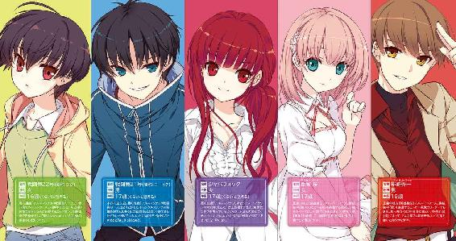
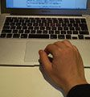

| VS!! ―正義の味方を倒すには― (電撃文庫) | |
| 和泉 弐式 | |
| (2014) | |


本書（電子版）に掲載されているコンテンツ（ソフトウェア／プログラム／データ／情報を含む）の著作権およびその他の権利は、すべて株式会社ＫＡＤＯＫＡＷＡおよび正当な権利を有する第三者に帰属しています。
法律の定めがある場合または権利者の明示的な承諾がある場合を除き、これらのコンテンツを複製・転載、改変・編集、翻案・翻訳、放送・出版、公衆送信（送信可能化を含む）・再配信、販売・頒布、貸与等に使用することはできません。
プロローグ
雷鳴のような破砕音が、夢の国に漂う甘ったるい空気を叩き壊した。
〈それ〉が落下した場所は、遊園地の入り口付近にある大広場だ。
広場に設置された巨大な噴水。その中心にそびえ立つ剣を模したモニュメントが、轟音と共にあっけなく砕け散った。巻き起こった衝撃波が噴水を吹き飛ばし、大量の水飛沫が人々に浴びせられる。入場したばかりの家族や、マスコットと並んで写真を撮っていたカップルたちが、悲鳴を上げて身をすくませた。
いったい何が起こったのか把握できず、ざわめきの中、誰もが周囲に飛散したモニュメントに目を奪われていた。
たった二人の例外を除いて。
「......待ちくたびれたぜ」
一人の少年が、笑みを浮かべて呟いた。その視線はモニュメントの残骸ではなく、噴水の中心──モニュメントがあった場所に向けられている。
舞い上がった水飛沫で薄い虹のかかるその場所に、テニスボールサイズの小さな球体が、ふわふわと浮いていた。〈それ〉の放つ穏やかな輝きは星の瞬きのようで、不思議と少年の心を惹きつける。
「ニーイチ、あまりにやけないでください。不自然です」
「ん？」
隣から聞こえた涼やかな声に振り向くと、赤い風船を手にした少女が、呆れた顔をして彼のことを見つめていた。
身長は少年よりも頭ひとつ分小さい。小さな耳を隠す程度の短い黒髪が、かすかに濡れて瑞々しい艶を見せている。シャツの上に薄手のパーカーを羽織り、デニム地のショートパンツをはいている彼女は、まさしく「人間」のようだった。もちろん少年も、周りの人々からすれば人間に見えているのだろう。
「ここは遊園地なんだぜ、ジジ？ ちょっとぐらい笑ってたほうが自然だろ」
「状況を見て言ってください」
「きっきっき！ そりゃそうだ！」
「だから......」
「さあ、ショータイムだ！」
興奮する彼の横で、ジジと呼ばれた少女が小さなため息をついた。その手から赤い風船が離れる。
ニーイチ──戦闘員21号は、ポケットに隠しておいたスイッチを押した。
ブシュウッと空気の勢いよく吹き出す音がして、大広場の至るところで白い煙が噴出した。突然の事態に、人間たちの絶叫が甘美に響く。だが、これは単なる目眩まし。白煙は瞬く間に大広場全体を覆っていき、濃霧のように皆の視界を奪ってしまった。
『戦闘員22号から全戦闘員へ。レコードスフィアの出現を確認。各自、速やかにポイントまで〈転移〉してください』
『了解』
頭の中に直接語りかけてくるようなその声は、彼ら戦闘員が持つ技能の一つ〈通信〉によるものだ。
不意に風が吹き、煙が流れた。次第に視界が晴れていく。
やがて白い世界がその形跡のみを残して消え去ったとき、辺り一帯を黒い異形の集団が埋め尽くしていた。地下基地から〈転移〉してきた戦闘員だ。
フルフェイスメットのように流線的な頭部。紫黒色のインナースーツを纏ったような体は、肩、腕、胸部や脚部など、ところどころが鋼色の外骨格に覆われている。なかでも右腕を覆う外骨格の先端は鋭く尖り、獣の爪のようだ。
21号とジジも、ヒトのようで、しかし異質な存在へとその身を変化させていた。女戦闘員であるジジは、メット状の頭部が男に比べやや小さく、より流線的なフォルムをしている。外骨格で覆われている部位も若干異なり、しなやかな曲線を描く肢体が見て取れた。
そして、
「グルルルルル......」
黒の戦闘員たちに紛れて、ただ一体。広場の中央に、体長三メートルはあろう巨大な獣が立っていた。
グランドタイガーと名づけられたその怪人の姿は、二足で立っていること以外は虎に似ている。肩幅が広く筋骨隆々とした体は、黒い縞の混じる橙色の毛に覆われていた。獣の頰がぐにゃりと歪み、溢れた唾液が、口の両脇から伸びる剣歯を伝ってぼたりと地面に落ちた。
「ア、ア、アルスマグナだあああああああああ！」
半狂乱で叫ばれる組織の名。共鳴するような絶叫と共に、人間たちが一斉に走りだした。遊園地の出口へ、あるいは奥へ、はたまた建物の中へと、誰もが必死の形相で逃げ惑う。着ぐるみのマスコットも、転んだ拍子に落ちた首を捨て置き、一心不乱に逃げていた。
「やっぱこれだよな、これ！」
人間たちを戦闘員が追い回すのを見て、21号は喜びを抑えきれず飛び跳ねた。
「ジジ、オレたちも混ざろうぜ──お？」
ネコを模したマスコットの頭部が、21号の足元まで転がってきた。ひょいとそれを蹴り上げた21号は、さも当然かのようにそれをかぶった。
「っしゃあ！ 待ってろよ人間ども！」
「シュールすぎます、ニーイチ」
「いいだろ、これ。きっとガキどもがびっくりするぜ」
「バカすぎてですか？」
「21号、22号」
二人に駆け寄ってきたのは隊長だった。変身した隊長の姿は、21号と比べてわずかに身長が高いが、違いといえばそれだけだ。人間たちにはほとんど見分けがつかないだろう。隊長は21号の頭を見て一瞬言葉を詰まらせたが、いつものことだと判断したのか、特に話題にはしなかった。
「レコードスフィアはグランドタイガーが回収した。だが、今回もハズレのようだ」
「またかよ。なら、さっさと帰ろうぜ」
「何を言っている。まだ奴らが来ていないだろう」
「......まじめなこった」
「何か言ったか？」
「いいや、なんでも。じゃ、オレはしばらく楽しませてもらうぜ。なんてったって、ショーは始まったばかりだからな！」
言うなり21号は駆けだそうとし──
「そこまでだ、アルスマグナ!!」
大広場に響き渡った一つの声に、ぎくりとして動きを止めた。21号だけではない。すべての戦闘員が人間を追うのをやめ、声のした方向に視線を向けた。
広場の入り口に、五人の男女が立っていた。逃げ惑う他の人々とは違い、赤、青、黄、緑、桃色のジャケットをそれぞれ着た彼らは、力強い反抗の意志を瞳にのせて、怪人グランドタイガーを睨みつけている。
「よく来たな、英雄機関......！」
グランドタイガーが、唸るような重低音で叫ぶ。その手に持つレコードスフィアを口の中に放り込み、ごくりと飲み込んだ。
「スフィアが欲しければオレから奪ってみせろ。だが、今までと同じと思うなよ。オレは他の奴らとは違う。二度と我らの野望を邪魔できないよう、貴様らの肉を喰らい尽くしてくれる!!」
「いいや、同じだ。お前がどれほど強くても、俺たちのすることはいつだって変わらない」
赤ジャケットの青年──緋崎秀一は、胸ポケットから一枚のカードを取り出した。トランプサイズのそのカードは、灯火のような赤い光を穏やかに放っている。「油断するなよ」
「はい！」隣に立つ少女が頷き、桃色のカードを構えた。
「了解......」猫背の大男が平坦に答え、黄色のカードを手に取る。
「誰に言ってんの」長髪の女は笑い、青のカードを。
「姉貴にだろ」少年は緑のカードを取り出す。
「システム【鎧】スタンバイ！」
彼らの声に呼応するかのようにカードの輝きが増し、回路基板のような直線模様が浮かび上がった。そのカードを、彼らはスナップを利かせて上へと放り投げる。
くるくると回転するカードはそれぞれの真上に。そして──
「──召喚!!」
カードから降り注いだ閃光が、五人の体を包み込んだ。
眩い光が発せられる中、怪人の勇ましい咆哮が戦闘開始を告げる。戦闘員たちが喚声を上げ、光を目がけて走りだした。
これまで幾度となく繰り返されてきた、正義と悪の戦いだ。熱気渦巻くその一方で、21号は一人肩を落とし、着ぐるみの頭部を放り捨てた。
「短いショーだったな」
†
戦闘開始から十分。
「終わりか？」
突き刺すような緋崎の声に、グランドタイガーが苛立たしげに咆えた。その視線の先には、【鎧】を身に纏った正義の味方が、赤い剣を片手に悠然と立っている。
そこにいるのは、ヒトの形をした機械だ。流れるような形の兜は顔全体を隠しているが、目の部分を覆う黒いバイザーが怪人を睨みつけているように見えた。肩や胸はもちろんのこと、指や足先に至るまで、すべてを赤と銀を基調とした装甲で包まれているその体は、無機質でありながら神々しく、まるで名匠の作り上げた石像のようでもある。
広場に他四人の英雄の姿はない。彼らは緋崎だけをこの場に残し、園内の各所にいる人々の救出に向かった。それらの英雄を相手取る戦闘員たちの状況も、今この場所とさして変わらないだろう。
「ったく、相変わらずだな......」
21号は思わず悪態をつく。
大広場では、すでに多くの戦闘員が重傷を負って動けなくなっていた。頼みの綱の怪人も、右腕を斬り落とされて苦悶の声を押し殺している。傷口から溢れ出す赤い液体が、アスファルトに鮮やかな痕を残した。
赤い鎧──〈紅蓮〉がカシャンと冷たい金属音を鳴らし、一歩、前に出た。
「来ないなら、こちらから行かせてもらう！」
「グランドタイガーを援護しろ！」
隊長が〈紅蓮〉に突っ込んでいき、皆もそれに続いていった。21号も舌打ちをしてあとに続く。
〈紅蓮〉は、襲い来る戦闘員たちをものともせず、じりじりと怪人との間合いを詰めていく。剣を振る。殴る。蹴り飛ばす。彼の一挙手一投足で、戦闘員たちは嵐に巻き込まれた木の葉のように宙を舞った。
「──覚悟しろ、英雄！」
「あ、馬鹿っ！」
一人の戦闘員が21号の横を猛然と追い抜いていった。無謀にも真正面から英雄に襲いかかろうとする。すでに奴が剣を構えているのが見えないのか。
21号は反射的にそいつを蹴り飛ばしていた。
「ぐえっ！」
吹っ飛んでいく仲間。〈紅蓮〉の斬撃が空を切る。「何をするんだニーイチ！」と聞こえてきた文句を無視して、21号は目の前の〈紅蓮〉に意識を集中させた。英雄が何を考えているのか、冷たい兜からは感情が読み取れない。ただ、直前の空振りで隙が出来たように思えた。攻撃すべきか？
迷いは一瞬。21号はすぐに後ろに飛び退いた。攻撃の間合いから外れると、〈紅蓮〉は興味を失い21号から視線を外す。代わりに見据えたのは、怪人グランドタイガーだ。
そのとき、赤い鎧にかすかな緊張が走ったことに21号は気がついた。
グランドタイガーの左手に、小さなビンがあった。彼の巨大な手に対してあまりに小さいそのビンは、薄青色の液体で満たされている。怪人はニヤリと笑ってビンの口を嚙みちぎり、中の液体を一気に飲み込んだ。
「......グ......ア......ガアアアアアアアアアアアアアアアア！」
大地を揺るがす巨大な咆哮。背中を丸めた虎の体が、どくん、どくん、と律動を繰り返す。そのたびに、グランドタイガーの巨体が一回り、二回り、徐々にしかし確実に大きくなっていく。
ついには数十メートルの巨大さにまで達した。持ち上げられた足が風を巻き起こす。すでに半壊状態の噴水が、今度はガラス細工のように踏み潰された。
「撤退だ！」
隊長の叫び声が聞こえると、すかさずジジの〈全体通信〉が頭の中に響いた。
『戦闘員22号から全戦闘員へ。怪人が【エリクサー】を使用し、巨大化。生存者は速やかに基地に〈転移〉せよ。繰り返す。生存者は速やかに基地に〈転移〉せよ』
その間にも、生き残った仲間たちがグランドタイガーを見上げて声援を送っている。
「やっちまえー！ グランドタイガー！」
「勝てる！ 勝てるぞおおおおお！」
「奴らを倒せえええ！ ぶちのめせえええええええ！」
名残惜しげにする彼らとは違い、21号の行動は迅速だった。英雄のもとを離れ、戦闘域から脱出する。〈紅蓮〉が追いかけてくることはない。もはや彼の興味は、巨大化した怪人だけだ。
この後の展開は目に見えていた。
鎧を纏った五人の英雄たちが、怪人に対抗するために【巨大鎧】を召喚する。怪人はそれを相手に奮闘するが、結局最後には、倒される。要約してしまえばそんな筋書きだ。
建物の陰に隠れた21号は、すぐさま地下基地への〈転移〉を開始する。そして、天を衝くグランドタイガーの咆哮を耳に、遊園地から姿を消した。
†
その日。
21号の予想通り、怪人は敗北した。地下基地が戦闘員たちの呻き声で満たされる中、彼は小さく肩をすくめるだけだった。
敗北。敗戦。決まりきった負け戦。
なんのことはない。いつもどおりの、悪の組織の日常だ。
21号は思っていた。
今までも、これからも。こんな他愛もない日常が、自分が死ぬまで何度でも、飽きることなく繰り返されるのだと。
────そう思っていた。
１
まどろみの外で、カチリ、という音が聞こえた気がした。
次の瞬間、唐突に、けれど予定通りに目覚まし時計がけたたましいベル音を鳴らし始める。
ジリリリリリリリリリリリリリリリリリ！
甲高い金属音が容赦なく頭を叩く。二段ベッドの上段で気持ちよく眠っていた21号は、呻き声を上げて寝返りを打った。目覚まし時計は下段のベッドに置かれているため、起きない限り止めることはできない。21号は布団を頭からかぶり、目覚まし時計の猛攻からなんとか耳を守ろうとする。
と、そこで不意にベル音がやんだ。リィンと、かすかな残響を残し、部屋に静寂が訪れる。
これ幸いともう一度眠りの大海へ舟を漕ぎだそうとした21号だったが、そんな彼を引き止めるように、ぎしりとベッドの軋む音がした。
「起きてください、ニーイチ」
肩に当てられた手が、メトロノームのように精確なリズムで21号を揺する。
「んん......？」
布団から顔を出し、うっすらと目を開けると、22号──ジジの姿が目に入った。いつものように彼女は二段ベッドの梯子に足をかけ、21号の顔を覗き込んでいる。
目覚まし時計より早起きの彼女は、すでに制服に着替えているようだった。女戦闘員用の制服は、ジャケットやスカート、ニーソックスまで、全体的に黒で統一されている。白いラインが何本か入っている程度のデザインで少々味気ない代物だが、不思議とジジには似合っていた。
「......今、何時？」
「七時半です。急いでください」
寝ぼけ眼をこすりながら、ジジの涼やかな声を耳にする。
彼女がベッドから下りると、その体で遮られていた朝日が21号を照らし、彼は思わず目を細めた。
「ふぁ～あ......」
もぞもぞと上体を起こすと、一度大きく伸びをして、21号は梯子を伝ってベッドから下りた。
二人の部屋はひどく殺風景だ。十畳ほどのリビングにあるものといえば、質素な造りの二段ベッド、目覚まし時計、背の低いテーブルと床に敷かれたクッション、台の上に置かれた十九型の液晶テレビ。それぐらいだ。ベランダ側の窓にかけられたオレンジ色のカーテンが、かろうじて部屋にあたたかみを残しているが、今ひとつ生活感が欠けている。
洗面所で顔を洗ってからリビングに戻ってくると、テーブルの前で姿勢よく正座をしているジジが、朝のニュース番組を眺めていた。21号も、クローゼットから取り出した黒いジャケットとスラックスを身に着けながら、横目でテレビを観る。
テレビには、遊園地の大広場を上空から撮影した映像が流されていた。小さくて見にくいが、赤い鎧を身に着けた英雄が次々と戦闘員たちを薙ぎ倒していく様子が見て取れた。ヘリに同乗しているリポーターが、「皆さん見てください、圧倒的です！」「さすが私たちの英雄！」「正義は勝ちます！ 悪は滅びる運命なのです！」と興奮気味に叫んでいる。
と、そこでジジがテレビを消した。彼女はリモコンをテーブルに置くと、すっと立ち上がる。
「時間です。そろそろ行きましょう」
「おう」
行くといっても、ドアの外に出る必要はない。クローゼットから取り出した黒靴を履くと、二人は目を閉じた。
意識を集中させ、〈転移〉の目標となる微小生物──【ゲート】の生体反応を探る。さほど時間をかけずに、21号は地下基地に配置されたゲートを見つけた。
どこからか生じた黒い闇が、自身の体を溶かすように覆っていくのがわかる。
〈転移〉に要した時間は、きっかり十秒だった。
†
体を包み込んでいた暖かさが唐突に消え、かわりにひんやりとした空気が彼の頰を撫でた。
〈転移〉後に来る特有の気怠さを感じながら、ゆっくりとまぶたを上げる。
21号とジジは、無機質な石の壁で構成された立方体状の部屋にいた。さっきまでいたマンションの一室と比較してずいぶん広い。前方の壁には、おんぼろのエレベーター。そこから地下基地本部、あるいは地上へ向かうことができる。ここ第一階層は、あくまでエントランスだ。
左側を見ると、十メートルほど先の壁に半円形のカウンターテーブルが設置されていた。テーブルの向こう側には、真っ黒なドレスを着た女性がぽつんと座っている。
服とは対照的に、清涼感の漂う色白の肌。透き通った琥珀色の瞳はガラス細工のようだ。肩の辺りでゆるやかにウェーブしている栗色の髪もなめらかすぎて、どこか作り物めいていた。
ただ座っているだけで静謐な存在感を発する彼女は、まるで生きているのを忘れてしまったかのように、ぴくりとも動かない。背筋をぴんと伸ばし、こちらを見ている。二人は彼女のいるカウンターまで歩み寄った。
「戦闘員22号、21号の立ち入り許可をお願いいたします」
ジジが声をかけると、受付嬢はにこりと微笑んだ。精巧な人形に命が吹き込まれたかのように、とても自然で、優雅な笑みだ。
「おはようございます、ジジ。よかった、まだ生きていらしたのですね」
「ええ、おかげさまで」
「おい。オレは無視かよ？」
「あら、21号」受付嬢が口元を指先で隠す。ひどくわざとらしい。「いたのですか」
「見りゃわかるだろ」
「おはようございます、21号。まだ生きていらしたのですか？」
「なんで不満そうなんだよ！」
「申し訳ございません」
「否定しろよ！ 謝られても困る!!」
嚙みつく21号を無視して、受付の彼女は手元の端末のキーを数回叩いた。
「立ち入り許可が下りました。どうぞ先へお進みください。それと21号。ミクニ先生から伝言を預かっております」
「伝言？」
「すぐに医務室に来るように、とのことです。戦いの後、治療をせずに帰ったらしいですね」
「あー......ちょっと忘れてただけだって。会議終わったら行くからさ」
「先生は『すぐに』と仰っておりますが」
「んなこといっても、作戦会議まで時間がないだろ。ちゃんと行くから心配しなくても大丈夫だって」
「わたくしは心配しておりません」
「けっ、そうかよ。なら、オレの好きにさせてもらうぜ」
「ですから、わたくしは、心配しておりません」
「ん？」
ちらりと隣を見ると、ジジがじぃっと21号を見つめていた。表情の変化に乏しい彼女だが、今はなんとなく、むっとしているような気がする。目が合うと、ジジはふいっと顔を逸らした。
「......えーと」
「それではジジ、21号。先へどうぞ」
にこりと微笑み、受付の彼女がエレベーターを手で指し示す。ジジが頭を下げ、さっさと歩きだしてしまったので、21号は慌てて彼女を追った。
おんぼろのエレベーターに乗り込み、地下基地の第五階層──戦闘員の区域に向かう。
エントランスが立方体であれば、地下基地の本部は円筒だ。等間隔に扉の付いた白い壁が、両側に、ぐるりと大きく周回するように伸びている。
フロアの中心は巨大な空洞になっていて、そこをガラスの壁が取り囲んでいた。ちょうど、円筒の中心をガラスの柱が貫いているような格好だ。空洞は第二階層から第七階層まで繫がっている。
ジジがガラスの壁に近づいていった。引き寄せられるように21号も彼女に続き、ガラスの中を覗き込んだ。
ここより下の第六、第七階層には空洞を囲むガラスが存在しない。フロア部分の照明が届かない奥底は、真っ暗闇だ。空洞はどこまでも続いているように見える。
と、そのとき、眼下の空間に光が生まれた。
どこかホタルを思わせる、青く儚げな光だ。何もかもを飲み込んでしまいそうな暗闇がゆるやかに払われ、空洞の底が照らされた。
闇が覆い隠していたその場所に、大人一人がゆうに入るほどの巨大丸底フラスコが、縦九個横九個、機器に取り付けられて規則正しく整列していた。フラスコはどれも薄青色の液体で満たされており、その液体が、淡い光を発している。光はすぐにしぼんでいったが、しばらくすると再び芽吹き、地面の存在を主張した。発光周期は三秒に一回。そのたびに淡い光の集合がフラスコの並ぶ空間を一斉に照らし出し、一瞬後には、深い暗闇がそれを飲み込んでいく。
繰り返される光と闇。
「いち、にい、さん......」
21号が人差し指を動かしながら呟いた。
「......二十五か。ま、少ないほうだな」
「ええ」
発光が行われるたびに、フラスコの中に人型の影が小さく浮き出て見えていた。生成中のホムンクルスだ。
組織には様々な役割を持つホムンクルスがいるが、その中でも【戦闘員】は八十一人までと決められていた。また、戦闘員は他のホムンクルス、たとえば事務部や医療部のホムンクルスと違い、固有名を持たず、１号から81号までのナンバーで呼ばれることになっている。そして、もし出撃などによって消滅者が出た場合、穴埋めをするように新しいホムンクルスが創られるのだ。
今、ホムンクルスが入っているフラスコは二十五個。彼らは昨日消滅した分の補充員だ。まだ生成には時間がかかるようだが、やがて彼らもナンバーを引き継ぐことになるだろう。
「......ニーイチ、体は大丈夫ですか？」
ジジが不意に言った。
「へーき、へーき。大した怪我はしてねえよ」
「本当ですか？」
「本当だって。大体、怪我してたからって治療するかしないかはオレの勝手だろ」
「戦闘員にとって、作戦後の治療は当然の義務です。いくら再生能力があるとはいえ、治療を怠っていいわけではありません。それに、どうせ薬を飲みたくないとか、そういう理由で嫌がっているだけでしょう？」
「..................いやいや。何言ってんだよ。そそそそんなわけねえだろ？」
「動揺しすぎです」
「違うって！」
（違わないけどな！）
心からの悲鳴に必死に蓋をして、21号は叫ぶ。
人間よりも自然治癒力が高い戦闘員は、ある程度の怪我ならば特製の飲み薬を服用し、再生力をさらに向上させることで治すことができる。しかし、尋常じゃなくまずいのだ、これが。だが、男として「薬が苦いのが嫌なんだ」なんてことは、とてもじゃないが口にできない。
「オレは......オレは......、そう！ ミクニの奴が大嫌いなんだよ！」
ぱっと思い浮かんだのは、医療部に所属する一人の女医の顔だった。
「そうなのですか？」
「ああ！ あの女の治療を受けるくらいなら怪我で死んだほうがマシだね！」
「あなたが死んだら、先生は悲しむと思いますが」
「悲しみゃいいさ。で、一人の戦闘員も救えなかった自分の無力さを悔やみやがれってんだ！」
「だ、そうですが、ミクニ先生」
ジジの視線は、21号の背後を捉えていた。嫌な予感に襲われながら、21号はおそるおそる振り返る。
「言いたいことはよーくわかった」
黒縁眼鏡をかけたブロンドの美女が、満面の笑みを浮かべて立っていた。胸元の大きく開いた赤いシャツの上から白衣を羽織り、聴診器をネックレスのようにかけている。笑ってはいるものの、その表情は蠟人形の如く固定されていてむしろ怖い。
「ミクニ......先生。いつから......？」
「『ニーイチ、体は大丈夫ですか？』から」
「最初じゃねえか！ おい、ジジ！ お前〈通信〉で呼んだだろ！」
「濡れ衣です」
「私が勝手に来たんだよ。どうせあんたのことだから、素直に医務室には来ないだろうと思ってね。さあ、大人しく来なさい」
「い、いや、でも今から会議があるしさ」
「治療が先。ほら、来い！」
がしりと首根っこを摑まれ、21号はずるずるとミクニに引きずられていった。
２
「んー......打撲、アバラにひび......内臓も微損傷ってところかな。再生槽に入る必要はなさそうだけど......ほんと、よくこんな体で生活しようと思えるね」
医務室にミクニの呆れた声が響く。彼女は21号の胸から聴診器を離し、横に置かれた机でなにやら書き込みを始めた。室内には机が一つに椅子が数脚、白いシーツのかけられたベッドが一台と、薬品棚がいくつか置いてあるだけだ。
ミクニは近くの薬品棚の中から、二本のビンを持ってきた。透明な小ビンの中には、見るからにドロドロとした紫色の液体が入っている。
「はい、これ飲んで。こっちが骨再生の促進剤、こっちが内臓修復用ね」
「............」
「早くしないと、逆に再生力を落とす薬を飲ませるよ。薬のありがたみを知りなさい」
「......飲めばいいんだろ、飲めば」
観念して二本の小ビンを受け取り、中身を一気に飲み干した。どろっとした苦味が舌と喉と胃にへばりつき、むせそうになる。
「ぐええええええ、まじい......」
「はい、水」
ミクニが笑い、机の上に置いてあった飲みかけのペットボトルを差し出した。21号は半ば強奪気味にそれを受け取る。
「......ぷはぁっ。うあー、ダメだ。まだ苦い......せめて錠剤にしてくれよ」
「骨折と内臓損傷が飲み薬で治るんだ。文句を言うな」
「しょうがねえだろ、苦いもんは苦いんだ」
少しでも苦味を薄めようと、21号は貪るようにペットボトルの水を飲む。ミクニが苦笑して言った。
「まったく。これがアルスマグナの戦闘員とはね」
アルスマグナ。
それが、21号の所属する組織の名称であり、生みの親の名だ。
人間たちから「悪の組織」と呼ばれ、恐れられているこの組織の特徴は、驚異的ともいえる科学力の高さにある。中でも群を抜いているのが、ホムンクルスやキメラ──通称怪人の生成などに代表される、これまでの科学では困難とされてきた創造技術だ。組織が世に現れてからすでに二年の月日が経過しているが、地上に住む人間たちは、組織が如何にしてこれらの新生物を生み出しているのか、ほとんど解明できていないらしい。
「それにしても、今回もこっぴどくやられたみたいだね。消えたのは二十五体だったか」
ミクニが机に頰杖をつく。黒のタイトスカートから伸びる白い脚を、なめらかな所作で組み直した。
「まあな。他の奴らの怪我は？」
「私が担当した限りじゃ、瀕死が二体、重傷が三体、軽傷が二体プラスあんた、ってところかな。他の先生のところは知らない」
「なんだ、結局オレは軽傷なのかよ」
「薬を飲めばだ、バカ。そんなことだといつか本当に死んじゃうよ」
「遅かれ早かれ、英雄にやられて死ぬけどな」
きっきっき、と肩を揺らす21号に、ミクニが目をぱちくりさせた。
「......なんていうか、ドライだね、21号は。みんなからは『次こそは』って聞くけど、悔しくないの？」
「悔しがったってどうしようもねえだろ。あいつら英雄に比べたら、オレたちなんてザコなんだし。だから──」
21号はぐしゃりとペットボトルを潰し、後ろに放り投げた。がこんと、背後でゴミ箱の音がする。
「オレたち戦闘員は、生き残ってりゃ勝ちだ。英雄機関の奴らを倒すなんてことは、幹部や怪人たちが頑張って、頑張って頑張って頑張って、それでも負けてればいいことさ」
「ひねくれてるなあ」
「じゃあ、ミクニはオレたちが勝てると思うのかよ？」
ミクニを困らせようと訊いてみたが、彼女は愉快げに微笑んだ。
「わからないよ。勝てるかもしれないし、勝てないかもしれない。いずれにしても私にできることは、生きて帰ってきたあんたたちを診て、治療してあげることぐらいさ。だから21号。もうサボらないでくれよ？」
「はいはい、了解。次こそはな」
「まったく......」
３
医療部のある第三階層から、再び第五階層へと下りる。
広さだけが取り柄といえる作戦室には、昨日の戦いで生き残った戦闘員が五十人ほど集まっていた。皆、思い思いの仲間と世間話に興じている。ただ、作戦室の奥にある壇上に、隊長の姿は見当たらない。まだ会議は始まっていないようだ。
何人かの戦闘員が、21号に気がついて声をかけてきた。
「おう、ニーイチ！ ミクニ先生に引っ張られて行ったって？ 羨ましいぞてめえ！」
「なんで知ってんだよ！ なあ、会議はどうなったんだ？」
「ん？ ああ......隊長から２号に連絡があって、しばらく待機しているようにだってさ」
「へえ！ あの隊長が遅刻かよ。そりゃまた珍しいな」
どうやら遅刻せずに済んだらしい。ラッキーだ。これで、あの堅物の隊長に小言を言われることもないなと、21号はほくそ笑んだ。
声をかけてくる戦闘員たちに手を振りながら前へ進んでいくと、部屋のなかほどでジジの背中を見つけた。彼女の前には一人の優男風の少年が立っていて、何やら話をしている。21号も知った顔だ。シャープな眼鏡と、上から下までぴっしりとしたシワひとつない制服が、とても彼らしい。
21号はジジたちの方に近づいていく。すると眼鏡の少年が彼に気がついたようで、それまでジジに向けていた笑顔から一変して、むっとした表情に変わった。
「......来たか、ニーイチ」
「よう、ロクロク！」
右手を上げ、にこやかに挨拶してみたが、戦闘員66号──ロクロクの反応はどうしてか芳しくないものだった。
「ニーイチ。お前、俺に何か謝ることがあるだろう？」
「別にねえけど？」
「少しは考えろ！ 昨日だ、昨日！」ロクロクが鼻息を荒くする。「お前、俺のことを蹴り飛ばしただろう！」
「蹴り飛ばした......ああ。あれ、お前だったのかよ」
「まったくお前という奴は！ 謝罪の一言ぐらいあってもいいんじゃないか？」
「わりいわりい！」
笑いながら謝罪する21号に、ロクロクはぐったりと肩を落とした。だが、すぐに気を持ち直したようで、真剣な眼差しを向けてくる。
「まあ、俺を蹴ったことは許そう。蹴り飛ばした理由もわからなくはないからな。だが、あれはダメだ」
「なんのことだよ」
「ニーイチ。あのとき、なぜ攻撃しなかった」
それは、21号に訊ねているようにも、彼が自分自身に問いかけているようにも聞こえた。
なぜ。
どうしてあのとき──。
「俺はしっかり見ていたぞ。お前、隙だらけの〈紅蓮〉から逃げただろう。攻撃を仕掛けることができたはずなのに」
21号はつまらなそうに口を尖らせる。
「できねえよ。奴はちゃんとオレの方を見てた。もしあのとき襲いかかっていれば、たぶんオレはここにいないぜ？」
「やってみなければわからないだろう。それに、たとえ死んでいたとしても一矢報いることができたかもしれない」
「一矢報いる？ カスリ傷一つのために死ねってか？ ばかばかしい。そんなことしたってな、どうせオレたちじゃあいつらには──」
勝てない。
そう言おうとしたとき、制服の袖を誰かがくいっと引っ張った。喉まで出かかっていた言葉も一緒に引かれ、口の中にとどまる。
引っ張られた方を見ると、袖の先を持ったジジが、21号のことを見上げていた。彼女の目が、そこまでにしてください、と言っている。21号が腕を引き寄せるより前に、ジジがパッと袖を離した。
ロクロクが辺りを見回し、声のトーンを抑えて言う。
「口に気をつけろ。みんなもいるんだぞ」
「いいだろ別に。本当のことなんだから。実際、今回だって負けたじゃねえか」
「うぐ............たしかに、今回は負けた」
ロクロクは悔しそうにうつむいたが、すぐに顔を上げると、胸の前で拳を握った。
「だが、次こそは勝ぁーつ!!」
「オレ、前回も前々回もその言葉を聞いた気がするんだけど」
「前回は前回。今回は今回だ。これまでがどうであろうと、次こそは勝てる！ 絶対にだ！」
「どっからくるんだよ、その自信は......」
「ん？ お前知らないのか？ 次の怪人のこと。......もしかして、ジジもか？」
「？」
三人の間に沈黙が下りる。やがて、ぽかんとしていたロクロクの顔が、にやぁっと歪んだ。
「ふふふふふふふふ」
「うわ、気持ち悪っ」
「そうか、そうか。知らないのか」
腕を組んだロクロクが得意げな様子で頷く。
「うんうん、そうかー、なるほどなあ、知らないならしょうがないなあ、いやー、でも、これを知らないっていうのはなー」
「おい、ロクロク。早く言え」
「ふふん、そう急かすな。いいか、二人とも。これは噂なんだがな......なんと！ 次の怪人は史上最強の怪人らしいんだ！」
自信満々といった面持ちで、ロクロクが言った。
対する21号の感想はシンプルだった。
「......信憑性ねえなあ」
「ええ」
ジジも頷き、ロクロクがうっと喉を詰まらせた。
「ほ、本当だぞ？ この話は研究部のホムンクルスから聞いた話でな。なんでも、次の怪人ジャバウォックは、あのドクター・パラケルススが創り出したらしい」
「パラケルススって......幹部の？」
「そう、【第一の怪人】の創造者であり、俺たちホムンクルスの生みの親......。アルスマグナ発足当時から今まで、最初の一体を創っただけだったらしいが......そのドクター・パラケルススが、二年間の沈黙を破って新たな怪人を創り出した。その怪人──ジャバウォックが史上最強でなくてどうする!?」
「どうするって言われてもな。でも、まあ......本当なんだとしたら、そりゃ確かに強そうだ」
「だろう？」
ふっふっふと笑うロクロク。
「だから、次こそは勝てる。史上最強の怪人が暴れ回るのを、俺たちは全力でサポートするんだ。英雄たちの足止めでも構わない。俺たちに大きな力はないかもしれないが、それでもできることはあるはずだ」
ロクロクの瞳がめらめらと燃えていた。
21号もさすがに水を差す気にはなれず、ぽんと彼の肩を叩いてやる。
「がんばれよ！」
「なんで他人ごとなんだ！ お前も頑張るんだよ！」
ますます熱くなる彼に、21号は肩を揺すって笑う。
「ま、史上最強かどうかはともかく、どんな奴かは楽しみだな。今日顔見せだろ？」
「ああ。さすがにそろそろ隊長も来ると思うんだが」
「噂をすれば、ですね」
作戦室のざわめきが唐突に跳ね上がった。が、すぐに静寂の波が作戦室に広がっていく。
同時に人垣が割れ、扉から伸びる一本の道が出来上がっていく。そこを、小脇に灰色のファイルを抱えた一人の戦闘員が、威風堂々とした様子で歩いてきた。
大柄で、鍛え上げられた体が制服越しからでもわかる。きりっとした眉の下にある瞳は鋭い眼光を発し、口は真一文字に結ばれていた。短い顎鬚が、武者のような男らしさを一層際立たせている。戦闘員１号──隊長だ。
部屋の奥まで進んだ隊長は、五段ある階段を上り、壇上へと上がった。そして、中央に置かれたデスクにファイルを置き、一つ深呼吸をしてから声を張り上げた。
「遅れてすまない。急で申し訳ないが、皆に知らせておくことがある」
隊長が、淡々と告げる。
「怪人が逃げた」
４
都内Ｓ区の昼下がり。
空には雲一つなく、澄みきった青色が迷うことなく広がっていた。燦然と輝く太陽が、立ち並ぶビルと行き交う人々の影を、アスファルトの上に色濃く落としている。
夏休みだからか、平日だというのに街は若者たちで溢れ返っていた。それこそ、どこを見てもヒト、ヒト、ヒトだ。
「だあ！ 見つかるわけねーだろ、こんなもん！」
我慢の限界に達し、21号が叫んだ。すれ違うヒトの何人かがこちらを振り向いたが、キッとイラついた目を向けると、視線を逸らして去っていった。
21号とジジが街で怪人の捜索を開始してから、すでに二時間が経過していた。
事務部のホムンクルスたちがいくら基地を捜しても怪人は見つからず、結局、地上のどこかに〈転移〉したという結論に至ったのだ。
〈転移〉とは、ホムンクルスや怪人に備わっている技能で、人間たちがテレポーテーション、あるいはジョウントと呼んでいる力だ。ゲートが生きている場所へなら短時間で移動できるため重宝している力だが、人間たちに見られる恐れがあることや、使用時に体力を消耗してしまうことから、乱用は禁じられている。
しかし、そのことを逃げた怪人が気にしていたとは思えない。エントランスの受付嬢も姿を見ていないことから、ジャバウォックは自分の待機室から直接どこかへ〈転移〉したようだった。
怪人の待機室には、一枚の紙が残されていたらしい。そこには短く、こう書かれていた。
【旅に出ます。捜さないでください。
──怪人 ジャバウォック】
予定されていた作戦会議は、すぐさま怪人捜索会議へと趣旨を変え、結果として二人一組で捜索するという非常にシンプルな作戦が立案された。
21号はジジとＳ区東部を回ることになったが、こう人間が多くては肝心の怪人を見つけられる気がしない。
「ったく、ロクロクの奴。なーにが史上最強の怪人だ。逃げた怪人なんて前代未聞だっつーの。無理だ無理。見つかんねーよ」
「飽きないでください」
「あーあ、スフィアでも落ちてこねえかなあ」
21号は期待を込めて空を見上げるが、何かが降ってくる様子はない。
レコードスフィア。それは、過去から現在に至るまでのあらゆる情報・思念の集合体──【生命の書】から漏れ出た情報の結晶だ。
ほとんどの場合、まとまりも利用価値もない思念が詰まっているだけのスフィアだが、稀に非常に有益な知識が記述されていることがある。アルスマグナのホムンクルスや怪人、そして英雄機関の【鎧】といったオーバーテクノロジーは、レコードスフィアから得られた知見を基に生み出されたものだ。テクノロジーといった一面だけに目を向けても、アカシックレコードの影響力は計り知れない。
だが、本来アカシックレコードが恐ろしいのは、世界中の情報が個人レベルで記述されている点だ。もしレコードから自由に情報を抽出できれば、ただの一般人から政府の要人まで、全人類の弱みを掌握することも可能だろう。だからこそアルスマグナは、世界征服の足がかりとなるレコードスフィアを狙っているのだ。一方で世界の各国は、そんな「バランスを崩す」代物を認めるわけにはいかず、スフィアの破壊を推奨している。少なくとも、表向きには。
「......ん？」
いつのまにか、隣にジジがいなくなっていた。振り返ると、数メートル後ろに、ビルとビルの間に目を向けて立ち止まっている彼女がいた。
そんな彼女を、男たちがちらりと盗み見ていくことに21号は気がついた。
背丈こそ小さいもののジジはスタイルがよく、何を着ても大抵似合う。今日の服装はライトイエローのＴシャツに、すらりと見える水色のミニスカート。足に履いたヒールつきのサンダルが涼しげだ。右の手首にはシュシュを着けていて、ちょっとしたアクセントになっている。
21号はジジに駆け寄り、彼女の背後から声をかけようとしていた男を睨みつけて追い払った。
「どうしたんだよ、ジャバウォックでも見つかったか？」
「いえ、そういうわけではないのですが......」
ジジが見ている先は、薄暗い路地裏だった。
人通りはない。というより、意図的に皆が避けているのかもしれなかった。
やや遠目にだが、路地裏に四人の少年の姿が見える。一人は胸に鞄を抱え、背中を壁に押しつけるようにして立っている。その彼を、他の三人が取り囲むようにして立っていた。
恐喝、というやつだろう。
「人間も暇ですね。すみません、行きましょう。......ニーイチ？」
「わるい。ちょっと待っててくれよ」
ジジに引き止められるよりも早く、21号はひらひらと彼女に手を振り、ビルの隙間へとその身を進めた。
少年たちの方へ近づいていくと、少しずつ声が聞こえてきた。
「ちょっとでいいからさあ」
「俺たち困ってるんだよ」
「今度返すって。な？」
悩みの一つもなさそうな、カラカラとしたひどく陽気な声だ。時折「こ、今度っていつだよ......！」だとか、反抗の言葉も聞こえてくるが、他の三人のそれに比べればどうにも弱く、か細いものだった。
鼻歌まじりに21号が彼らに歩み寄っていくと、三人組の一人が気がつき「おい、なんか来たぜ」と他の仲間に言った。
「なんだよ、お前。取り込み中なんですけどー」
「つーか、あっち行けよ。ブッ殺すぞ」
不愉快そうな視線が投げかけられるが、21号は立ち止まらない。
三人組はお互いに顔を見合わせると、一人を少年の前に残し、他の二人で21号の前に来た。
一人は茶髪。もう一人は金髪。どちらも耳にピアスを着けている。外見からは21号と同じぐらいの年齢に見える。おそらく高校生だろう。
茶髪の少年が、にやにや笑いながら言った。
「何？ お前、あいつの知り合いなわけ？」
21号は答えない。
「おい、黙ってんじゃねえよ。ブッ殺すぞ」
今度は金髪のほうが不必要に顔を上下させながら睨みつけてきた。しかしそれでも、21号はにやけた顔を彼らに向けてやるだけだ。
「んだ、てめえ。ムカツクんだけど。ブッ殺されてえのか！」
「......きっきっき！」
もうしばらく黙って反応を楽しむつもりだったが、金髪の様子に思わず笑ってしまい、21号は口を開くことにした。
「お前さ、もうちょっとバリエーション持たせろよ。ブッ殺すぞ」
「っ......てめえっ！」
金髪が顔を赤くし、ぶんと大振りのパンチを打ってきた。
21号はひょいと半身になりその拳をよけると、金髪に足をひっかける。少年は勢い余ってアスファルトに倒れ込んだ。
すぐさま、背後で茶髪の少年が動いたことを感じ取る。身を屈ませると、頭の上を風が過ぎていった。顔を上げるとそこに、パンチをよけられて体勢を崩している茶髪の姿。とん、と肩を軽く押してやると、金髪の少年に覆いかぶさるようにして彼も転んだ。倒れた二人は放っておいて、21号はすたすたと壁際まで歩く。残りの一人が顔を引きつらせ、あからさまに狼狽していた。今のわずかなやりとりで、敵わないと悟ったのだろう。21号はにこりと微笑みかけてやる。
「カネ」
「え？」
「お金くれよ、お金。ちょっとでいいからさあ。困ってるんだ、オレ」
「いや、でも......俺、金欠だし......」
「マジかよ。わりいな。それはさておき財布を出そうぜ」
21号はくるりと振り返り、後ろで固まっている茶髪と金髪にも微笑みかけた。
結局、三人全員からお金を巻き上げた。空になった財布を投げ返してやると、彼らは逃げるようにしてその場を去っていった。
「......これだけかよ。しけてるなあ」
「あ、ありがとうございます！」
ぽかんとしていた少年が目を輝かせ、勢いよく頭を下げた。きっきっき、と21号は肩を揺らす。
「いいって、いいって。礼なんて」
そして、ひょいと掌を出し、微笑んだ。
「カネ」
５
「何をしているんですか......」
路地裏から戻ってきた21号を迎えたのは、ジジの心底呆れたという顔だった。
21号は「わるいわるい」とちっとも悪びれていない様子で謝ると、そのまま先へ歩きだす。ジジがたたっと三歩走って、彼の横に並んだ。
「見たかよ、あいつらの驚いた顔」
さきほどの彼らのことを思い出し、21号の口からくっくっと笑いが漏れる。
「にしても、あの三人組はどうしようもないな。いびるのか金を取るのか、どっちかにすりゃあいいんだ。欲張ってモタモタしてるから、オレみたいな奴に乱入される」
「一番どうしようもないあなたが言わないでください。今日の目的を忘れていませんか？」
「どうせ見つからねえって。地下基地じゃあるまいし、世界がどんだけ広いと思ってるんだよ。ま、いーやなんでも。今のオレは機嫌がいい。それよりさ、ジジ」
「何ですか？」
「喉渇いただろ？」
得意げにそう言うと、21号は立ち止まった。その横に、赤い自動販売機が立っている。
「水飲もうぜ。ほら、オレたち金持って来てなかったしさ」
ジジがきょとんとした表情を見せたが、すぐに呆れたような、諦めたような笑みを浮かべた。
「気が利きますね、ニーイチは」
21号は自動販売機に千円札を投入し、小さいミネラルウォータのペットボトルを一本購入した。お釣りが音を立てて落ちてくる。
ジジにペットボトルを渡したところで、21号はふっとイタズラを思いついた。唇の端を持ち上げ、ポケットに入っていた残りのお金を取り出すと、お札ごと釣り銭口に押し込んでいく。
「何をしているんだい？」
「次ここで買った奴はさ、お釣りを取り出そうとしたらここから千円札が出てくるわけだ。びっくりするだろ？」
「あははっ、なるほど。うん、それはびっくりだ。だけど、それだけのために？」
「他に理由がいるのかよ？」
と、そこでようやく21号は振り向いて、声の主がジジではないことに気がついた。
まず目を奪われたのは、鮮やかな赤色の髪だった。見る者を惹きつけるその髪は、少女の左肩の上で結われ、胸でせり上がった純白のフリルシャツにかかっている。ジーンズの下にはスニーカー。服装はシンプルだ。イタズラっぽい瞳と弧を描く唇が常に何かをからかっているような不敵さを滲ませ、ゆらめく炎のように捉えどころがない。やわらかな体つきも、火傷するとわかっていても手を出してしまいそうな危うさを秘めていた。
髪の色もあいまって、すれ違った者のほとんどが振り返ってしまう、そんな少女だ。けれど、21号が言葉を失ったのは、その美貌ゆえではなかった。
ホムンクルスと同様に、怪人も人間態を持っている。今捜索している怪人も、地上に出ているのなら当然ヒトの姿で行動しているはずだった。
そう、目の前の彼女は完璧に──。
「【捜さないでください】って書いたのに」
くすりと、妖艶ささえ感じさせる笑みを浮かべ、赤髪の少女──怪人ジャバウォックが言った。
「お前......！」
「わっ、やっぱり戦闘員だったんだ。話してる内容が聞こえたから、もしかしてって思ったんだけど」
21号の反応を見て、怪人は目をぱちぱちさせた。カマをかけられたと気づいたが、もとより正体を隠す必要なんてない。
「妙ですね」ジジが言った。「私たちが組織の者だとわかっていながら近づいてきたのですか？」
「うん、そうだよ？ さっきのを見てたから感想をと思ってね。なかなか面白かったよ、君」
彼女が21号に微笑んだ。さっきの、というのはおそらく路地裏での一幕のことだろう。
「見てたって......どこからだよ？」
あの薄暗い路地裏。見物できる場所なんて限られている。ジジと同じ場所から見ていたのなら、戻ってくるときに気がついたはずだ。
「うーんと、上から」
「は？」
「ビルの上から見てたんだ。最初は人間観察のつもりだったんだけどね。どうも展開が動かないから僕が荒らしに行こうかなーなんて考えていたら、君が現れた。正義じゃなくて悪だったけど」
「悪かったな」
「うん、悪かった。あははっ」
無邪気に笑うジャバウォックは、とても史上最強の怪人には見えない。そんな彼女にジジが言った。
「ジャバウォック。基地に戻ってきていただけませんか？」
「......単刀直入だね」
彼女の言葉を、怪人ジャバウォックはさらりとかわす。
「本当に連れ戻したいなら、力尽くでやってみればいいんだよ」
「それができれば苦労しません」
「ああ、それもそうだ」
ジャバウォックはにこりと微笑み、空を見上げた。何かを考えている様子だった。
「よし、とりあえず場所を変えようか！」
くるりと背を向けて、ジャバウォックが歩きだした。その後姿はこれからピクニックにでも出かけるかのように楽しげだ。道行く人々──会社員も学生もカップルも、老若男女関係なく、誰もが自然と彼女のために道を開け、その視線を釘付けにされている。すれ違ってもまだ、振り返り、一秒でも長く彼女の姿を目に焼き付けようとする人間までいた。
あまりにも拍子抜けな彼女の行動に、21号たちは動けなかった。ぽかんとして彼女の背中を見つめてしまう。
「どうしたのー、早く来なよー」
赤い髪の少女が振り返って手招きをした。数人の男が自分のことかと勘違いしてキョロキョロしだす。
21号はジジに目配せをして、歩きだした。横に彼女が並ぶのと同時に、涼やかな声が頭の中で響く。
『戦闘員22号から戦闘員１号。怪人ジャバウォックを発見しました。場所は──』
６
ジャバウォックについて行くと、やがてＳ区の中央公園に辿り着いた。街で遊んでいるのか、公園にヒトの姿はほとんどない。
公園内にはいくつかの遊具が設置されているが、どちらかといえば自然を楽しむ場所のようだった。ただ、この街中で自然だけを切り離すことはできないようで、公園を囲む背の高い木木の向こう側から、車道を走る自動車やトラックの音が聞こえてきている。
「うん、ヒトもいないしイイかんじ。ここにしよっか？」
そう言って、ジャバウォックは近くのベンチに腰を下ろした。
「それで、何の話だったっけ？」
「......基地に戻ってきてほしい、という話です」
彼女の軽い調子に引きずられないよう、ジジが平坦に言った。が、当の怪人は「そうだったそうだった」と無邪気に笑っている。21号はそんな彼女の様子に呆れながら言った。
「そもそもお前、なんで逃げたんだよ？」
最初は、英雄機関との戦いに怖じ気づいて逃げ出したのだと思っていた。だが、こうしてあっけらかんと笑う彼女を目の前にしてみると、そんな可愛らしい理由が似合う奴とは思えない。
すると、彼女はあっさりと答えた。
「こう見えて、結構臆病なんだ」
「......ふざけてんのか？」
訝しげな21号に、ジャバウォックは笑みを見せる。それだけで全部ごまかせてしまえそうな微笑みだった。
「私も、あなたが逃げ出した理由が怖かったからだとは思えません」
隣に立つジジが言った。
「だからこそお願いします。戻ってきてください。情けない限りですが、私たちにできることは怪人の援護だけです。怪人がいなければ何もできない。あなたが必要なんです。英雄たちに勝つために。......お願いします」
ジジが頭を下げると、ジャバウォックが困ったような表情を浮かべた。
「とりあえず、顔を上げてくれないかな。えーと......」
「22号です」
「うん、22号。一つだけ先に言っておくよ」
そう前置きし、史上最強と噂される怪人は、にこやかに告げた。
「僕がいても勝てない」
「......え？」
驚きの声は21号とジジ、二人のものだった。これまでに出会ったどんな怪人も「俺なら勝てる」と息巻き、正義の味方に立ち向かっていったのだ。だから、基地から飛び出したのは彼女のちょっとした気まぐれで、ジャバウォックだって英雄と戦えば当然勝てると思っている──21号は心のどこかで、そう決めつけていた。
「英雄の戦いを見たことはないよ。でも、同時期に創られた怪人たちの実力は知っている。カイゼルウルフ、キングライオン、グランドタイガー。みんな、そこそこ強かった。彼らがあっさりとやられてしまうんじゃ、僕でもちょっと厳しい」
「待ってください、ジャバウォック。たしかにグランドタイガーたちは倒されました。ですが、あなたはドクター・パラケルススに創られたのでしょう？ 他の怪人とは違うはずです。あなたまで負けるかどうかは──」
「やってみなくちゃわからない？」
彼女がベンチから立ち上がった。気持ちよさそうに伸びをして、ぱたんと両腕を下ろす。
「もちろん実際のところは、やってみなくちゃわからないよ。でも、たぶん勝てないし、命を賭けてまで勝ちたいとも思えない。他でもない僕がそう思っちゃってることが一番の問題かな」
ジャバウォックが寂しげな笑みを見せる。
「ごめんね。だから、僕を探すのはもうやめてほしいんだ。他の戦闘員にもそう伝えておいてよ。今だって、きっとここに呼んでいるんでしょ？」
「そういうわけには──！」
「わかった」
説得を続けようとしたジジの言葉を、21号の乾いた声が遮った。彼女だけでなく、ジャバウォックまでもが驚いた様子で彼を見る。
「......ニーイチ？」
「やめだやめ！ もういいって、ジジ。こいつの言う通りだ。勝ち目のない戦いに命を賭けることほど、バカバカしいこともない。オレも逃げることに大賛成だね」
「......へえ。君みたいな戦闘員もいるんだね。絶対に引き止められると思ってた」
「だけどなジャバウォック」
21号は投げやりに言う。
「オレたちに事情を話してる時点で、迷いがみえみえだぜ」
「......」
「引き止められると思ってたんだろ？ だったらなんで、わざわざオレたちにつきあったんだよ」
「それは......」
「まさか、オレたちに対する罪悪感とか言わねえだろうな？」
ジャバウォックが気まずそうに目を逸らした。どうやら図星だったらしい。
「なんだそりゃ。くっだらねえ。戦いたきゃ戦えばいいし、そうじゃないなら全部無視して逃げりゃいいんだ。お前は悪の怪人だろうが。したいようにすりゃいいんだよ」
言い終わると同時に、21号は隊長に〈通信〉していた。ついでに、目の前のジジとジャバウォックにも接続する。
『こちら戦闘員21号。隊長！ わるい、ジャバウォックに逃げられた』
瞬間、隊長との〈通信〉にかすかなノイズが混じり、彼の動揺を感じさせた。けれど彼はそれを表には出そうとせず、あくまで淡々とした声を飛ばしてくる。
『了解した。ジャバウォックは？』
『西の方に行った。追おうとしたんだけど、もう見失っちまって......』
『わかった。引き続き捜索を頼む』
『あい了解！』
ジジもジャバウォックも、二人して啞然としていた。その顔が愉快で仕方ない。溢れそうになる笑いをこらえていると、隊長の声が聞こえてきた。
『22号。たびたびすまないが、〈全体通信〉で皆に今のことを伝えてほしい。............どうした22号？』
彼女と目が合う。温度を感じさせない静かな彼女の眼差しに、21号は歯を見せて応える。好きにしろよと。
ジジの声が頭の中で響くまで、時間はかからなかった。
『すみません、少し考え事を。了解しました。皆には連絡しておきます。逃がしてしまって申し訳ありません』
『気にしなくていい』
隊長との〈通信〉が切れると、すぐにジジは捜索をしている全戦闘員に噓の情報を伝達した。彼女の噓は21号が適当についたものよりも具体性を帯びていて、それでいて矛盾が生じないように計算されたものだった。なんだかんだでノリノリのようにも思える。
やがてジジがふぅっと息を吐き、〈通信〉を終了した。都内全域に散らばった戦闘員に対して、コンマ数秒で〈全体通信〉を展開できるのは彼女ぐらいのものだろう。他の戦闘員なら十秒近くかかるはずだ。異常ともいえるジジのネットワーク構築速度に感心していると、彼女がキッと鋭い視線を向けてきた。
「何をにやにやしているんですか」
「え？ いやいや、してねえよ？」
「......勘違いしないでください。私はただ、彼女は自分の意志で戻ってくると感じただけです。ニーイチは関係ありません」
「きっきっき！ いいよなんでも、理由はさ。とにかく、これでジジも共犯だ」
21号は、いまだ状況を飲み込めていない怪人に向き直る。
「ほら、逃げられたことにしてやったぜ。オレたちはお前を見失った大馬鹿者ってわけだ。つーことで、あとはしたいようにしろよ。じゃあな」
「失礼します」
21号は愉快げに笑い、ジジは静かに頭を下げた。
ジャバウォックの返事を待たず、二人は背を向けて歩きだし、自然溢れる公園から賑やかな街へと戻っていった。
†
ジャバウォックを見逃すとなると、もう街にいる必要もない。21号とジジは自分たちのマンションまで歩いて帰った。
二人の住むマンションは、閑静な住宅地の一角に立っている。七階建てで、一軒家の多いこの付近では比較的大きな建物だった。マンションには二人以外にも何組かの戦闘員が暮らしているが、今は捜索に出ているはずだ。
エレベーターを使って、居室のある四階まで上がる。四〇四号室のドアの前でジジが鍵を取り出し、訊いてきた。
「この後どうするんですか？」
「集合時間まで寝る。安静にしてないとな。オレは病み上がりだぜ？」
「それは自業自得です」
がちゃりと鍵を開け、ジジがドアノブに手をかけようとしたそのとき。
「へえ。ここが二人の住処か。結構良さそうな場所だね」
ありえない声が、背後から聞こえてきた。
21号とジジは二人してぴしりと固まり──勢いよく振り返る。
赤い髪の少女が立っていた。「やあ」と、気さくに手を上げてくる。
幻覚を見ているのではないかと疑ったが、何度まばたきをしても、彼女の赤色の髪といたずらっぽい笑みが、強烈な存在感を放って消えなかった。
「お、お前......なにしてんだよ！ つーか、どうやってここに？」
「君たちをつけてきたんだよ。気がつかなかった？」
平然とそう言って、小首を傾げる彼女。嫌な予感しかしなかった。21号はしどろもどろになりながら彼女に問いかける。
「......な、何の用だよ？」
「言わないとわからないかな？」
ジャバウォックは、にやりと挑発的な笑みを浮かべると、
「ふつつかものですが、どうぞよろしくお願いします」
三つ指をつくどころか、むしろふんぞり返ってそう言った。
７
......夢でも見ているのでしょうか。
戦闘員22号──ジジは、怪人とテーブルを囲んでいる今の状況に、そんな感想を抱かざるをえなかった。夢であるのなら素敵だなと思う。なんなら、目が覚めたらベッドの上で、いつものように21号を起こすところから始めてもいい。
もう何度目になるのか、21号がドンッと硬く握った拳でテーブルを叩いた。
「出ていけ！」
「いやだよ」
ジャバウォックが楽しげな視線を返す。
「君は逃げればいいって言ったけど、それにしたって住処は必要だろう？ 君は僕が雨に打たれていたり、寒さに震えていても平気なの？」
「震えてるところが想像できねえよ！ 平然としてそうだお前は！」
「冷たいなあ」
すでにジャバウォックを追い出すことを諦めているジジは、幾度となく繰り返される二人のラリーを観戦しているような気分になっていた。
「好きにすればいいって言ってくれたのは君じゃないか。責任とってよね」
「知るか！ 迷惑をかけるならオレ以外にかけろ。ここには他の奴らも住んでるから、そいつらのとこにしてくれよ。あ、隣に住んでる奴なんかオススメだぜ」
「仲間に押しつける気なんだ。なんて自分勝手な」
「お前に言われたくねえよ。大体な、オレたちはお前に逃げられたことになってんだぞ？ それなのに当の怪人が部屋にいたらおかしいだろうが」
「だからこそ盲点になると思わない？ だいじょーぶ。迷惑はかけないよ」
「迷惑はもうかかってるんだよ!!」
ジャバウォックがやれやれと首を振る。
「僕はここがいいんだ。どうしてもって言うなら、君が出ていってよ」
「なんでだよ!?」
「よし。正々堂々殴り合いをして、勝ったほうがここに残ろう」
「ふざけんな！ 負けたほうが残るべきだ！」
要求すべきはそこではないと思う。
余裕たっぷりなジャバウォックと、ぜえぜえと息を切らす21号。吠えて唸る21号はまさしく犬のようだったが、これはたぶん、負け犬というやつだろう。
「そうそう、わかっていると思うけど、組織に僕の居場所を教えることはオススメしないよ。僕としては、二人と仲良くしたいんだ。この部屋は一人で住むのにはちょっと広いしね」
露骨な脅し方だったが、21号もこの状況の危険さは理解しているようだった。もしこの場で〈通信〉をする素振りを見せようものなら、その瞬間に自分の号数が欠番となる可能性だってある。
ただ、いくら怪人とはいえ、すべての事柄を感知できるはずはない。彼女に知られずに隊長や皆に知らせる方法はいくらだってある。そう、たとえば──
「私たちは、このあと基地に行かなければなりません。今日の捜索について報告をすることになっていますから。そこでなら何の心配もなく、あなたのことを伝えることが可能ですが？」
ジャバウォックにだって、そのぐらいのことはわかっているはずだった。いったいどういうつもりなのか聞き出そうと、あえて口にしてみたが、彼女の返事は思いの外あっさりとしていた。
「いいよ。そうしたいのなら、そうすればいい。さっきのはただのアドバイスだからね。言うか言わないか、それは君たちの自由だよ」
命はないと脅しておいて、自由だと言われても困る。
ただ、おそらく彼女には自信があるのだろう。戦闘員が何人押し寄せてきたところで逃げきれる自信が。あるいは、皆殺しにする自信が。
「......わかったわかった！ もう勝手にしろよ」
突然、21号がそう言った。
「たしかに、逃げるにしても住むところがいる。お前の言い分はもっともだ。仕方ねえから、しばらくは匿ってやる」
「ほんと!? ありがとう。君ならそう言ってくれると思っていたよ」
ジャバウォックがぱっと表情を明るくすると、間髪入れずに21号が釘を刺した。
「だけどな、ここにいたいんだったら家から出るなよ。お前はただでさえ目立つんだから」
「了解。できる限り家から出ないようにするよ。できる限り」
「『できる限り』を強調すんな」
「ニーイチ、いいのですか？」
「よくねえけど......こうなったらしょうがねえだろ」
肩を落としてそう返す21号。けれどジジには、彼がにやけそうになるのを我慢していることが、手に取るようにわかった。毎日のようにくだらないイタズラや気まぐれにつきあわされていれば、顔を見るだけでも彼が何かを企んでいることぐらいわかる。
「ん？ どうかしたの、22号？」
「......いいえ、別に。なんでもありません」
ジャバウォックの問いにジジは涼やかに答えると、誰にも気づかれないよう、小さな小さなため息をついた。
†
「ジャバウォックを捕まえたぜ！」
数時間後。アルスマグナ地下基地第五階層〈作戦室〉にて、21号はためらいなくそう告げた。
壇上に立ったのは初めてだ。驚愕に満ちた皆の顔が面白い。ジジだけは表情を変えずに彼を見上げていた。「やっぱり」とでも思われているのだろう。
もちろん告げ口するに決まってる。ジャバウォックに好きにしろと言ったように、こっちはこっちでしたいようにするのだ。
作戦室のざわめきが徐々に大きくなっていく。が、皆の機先を制するように、隣に立つ隊長が口を開いた。
「どういうことだ、21号」
彼としては単なる捜索報告をさせるつもりで壇上に招いたのだから、突然の言明にさぞ驚いたことだろう。隊長に事前に知らせなかった理由はいくつかあったが、皆を驚かせるという最大の目的は概ね達成できた。
「一度は逃げられたんだけどさ、そのあと、勝手についてきたんだよ。それで──」
21号は簡単に経緯を説明した。もちろん自分にとって都合の悪い事実──ジャバウォックをわざと逃がしたことは押し隠してだ。しばらく静かに話を聞いていた隊長は、やがて「そうか」と平坦に呟いた。
「事情はわかった。とにかく、ジャバウォックは君たちの家にいると。そういうことだな？」
「そうそう、そういうこと」
「では、彼女のことは君たちに任せる」
一瞬、隊長が何を言ったのかわからなかった。あまりにあっさりと言うものだから、危うく快い返事をしそうにもなる。
「......おいおい。ちょっと待てよ。任せるって言ったか、今？」
「ああ」
「............えーと？ オレの勘違いだったらぜひ言ってほしいんだけど、それってつまり、あいつをこのまま家に置いとけっていうことか？」
「そうだ」
「な、なんでそうなるんだよ!?」
「理由は三つある」
隊長が即答した。
「第一に、我々には彼女を力尽くで連れ戻すことができない」
「そんなことはわかってる。だったら幹部にかけあえばいいだろ？」
「第二に、上からは自分たちで対処するように厳命されている。かけあってはみるが、期待しないほうがいい」
「ぐ......」
怪人の逃走に関してどうしてそこまで幹部が無関心でいられるのか疑問だったが、隊長がそう言うのであれば、それは事実なのだろう。最もあてにしていた解決法が速攻で却下されてしまった。姿さえ見せたことのない幹部たちに、心の中で恨み言を吐く。
「......第三は？」
「以上二つのことから、我々にできることは彼女の説得に他ならない。その場合、居場所は確定していたほうが好都合だ。よって、彼女が君の家に住み着くという現状は好ましい。もちろん居場所さえわかっていればどこでも構わないのだが......。私は地下基地に住んでいるから、ジャバウォックを預かることはできない」
そして、隊長は皆の方に向き直り、
「誰か、彼のかわりに家を提供する意志のある者はいるか？ 挙手を頼む」
そう呼びかけた。
皆がすっと目を逸らすのを、21号はどんよりとした気持ちで眺めていた。わざわざ爆弾を受け取ろうという奇特な奴がいるわけがない。結局、無言の時間がしばらく過ぎただけだった。
「いないようだな。そういうわけだ、21号。すまないが、君たちの家に怪人を置いてくれ。何か質問は？」
「......よーくわかったよ、くそったれ」
完全にあてが外れた。
この場で告げれば他の戦闘員たちが騒ぎだして、隊長も動かざるをえなくなると踏んでいた。しかし、さすがに長く隊長という役割についているだけあって、戦闘員たちの扱いには慣れているようだった。他の奴らにしてみれば、自分たちに被害が及ばないのであれば、隊長の案を否定する理由がない。
このヤロウ、と21号は隊長を睨みつける。
「だったら、次にスフィアが現れるのはいつなんだよ？ 怪人を説得するのなら、その日がタイムリミットだろ」
「まだわかっていない。日時と場所が予測でき次第、追って連絡する」
「じゃあ、いつまでアイツを置いておけばいいんだ？」
「時間の許す限りだ」
「時間の前にオレが許してねえけどな」
何が楽しくて爆弾と寝食を共にしなくてはならないのか。恨みがましく隊長を睨んでみるものの、彼はそれを気にする素振りもなく、皆に向かって声を張り上げた。
「ジャバウォックの居場所がわかった以上、捜索は不要だ。少し早いが、今日はこれで終わりとしよう。本日行うはずだった会議は後日に持ち越す。以上。解散」
簡潔にそう告げると彼は壇上から下り、そのまま真っ直ぐ扉まで歩いていった。見慣れた光景ながら、21号だけでなく誰もが彼の背中を目で追ってしまう。
解散と言ったからには解散する。自分だけでも。マジメというか、融通が利かないというか、とにかく難儀な性格だ。
隊長が作戦室から出ていくと、
「ニーイチ！ ジャバウォックはどんな奴なんだ!?」
「強いのか!?」
「戦う気はあるのか!?」
彼によって塞き止められていた喧騒が一気に溢れだした。
「うわっ！」
エサに群がる鯉のように皆が21号の方に詰め寄ってくる。あっという間に壇の前は黒服の戦闘員たちで埋め尽くされ、下りる場所がなくなっていた。ジジを捜すが、十数メートル向こうで囲まれているのがそうだろう。元々背の低い彼女は皆に埋もれてしまい、姿が見えなかった。
「なんで逃げたんだ!?」
「もちろん戦うんだよな!?」
「ジャバウォックこそ史上最強の怪人だ！ なあ、そうだろう!?」
答える暇もなく次々と繰り出される質問。〈通信〉でも声がばんばん飛ばされてきて、頭が割れそうだ。すぐさま遮断して、〈通信〉を打ち切る。
「おい、みんな落ち着けって！」
壇上から呼びかけるが、彼らは完全に冷静さを失っていた。なんでこの騒ぎを隊長がいるときにしてくれないのか。今さら騒がれたところで迷惑でしかない。
「ジジ！ 帰るぞ!!」
もはやどこにいるのかもわからなくなってしまった彼女に向けて声を張り上げるが、返答はない。仲間たちにもみくちゃにされて、それどころではないようだった。
ならば自分だけでもと、ジジを見捨ててマンションへの〈転移〉を試みるが、
「〈転移〉する気だぞ！ 逃がすな！」
誰かの一声を皮切りに、わらわらと戦闘員たちが壇上に這い上がってきた。ゾンビさながら、軽くホラーだ。
逃げようとしたのも束の間。好奇心に目を輝かせる戦闘員たちの群れに、21号は悲鳴もろとも飲み込まれていった。
８
ようやく解放されたのは、それから一時間後のことだった。強引に質問攻めにあったせいで、制服はしわくちゃ、髪もぼさぼさだ。ぐったりとした21号とジジは、マンションへと戻り──
「どういうことかな？」
仁王立ちで待ち受けていたジャバウォックに戦慄した。いつもの余裕ある笑顔はなりを潜め、その顔には憤怒の感情のみが浮かび上がっているように見える。
──あ、死んだ。
そんな予感が頭をよぎるが、21号の口は往生際悪く動いていた。
「な、なんの話だよ？」
「なんの話でしょうか？」
ジジもちゃっかり乗ってくる。ここぞというときに動揺を見せないあたりはさすがといえた。
「へえ......ふーん......そう、二人ともしらばっくれるんだ？」
だが、目の前に立つ怪人の怒りがおさまる気配は一向にない。
迂闊だった。せめて身なりを整えてから帰ってくるべきだったのだ。こんな、いかにも何かありました的な格好をしていて、勘づかれないわけがない。
「残念だよ。本当に残念だ」
「ま、まて！ 話せばわかる！」
「話せばわかる？ はっ、よくそんなことが言えたものだね。裏切られたときの僕の絶望を知りもしないで！」
「絶望ってお前......それは大げさだろ！」
「ほら、やっぱりわかってない！」
頰を膨らませて怒る彼女は、見た目こそ可愛らしいが、殺気が21号の首を締めつけて離さない。言葉に詰まっていると、ジジがフォローに入ってくれた。
「待ってください。あなたは私たちの自由にするようにと言ったはずです」
「そんなこと言ってない！」
「ちょっと待てよ!? 言っただろうが！」
「何の話かわからないよ！ もう！ ちょっとこっちに来るんだ！」
そう言ってジャバウォックは21号の耳を摑み、ぐいっと引っ張った。
「いててててて！ ちぎれるって！」
ジャバウォックに引っ張られ連れて行かれた場所は、冷蔵庫の前だった。彼女は21号の耳から指を離すと、ぱかりとその冷蔵庫を開ける。
「どう思う？」
「......なにがだよ？」
「この冷蔵庫だよ！ おかしいと思わないの？ 何も入っていないじゃないか！」
「目、大丈夫かよ？ 水が入ってるじゃねえか」
「死んでしまえ!!」
予想以上にきつい言葉だった。
「食べ物が何も入っていない。どうしてこれで平気でいられるんだ。こんなの冷蔵庫じゃなくてただの箱だよ！ いったい君たちは何を食べて生きているんだ？」
「そこの栄養剤です」ジジが答える。「食べるというより、飲むといったほうが近いですけれど」
「...............はぁぁぁぁぁ」
深いため息をついたジャバウォックが、二人に厳しい目を向けてくる。
「しょうがない。君たち、お金は持っているの？」
「それは、一応。備えとして組織からいくらか支給されています」
「よし。ちょっと待ってて」
そう言うとジャバウォックはリビングに戻り、間もなく「はい、これ」と文字の書かれた紙をジジに手渡した。
21号はジジの肩越しにその紙を覗き込む。
「なんだよ、これ」
「買ってきて」
「どうしてオレたちが買いに行かなくちゃならないんだよ」
「僕は外に出ちゃいけないんだろう？ だったら、君たちに行ってもらうしかない」
「だから、そもそも買う必要がないだろうが。やだね、オレは行かない」
「ところで、さっき二人は何の話をしていたの？」
「行かせていただきます」
二人が同時に返事をすると、ジャバウォックは満足げに頷いた。
「よろしくね。あ、最後のものも忘れないでよ」
「最後......？」
言われて、21号とジジはメモにある最後の項目を見た。
そこに書かれていたのは、たった四文字のシンプルな単語だった。
「......『エプロン』？」
†
包丁がまな板を叩く小気味良い音がキッチンから聞こえてくる。コンロにかけられた鍋からはぐつぐつと煮える音がして、中の具材が揺れている様子が目に浮かんだ。
21号とジジはリビングのテーブルに座り、ご機嫌で料理をする怪人を見つめていた。フリルシャツの上から黒いエプロンを身に着けたジャバウォックは、鼻唄を歌いながら包丁を振るったり、鍋の様子を見て火加減を整えたりしている。彼女の鼻唄はあまりに調子っぱずれで、仮に鼻唄のうまさが料理の味に直結するのであれば、これから出されるものがひどい出来になることは間違いなかった。
「......なんで怪人がうちで料理してるんだ？」
「私に聞かれても困ります。ですが、何が出てきても食べなくてはならないのでしょうね」
台所とリビングとでは、明らかな温度差が生じていた。
「ちなみに、ジジ。人間の食べ物、食ったことあるか？」
「いえ。ニーイチは？」
「オレもない。必要なかったしな......問題は、あいつがまともなものを作れるかどうかだ」
「『おいしい』ものであることを祈りましょう」
「聞こえてるよ、二人とも」
台所からジャバウォックがやってくる。野菜が盛られた透明なボウルを、テーブルの中央に置いた。
「はい、これ」
「......【サラダ】？」
生まれたときから頭の中に詰め込まれていた知識が、目の前にあるものをなんと呼ぶのか教えてくれた。レタスやきゅうりをベースに、ツナやコーン、プチトマトで彩りが与えられている、普通のサラダだ。
「今日はこれとカレーだね。まったく、見れば調理器具も食器も全部揃っているのに、どうして使わないのか僕には理解できないよ」
「オレには料理をする怪人のほうが理解できねえよ」
「そう？ ま、僕も初めてつくったんだけどね」
「......なあ、ジジ。今なんか、すごい不安になる言葉を聞いたんだけど」
「奇遇ですね。私も聞きました」
「だいじょーぶ、だいじょーぶ。カレーなんて誰がつくってもおいしくなるものだよ。って、僕の知識が言っている」
「だから不安にさせんな」
「いやあ、料理ってやってみたかったんだよね。地下基地にキッチンなんてないだろう？ これで夢が一つ叶ったよ。おっと、鍋見なきゃ」
とたとたとジャバウォックはキッチンへ戻っていく。彼女の夢があといくつあるのか、21号は心配でならなかった。このままジャバウォックが家に住み着けば、その夢とやらにつきあわされる羽目になるのは明白だ。なんとかして追い出さなければ。
十分後。いつもまっさらなテーブルの上には、サラダの盛られたボウルと三皿のカレーが並べられていた。食卓というやつだった。
「どうぞ召し上がれ」
「......」
「......」
21号とジジは、銀色のスプーンを手に握り、目の前に置かれたカレーをまじまじと見つめた。知識の中の【カレー】と大きな差異は見当たらない。湯気を立ち上らせるカレーは、おいしそうに見える。
顔を上げると、得意げな様子のジャバウォック。どうやら彼女は、自分たちが食べるまで口にしないつもりらしい。毒見をさせようとしているのではと勘ぐりたくなった。
「さあさあ、食べるんだ」
彼女に急かされ、21号はおそるおそるカレーのかかった白米をスプーンですくう。ふっくらと炊けているご飯はツヤがあり、やわらかそうだった。鼻孔をくすぐるスパイシーな香り。ごくりと喉が鳴る。
ジジと目が合った。
「......せーの、で食べるぞ」
「......わかりました。せーの、ですね」
「............」
「............」
「せーのっ」
重なる掛け声。
スプーンは、動かさなかった。
ジジもぴたりと止まったままだ。
無言の時間。かちかちと聞こえる時計の音。
「なんで食べないんだよ」
「ニーイチが食べないと思ったからです」
「少しは信用しろって」
「言っていることとやっていることが嚙み合っていません」
「オレはジジが信用してくれないと食べないからな」
「どうあっても私に味見をさせる気ですね」
「君たち」
料理の温かさを跡形もなく吹き飛ばすような、恐ろしいまでに冷えた声だった。
「「いただきます」」
21号はやけくそ気味にスプーンのカレーにかぶりついた。
瞬間、舌に電流が走った。得体の知れない何かが胸の奥から湧き上がり、体中を突き抜ける。スプーンをくわえたまま体が固まった。
「どう......？」
ジャバウォックの心配げな声を無視して、21号はもう一度カレーをすくった。すぐさま口に入れる。熱かったが、それは我慢した。芳醇な香りが口の中に広がる。ぴりぴりと刺激される舌。咀嚼し、飲み込む。
もう一口。
もう一口。
一口。
がつがつがつがつ！
気がつけば皿を持ち上げ、搔き込んでいた。皿が真っ白になるまで一気に食べきり、ドンッとテーブルに叩きつける。
「うっめええええええええええええええええ!! なんだこりゃ!!」
「感想が遅いよ」
ジャバウォックが苦笑する。
「おい、うまいぞジャバウォック！ そうか、これが『うまい』ってことか！」
「気に入ってもらえてよかったよ。ジジはどう？」
「......まあまあです」
「なんだよ、まあまあだったらオレにくれ」
スプーンをジジの方に伸ばすと、彼女はひょいと皿を持ち上げ、21号から遠ざけた。
「ぐ......。おい、もっとないのか？」
「おかわりが──」
「よっしゃ！ よこせ！」
「ずるいです、ニーイチ！」
「おかわりが──あったんだけど、もう僕が食べちゃった」
「......へ？」
見ると、ジャバウォックの皿も空になっていた。いつのまに食べたのか。自分の分を食べるのに夢中になっていて気がつかなかった。
「おい、何杯食べたんだよ」
「三杯」
「はええよ！ 化け物かお前は！」
「そうだけど？」
そうだった。
「くそぅ......！ オレのおかわりが！」
「ニーイチのものではありません」
「二人ともそんなに落ち込まないでよ。明日も何かつくってあげるからさ」
「本当ですか」
「ほ、本当だな！ 絶対だぞ、ジャバウォック！」
「うん、絶対だ」
にっこりと笑う赤い髪の少女。
21号はあまりの嬉しさにぐっと拳を握り──
「..................ん？」
頭に浮かんだ【餌付け】という言葉を、目に見えないところへ放り投げることにした。
こうして、戦闘員と怪人の共同生活が始まったのだった。
９
英雄機関本部──。
姫宮桜が〈戦士待機室〉に入ると、すでにほとんどのメンバーが揃っていた。
全体的に清潔感の漂う待機室はゆったりとした広さで、六人がけのテーブルや、ソファが備え付けになっている。あまり物が置かれていない部屋ではあるが、自動ドアの向かい側に設置された巨大なディスプレイが、その生活感のなさを補ってあまりある存在感を放っていた。
「やーっと来た。おそーい！」
部屋の中央。テーブルの席に座っている草薙青葉が声を上げた。腰まである長い髪を、今日は上の方で結い上げている。向かいには彼女の弟である草薙隼人が座り、携帯ゲーム機をいじっていた。
「ご、ごめんなさい。遅刻しちゃいましたか？」
「してないよ、桜さん。集合時間まであと五分ある。謝らなくていいって」
隼人が呆れた風に言うと、姉の青葉はふふんと笑みを浮かべた。
「そんなこと言って。あんただって『桜さん、まだかなあ』とか、ぼやいてたくせに」
「なっ......！ 何言ってんだよ！」
「そうなの隼人君？」
「え......いや......ち、違うんだ桜さん！ 俺は別に、その、ほら、桜さんが遅刻しないか心配して言っただけで！ 深い意味はなにも！」
「そんなに慌てなくても大丈夫だよ、ちゃんとわかってるから」
隼人のあまりのうろたえぶりに、桜はくすりと笑みをこぼした。
「ごめんね。心配かけちゃって」
「............よ、よかったですよ、遅刻しなくて......はは、あはははは......」
「意気地なし」
「うっさいな！ 姉貴は黙ってろよ！」
「？」
この二人のやりとりは、たまに摑めないときがある。きっと、姉弟ならではの絆があるのだろう。
桜は青葉たちと同じテーブルの席に座り、部屋を見渡した。
隅にあるソファでは、黄瀬大地が背中を丸めて文庫本を読んでいた。彼自身が大きいせいなのか、本がやけに小さく見える。
もう一人、リーダーの緋崎秀一の姿は見当たらない。
「緋崎さんはまだ来ていないんですか？」
「ううん。あいつは先に司令のとこに報告しに行ったみたい。なーんで、私たちまでここで待ってなきゃいけないんだろうね」
「昨日の戦いで姉貴が物ぶっ壊しまくったから、その注意でもあるんじゃないの？」
「そんなに壊してないわよ」
「噓つけよ。姉貴の戦ったところだけ夢の国が地獄と化してたじゃないか」
「あれが地獄だなんて。隼人もまだまだ甘いね」
「いばるな」
「いったい何をやったんですか？」
「んー......」
青葉は人差し指を顎に添えて、空中を見つめた。
「あんまり時間なかったけど、とりあえず、あのへんのアトラクションは一通り試してみたんだ」
「試す？」
「一番のオススメは観覧車かなあ。ゴンドラを飛び移りながら戦うの。一番上とかすっごい気持ち良くて。足場にしてたゴンドラがときどき落ちちゃったり、スリリングでもある」
「......あ、青葉さん......」
「なんでゴンドラが地面に落ちてんのかと思ってたけど......そういうことか......！」
隼人が頭を抱え、わなわなと震える。すぐに我慢の限界を迎えたようで、がったーんと椅子を跳ね飛ばして立ち上がった。
「遊んでんじゃねーよ！ 何しに行ったんだあんた！ 相手はただの戦闘員だってのに、何をどーやったら観覧車を使って大立ち回りすることになるんだよ！」
「だって、退屈だったんだもん。シュウに怪人とられちゃうしさー」
「理由になってない！」
「なによ、逃げ遅れた人をちゃんと避難させてるんだからいいじゃない。それに私の担当エリアは負傷者もゼロ。あれ、隼人君はどうだったかなー？」
「ぐ......！」
「ちょっとは反省しなさいよ」
「こっの......！」
隼人が拳を握りしめる。それを見た青葉はゆっくりと立ち上がり、
「なに？ やる気？ あんたが私に勝てると思ってるの？」
「姉貴こそ、いつまでも自分のほうが強いって勘違いしてないだろうな？」
「へぇ～......口だけは達者ね」
バチバチと火花を散らせる二人。
「や、やめてください、二人とも！」
「ごめん、桜さん。ここは引けないよ。姉貴には一度わからせてやらないと！」
「私は隼人がやるっていうからつきあってあげるだけ。わからされるのはどっちか知らないけど？」
「もう！ 黄瀬さんも止めてくださいよぉ」
助けを求めて黄瀬の方を見るが、
「いつものことだ......」
彼はこちらを見ようともせず、手に持った文庫本のページをめくった。
ますますヒートアップする草薙姉弟の舌戦に桜がおろおろしていると、ドアの方から、ピッという電子音が聞こえてきた。黄瀬が本を閉じ、顔を上げる。二人の喧嘩もぴたりとやんだ。
桜が振り向くのと同時に、しゅうと空気の抜けるような音がして、待機室のドアが横にスライドした。
開かれたドアの向こうに、二人の男が立っていた。一人はリーダー、緋崎秀一。そしてもう一人は、英雄機関総司令・神原孝四郎。白衣を羽織った司令は黒手袋をはめた右手に杖を持ち、それを床について立っている。待機室にいた皆が一斉に立ち上がり、踵を鳴らして敬礼した。
司令が杖をつき、右足を引きずりながら待機室の中に入ってくる。
見た目は初老の男性。わずかに黒が混じる白髪は豊かだ。太く真っ直ぐな白眉の下からは、邪心を射抜くような鋭い眼光が発せられている。真一文字に結ばれた口元も、見る者を緊張させる何かがあった。街のチンピラ程度であれば、立っているだけで追い払うことができるだろう。足を引きずりゆっくりと近づいてくる司令の動きには、しかし一切の無駄がなく、杖をつく音でさえ計算されているかのようだった。
その司令のあとに緋崎が続き、二人が中に入るとドアは自動的に閉まった。
「楽にしていい」
しわがれたような独特な低音声で司令が言うと、皆はこめかみに当てていた手を下ろした。緋崎が黄瀬の横に立ち、司令の方に向き直る。
「昨日の出撃、ご苦労だった。君らの尽力の甲斐あってレコードスフィアを破壊することができた。負傷者もわずか。皆、いつもどおり軽傷だ」
桜はほっと息をつく。隣に立つ隼人も胸を撫で下ろしていた。
「しかし、今回のスフィアもアルスマグナが狙っているものではなかった。【生命の書】本体へのアクセス方法......それが記述されたスフィアを奴らの手に渡すことだけは、なんとしても阻止せねばならない。情けない話だが、スフィアの出現予測技術で、我々は奴らに遅れを取っている。だからこそ、これから先、人々の未来を守れるかどうかは君たちにかかっている」
「はい！」
皆の返事に、司令は重々しく頷く。
「いいか、君たちは選ばれた人間だ。英雄の血──その遺伝子からしてすでに、君たちは英雄となりえる素質を持っている。努力だけでは埋められない穴。才能だけでは超えられない壁。あるいは努力と才能、両方をもってしても到達できない高みに、君たちは行ける可能性がある」
選ばれた人間──司令は桜たちのことをよくそう表現する。しかし、それを聞くたびにどうにもくすぐったい感じがしてしまう桜だった。
英雄として戦い始めて二年経った今でも、自分がそんな大層な存在には思えない。もちろん、自身が特殊な遺伝子を持っていることは聞いているし、そのおかげで人並みはずれた運動能力を発揮できることも理解している。【鎧】と呼ばれる特殊装備を扱えるのも、その力があってこそだ。しかし、「選ばれた」とまで言われると、どうにも実感が湧かなかった。
ただ、感謝はしていた。その遺伝子を持ち、司令風に言えば「選ばれた」からこそ、アルスマグナの怪人と戦える。みんなを守ることができる。
──お母さん、お父さん。
今は亡き両親のことを思い出し、桜は小さな右手を握りしめる。不幸が起きたのは何年も前のことだというのに、その手からは冷たくなっていく母の手の感触が離れない。
あのときは幼すぎて助けることなんてできなかった。掠れる声で「生きて」と言った母に、頷くことしかできなかった。
けど、今は違う。とても単純なことしかできないけれど、守るための力をたしかに自分は持っている。
「諸君。君たちは選ばれた人間であり、そして、正義の味方だ。ゆえに強くなければならない。アルスマグナに──悪に屈してはならない。悪より強いこと、それが正義の味方の条件だ。今日はそれを言いに来た」
司令の言葉は、とても力強く桜の心に届いた。
守らなければならない。その想いをより一層強くする。
「わかってるよ、司令」
緋崎が言った。
「どんなに強力な怪人が現れても、俺たちは勝って、平和を守る。それだけだ」
彼の声は覚悟に満ちていた。緋崎にもまた、守るべき何かがあるのだろうと桜は感じる。
その想いに同調するかのように、桜もしっかりと頷いた。
１
まどろみの外で、カチリ、という音が聞こえた気がした。
次の瞬間、唐突に、けれど予定通りに目覚まし時計がけたたましいベル音を鳴らし始める。
ジリリリリリリリリリリリリリリリリリ！
甲高い金属音が容赦なく頭を叩き、21号は呻き声を上げて寝返りを打った。布団を頭からかぶり、目覚まし時計の猛攻からなんとか耳を──
バキンッ！
突如、豪快な破砕音が部屋に響き、目覚まし時計が沈黙した。
「なんだっ!?」
飛び跳ねるように身を起こす。
一転して静寂の訪れた部屋で、21号はしばし呆然とした。オレンジ色のカーテンの向こうから、陽の暖かさとスズメたちの鳴き声が漂ってくる。ひどく平和な朝だった。
「......ニーイチ」
下の方から、か細い声が聞こえてきた。21号が下段のベッドを覗き込むと、そこにジジの姿があった。早起きの彼女がまだ寝ているなんて珍しい。
もっとも、恨めしそうな瞳をこちらに向けている彼女を、寝ていると表現していいものかどうかは微妙なところだった。
「よう、ジジ。いい朝だな」
「いい朝？ 他人事だと思って──ぁっ」
もぞりと音がして、ジジの背後で何かが動いた。払われた布団から細い腕が現れ、ジジの体に巻きついた。抵抗むなしく、ジジは弱々しい喘ぎ声を上げて抱き寄せられる。シワだらけになったパジャマの首元がはだけて、白い肌が覗いていた。
抱き枕のようにジジを引き寄せて、すやすやと寝息を立てている怪人がそこにいた。身に着けている黄色のパジャマはジジのものだ。心なしか胸のあたりが窮屈そうに見える。
昨夜、ジャバウォックが「僕はジジと寝るよ」と言い出したのだ。ジジはなんとか回避しようとしたが、結局押しきられてしまい、今の状況に至っている。
「ぐっすりだな」
「おかげで身動きがとれません......早く彼女を起こしてください」
「起こせって言われても......」
ジャバウォックのやすらかな寝顔の向こう側。
白いシーツの上に、目覚まし時計だった物の残骸がぶちまけられていた。さすがの時計も、まさか粉々になってその生涯を終えることになるとは思ってもみなかっただろう。怪人を起こそうとすればどうなるか、時計は端的に教えてくれている。
「......下手に刺激しないほうがいいだろ。今日は作戦会議もないし、せっかくなんだからもう少し寝てようぜ」
「気楽に言いますね......」
「実際、気楽だからな。がんばれよー、ジジ」
無責任な励ましの声をかけ、21号は再び布団に潜り込んだ。
憎たらしい目覚まし時計はもういない。久々に、質の高い二度寝が楽しめそうだった。
†
結局、ジャバウォックが目を覚ましたのは昼を回ってからのことだった。スイッチが切り替わるように目を覚ました彼女は、すぐさま遅めの朝食、もとい昼食を用意してくれた。
ふっくらと炊けた白米と目玉焼きを口に運び、味噌汁をすすってから、ジャバウォックは元気に言った。
「いやあ、昨日はよく眠れたよ。あれ？ どうしたの22号、眠そうだね」
「ええ、おかげさまで......」
ご飯を口に運びながらも、こくりこくりとしているジジの姿はなんだか新鮮だった。どうやら一睡もできなかったらしい。
昼食を食べ終えると、ジャバウォックはてきぱきと食器を片付け、流し台で洗った。数分後には濡れた手をエプロンで拭いながらリビングに戻ってくる。
「今日は基地に行かないんだ？」
「そう毎日行く必要もないからな。ま、この前の戦いの反省会がまだだし、近いうちに行くことになると思うけど」
「ふうん。戦闘員にも休日はあるんだね」
相槌を打ちながら彼女はエプロンを外す。大事そうに折りたたんでベッドの上に置き、「さて」と頷くと、
「それじゃ、いってきまーす」
「待てコラ」
リビングから出ていこうとしたジャバウォックの肩を摑む。
「なに？」
「『なに？』じゃねえよ！ 外出るなって言っただろうが」
「だから、できる限りがんばるって言ったじゃないか」
「努力のあとが見られないんだよ！ 一日経ってないぞ、一日！」
「いいじゃないか、ちょっとぐらい」
「よくない！ オレたちにかかる迷惑ってのを考えろ！」
「えー」
ジャバウォックは不満そうに唇を尖らせていたが、その表情が突然ぱっと輝いた。手を叩き、声を弾ませる。
「なら、21号も来ればいいじゃないか」
「......なに？」
「見ていれば安心でしょ？ ああ......うん、いいねそれ。そうしよう！」
にっこりと笑うジャバウォック。
まずい。21号は直感する。
これはちょっと、止められそうにない。
「なあジジ──！」
身代わりを差し出そうと振り返るが、目に入ってきたのは、テーブルに身を預け、すこやかな寝息を立てているジジの姿だった。眠気に耐えられなかったらしい。
「くっ！ おい、ジャバウォック......って、いねえ!?」
向き直るとジャバウォックが忽然と姿を消していた。バタン、とドアの閉まる音が聞こえてくる。
「待ちやがれ！」
21号も大急ぎで玄関へ向かい、靴に足を突っ込んだところで──はたと立ち止まった。
なんとなく、ドアの向こうでしたり顔の怪人が待ち受けている気がした。慌てて飛び出してくる自分に「やっぱり来てくれた」と微笑むのだ。きっとそうに違いない。
だが、なんにしたって選択肢は、放っておくか、追いかけるかの二つだけ。その選択肢だってあってないようなものだった。
「......ああ、くそ！ 行きゃあいいんだろ、行きゃあ！」
21号は履きかけの靴で勢いよく外へ飛び出し、怪人ジャバウォックの満足げな笑顔に迎えられた。
２
ホムンクルスの中には、諜報部や戦闘員など、人間に紛れて地上で暮らしている者たちもいる。彼らはヒトに擬態することで社会に溶け込み、組織を支えるための様々な活動を行っているのだ。誰か一人でもその正体が明らかとなれば、他の全員の活動に支障を来す可能性がある。だからこそ、ホムンクルスや怪人──アルスマグナの構成員がヒトと同じ姿を持つことは、人間に知られてはならないことだった。
いつもはそんなことを気にする21号ではなかったが、今回ばかりは事情が違う。
「～♪」
鼻唄を歌いながら気ままに進む怪人に、うんざりとした気持ちでついて行く。向かっている先は、どうやらＳ区の街らしい。住宅地を抜けて大通りへ出ると、徐々にヒトが増えてきた。
もしジャバウォックが騒ぎを起こして、人間に怪人だということがバレてしまったら......21号やジジまでその責任を問われかねない。21号は怪人の背中を睨みつけ、その一挙手一投足に目を光らせる。ついでに、「帰れ帰れ今すぐ帰れ」と念を込めることも忘れない。
すると突然、前を歩いていたジャバウォックが立ち止まった。まさか念が利いたのか。21号も足を止め、彼女との距離を保つ。
数秒の沈黙の後、
「もう。いつまでそうしている気なの？」
と、彼女が振り返って言った。
「なにがだよ？」
そう訊くと、ジャバウォックは腰に手を当て、やれやれと首を振った。
「どーしてそんなに離れているの。せっかく二人で来たのに、これじゃ一人で歩いているのと変わらないじゃないか」
「知るか。オレは来たくてここに来たわけじゃないからな。お前は一人で散歩して、何の問題も起こさずに、さっさと帰ってくれ」
きっぱりそう言ってやると、ジャバウォックは何度かまばたきをして、
「............ふうん」
と、目を細めた。
「わかった、そういう態度をとるんだね。なら、僕にも考えっていうものがある」
「な、なんだよ？」
後ずさりをした21号に、ジャバウォックがずんずんと向かってくる。手を取られたかと思うと、ぐいっと引かれ、彼女の横に立たされた。追い打ちのように、右腕に抱きついてくる。
「お、おい！」
「ほら、これなら並んで歩くしかないだろう？」
ジャバウォックが得意げに顔を覗いてくる。腕に押しつけられた彼女の体はやわらかく、だからこそ、その膂力とのギャップが激しかった。振り払おうとしてもびくともしない。
彼女が「さあ行こう」と歩きだした。散歩を嫌がる犬のように振る舞うことはできず、21号は彼女に引きずられていく。
いったいこれは何の拷問なのか。
ゴミのように溢れ返る人間たちが二人に視線を向けてくる。何組かのカップルが、対抗するように腕を絡めて歩きだしもした。
人間たちの飽くなき好奇心にさらされ、げんなりする21号の気を知ってか知らずか、ジャバウォックはひどく上機嫌な様子だった。鼻唄を歌い、ときどき彼のことを見上げては、意味もなく笑いかけてくる。そんな彼女をどうしてか直視できず、21号は目を逸らした。
「......いつまでこうしてりゃいいんだよ」
「あれ、照れてるの？」
「照れてない」
「素直じゃないね。そんなに恥ずかしがることはないよ。傍から見ればお似合いのカップルさ」
「見えてたまるか」
「さあて、どこに行こうかなー？」
ジャバウォックはふふふと笑い、これからの計画に思いを馳せ始めた。どんな文句を言ったところで聞いてくれなさそうだ。
「どこ行くかなんて考えても、そのへんぶらつくしかないだろ。金もないしな」
「これ、なんだと思う？」
そう言ってジャバウォックが取り出したのは、見るからに高そうな革製の財布だった。中を見ると、ほとんどはカードだったが、数枚お札も入っている。
「どっから出した？」
「さっきすれ違ったオジサマから」
にやりと笑うジャバウォック。21号も思わず頰を緩めた。
「......あーあ、誰だか知らねえけど、そいつ困ってるぞ」
「残念。ヒトを困らせるのは大好きなんだ」
彼女はそう無邪気に言って、21号の腕により一層強く抱きついた。
「僕はね、21号。君と22号に会えたことに感謝しているんだよ」
「......なんだよいきなり。似合わねえな」
「怪人にだって感謝の念ぐらいはあるさ。だってこうして、また一つ夢が叶ったわけだし。してみたかったんだよね、デート」
「これ、デートなのかよ」
「そうだよ。知らなかった？」
いたずらっぽく彼女が微笑む。やりたいことをして、好きに生きて、ずいぶん楽しんでいるようだった。
「......ったく、お前の夢っていくつあるんだよ。つきあわされるこっちの身にもなれっての」
「あははっ。大丈夫。こう見えて僕、そんなに欲張りじゃないんだよ」
そうして彼女は、
「あと一つさ」
と、笑って言った。
その夢がなんなのか、21号が聞き出そうとするより前に、彼女に腕を引かれる。
「さあ！ 今はデートを楽しもうじゃないか」
悪の怪人とは思えない、輝くような笑みだった。まるで遊園地に来た子供のようだ。
21号はため息をつく。
それは、少しぐらいつきあってやるのも悪くないかと思ってしまった、自分自身に対してのため息だった。
３
ジャバウォック曰く【デート】が始まって十分ほど経った頃、ジジから〈通信〉が入ってきた。目を覚ましたら二人の姿が消えていたものだから、ずいぶんと驚いたらしい。
『......なるほど、事情はわかりました。それで、今はどこにいるんですか？』
『場所はよくわかんねえけど、とりあえずゲームセンターだな』
最初に入ったところは、付近にあった大型のゲームセンターだった。やや薄暗い店の一階には、所狭しとクレーンゲームやプリクラの筐体が並べられている。上の階に行けば他にも色々ありそうだが、ジャバウォックがＵＦＯキャッチャーと格闘しているため、しばらくはここを動けないだろう。
『ま、今から合流するのも面倒だろ。ジャバウォックはオレが見てるから心配しなくていいぜ』
『......なぜでしょう。まったく安心できません』
『失礼だな』
憤慨してみせるが、ジジは本気で迷ったようで、応答が返ってくるまでしばらく待つ羽目になった。
『......では、くれぐれも問題を起こさないようにお願いします』
『オーケーオーケー、任せろって』
ジジとの〈通信〉を終了する。
彼女に任せろと言った手前、ジャバウォックにも念押しをしておいたほうがよいだろう。そう思い「なあ、ジャバウォック」と声をかけてみるが、ＵＦＯキャッチャーを睨みつける彼女にその声は届いていないようだった。
「......あっ！」
ジャバウォックが悲鳴を上げる。もう何度目になるのか、うさぎのぬいぐるみを摑んだかに思えたクレーンは、するりとあっけなくターゲットを解放し、澄まし顔で初期位置に戻っていった。
「もう！ やる気あるの、君!?」
ジャバウォックがガラスを叩き、バキンッと、なんだか嫌な音がした。
「......あ」
「......え？」
ケースのガラスが、粉々に砕けていた。
筐体が警報を鳴らし始める中、ジャバウォックの狙っていたぬいぐるみが、ぽてんと取り出し口に落ちてきた。
「............」
振り返ったジャバウォックと目が合った。彼女はにこりと輝くような笑みを見せ、
「てへっ」
「ごまかせてねえからな!? に、逃げるぞ！」
21号が慌ててジャバウォックの手を取ると、彼女はむしろ嬉しそうに走りだした。デートの先行きに不安を覚えながら、21号は固く決意する。
とりあえず、ジジには黙っておこう。
†
数時間後──。
少しぐらいと思ったのが馬鹿だった。
もしあのときの自分に会えたなら、間違いなくぶん殴ってやっていると21号は思う。
「ぜー......ぜー......」
「21号！ 次はあそこに行こう！」
「ま、待て......休ませろ......」
なおも腕を引こうとするジャバウォックに力なく言う。
デパート、百貨店、服飾店、ボウリング場にバッティングセンターにゲームセンター、エトセトラエトセトラ。ノンストップであちこちに引きずり回されて、もう足はフラフラだ。その上、右腕にはジャバウォック、左腕には大量の服が詰められた買い物袋を抱えているのだ。いいかげん腕も悲鳴を上げている。
数メートル引きずられるように進んだところで、ジャバウォックがようやく腕を離してくれた。21号は歩道の真ん中で荷物を下ろすと、手を膝に置き荒い息を繰り返した。
「だらしないなあ、戦闘員のくせに」
「怪人と......一緒に......すんな......！」
「さ、十秒経ったよ。行こう」
「どこのスプリンターだオレは......！」
「時間には限りがあるんだから有意義に過ごさないと──あれ？」
人差し指を立てて講釈を垂れていたジャバウォックが、ふと動きを止めた。
「どうした？」
「うーん......ちょっとね」
短く言って、彼女は歩きだした。突然のことに困惑したが、何か思うところがあるようだ。21号も気合いで買い物袋を持ち上げ、彼女のあとを追う。
何の会話もなく、数分の時間が過ぎた。その間、ジャバウォックはただぼうっと歩いたり、ペースを上げたり下げたり、時には立ち止まったりしていたが、やがて「やっぱり」と呟いた。
「やっぱりって、何がだよ」
「尾行されてる」
「なんだと？」
「きょろきょろしないでね。あっちに勘づかれるから」
「しねえよ、馬鹿にするな。で、なんでわかったんだ？」
「足音と声」
「聞こえるのか？ というか、聞き分けられるのかよ」
「できないの？ でも、誰だろう。戦闘員かな？」
「......そうかもな」
答えながら、それはないだろうと21号は判断する。他の戦闘員たちは怪人の居場所をもう知っているのだ。わざわざ跡をつけて嗅ぎ回ることもないはずだった。
そうなるといや、まさか。
一瞬よぎった予感を否定して、21号は思考を落ち着かせる。
尾行をしている相手も、その目的も不明だが、この場合重要なのは、どう対処するかだ。とりあえずは、普通の人間のように振る舞うのが得策だろう。
「ジャバウォック」
「うん、わかってる」
忠告するつもりで声をかけたが、みなまで言わずとも彼女は力強く頷いた。
「面倒だから殺ってくるね」
「待て待て待て待て」
さすが怪人というべきだった。
「どうして火種に爆弾持って突っ込もうとするんだよ！」
「せっかくのデートに水を差そうっていうんだよ。怪人に蹴られて殺されても文句は言えないんじゃないかな。それに──」
ジャバウォックが愉快げに笑った。
「近づいてきているし。あと、電話で誰かと話しているね」
「なに？」
「『誰かさんは仲間を呼んだ』」
歌うようにジャバウォックが言った数秒後、21号たちの周りに三人の男が現れた。そのうち二人は、少年といっていい体格だ。
残りの一人、正面に立ちはだかる長身の男は、見るからにガラが悪そうだった。日に焼けた肌。引き締まった体つき。青のタンクトップを着ているのは、自慢の体を見せつけるためか。刈り上げられた髪は脱色されていて、真っ金金だ。
その男の両脇に立つ少年は、茶髪と金髪。高校生ぐらいだろうか。振り返ってみると、背後からもう一人近づいてきている。そっちは黒髪。どいつもこいつも知らない顔だ。
と、思っていたら、金髪の少年が言ってきた。
「やっと見つけたぞ、てめえ」
敵意丸出しのその声は、明らかに21号に向けられたものだった。
「え、オレ？」
「知り合いなの？」
「いや、知らねえけど......」
「てめえ、とぼけてんじゃねえぞ。ブッ殺──ブッ飛ばすぞコラ！」
「ん？」
どこかで聞いた覚えのあるセリフだった。数秒、思い出すのに手間取ってしまったが、
「ああ！ お前らか。わりいわりい。忘れてた」
昨日、路地裏で恐喝をしていた少年たちだ。
ちっとも悪びれた態度を見せない21号に、彼らが顔を見合わせる。茶髪の少年が、不安げに長身の男を見上げた。
「ケイさん......」
「なるほどな。たしかにこいつ、なめてるわ」
ケイと呼ばれた長身の男は、ガムをくっちゃくっちゃと嚙みながら、21号を値踏みする。ちらりと、ジャバウォックの方にも目をやり、唇の端を持ち上げた。わかりやすい奴だ。
「昨日、こいつらが世話になったそーじゃねえか」
「別に世話なんてしてねえよ。お前、こいつらのボスか？」
「ボス？ ははっ、まあ、そんなもんだ。お前、ずいぶんなめた真似してくれたんだって？ なめられたままってのはむかつくし、ボスとしちゃあ、黙ってられないわけよ。つーわけで、まずは謝れ」
「謝る？ 何をだよ？」
「なめた真似してすんませんでしたって言って、土下座しろ。わかるだろ、土下座。まさかできないわけねえよな？」
男が21号の頭を摑み、ぐいぐいと下へ押してきた。睨みつけてくるその目には、嗜虐的でくすんだ光が宿っている。
周囲に助けを求めようにも、人々は素知らぬふりをして通り過ぎていく。巻き込まれてはかなわないと、誰もこちらに顔を向けようとしない。
「ほら。やれよ、早く。俺だって暇じゃないんだよ」
「ケイさんがやれっつってんだよ！」
「言うこと聞いといたほうがいいぜ」
「もういいっすよケイさん、こいつやっちゃってくださいよ」
周りを取り囲む少年たちからも野次が飛ぶ。言いたい放題だなと、21号はため息をついた。
少年たちが21号を恐れているのは明白だった。昨日のちょっとした戯れで、力の差を思い知ったのだろう。それをわかっていて、だからこそ、少年たちはこのケイという男に頼った。より強い存在にすがりついたわけだ。
まるで、どこぞの組織の戦闘員のように。
「............きっきっき！」
愉快だったわけではない。けれど21号は、笑うことにした。
少年たちが困惑の表情を浮かべる。追い込んでいた相手が笑いだしたのは初めてだろう。
21号は、頭に乗せられた腕を振り払った。
男の表情が変わる。膨れ上がっていく彼の敵意を、21号は真っ向から受け止めた。
「土下座はしねえよ。人間ごときにくれてやる謝罪の言葉もねえ。だから、しょうがねえよな」
どうなってもさ。
そう言外に匂わせて、21号は笑う。
「かかってこいよ。全員まとめて相手してやる」
想定外の事態に怯む三人の少年と、拳を握りしめる男。一触即発の空気の中、
「ずるいじゃないか！」
なんとも可愛らしい声が、張り詰めた空気を一気に弛緩させた。
言うまでもなくジャバウォックだった。
「お前な......状況わかってるのかよ？」
「わかっているから言っているんだよ。なんだい、僕には騒ぎを起こすなって言ったくせに」
「う、うるせえな。しょーがねえだろ、こうなっちまったんだから」
「男の言い訳は見苦しいよ。どうせいつもこんなかんじで、22号に迷惑をかけているんだろう？」
「かけてねえよ」
「うわあ、言い切ったよ......」
怪人がドン引きしていた。
「ちょっとこれは、罰が必要だね」
「なんでそんな話になるんだよ！」
「判決。夕食抜き」
端的に言い放たれたジャバウォックの言葉が、21号を落雷の如く打った。
「おい冗談だろ!? 昨日、絶対つくるって言ったじゃねえか！」
「ふふん、僕が約束を守るとでも？」
「誇らしげに言うな！」
「おい、てめえ！ なにケイさん無視してんだよ！」
場違いな話題で白熱する二人に向かって、金髪の少年が苛立たしげに叫ぶ。
「うるせえ、黙ってろ！」
目をくれることもなく一喝し、21号がジャバウォックへの抗議を再開しようとしたところで──横から拳が飛んできた。
「おっと！」
上体を逸らすと、拳が目前を過ぎていった。たたらを踏んで後退する。
「あぶねえなあ、おい」
文句を言ってやると、ケイという名の男が殺気でぎらついた瞳を21号に向けてきた。
「お前、殺すわ」
ケイが唸るような声で言う。さっきのストレートも、想像していたものより鋭かった。何か格闘技をやっているのかもしれない。
（おもしれえ）
口元が歪む。変身していないとはいえ、ちょっと鍛えている程度の人間に遅れを取るつもりはない。持っていた紙袋を足元に置くと、掌を上に向け、手招きをする。
「いいぜ。遊んでやるよ」
それが合図だった。ケイがステップで間合いを詰め、豪快にストレートを繰り出してくる。やはり鋭い。が、軌道が丸わかりだ。回避は容易──そう思ったときだった。
「やめてください!!」
透き通るような声が耳に届いた。
どうしてか、びくりと体が固まる。次の瞬間、拳骨が頰にめり込む感触があった。とっさに首を回し、地を蹴って飛びすさるが、すべての衝撃を殺すことはできない。派手に吹き飛び、
「うわっ！」
「きゃあっ」
誰かにぶつかった──そのことを把握するのが一瞬遅れた。21号は受身をとることができず、ぶつかった誰かを巻き込んで道路に倒れてしまった。
「............いててて......」
「あ、あの......大丈夫ですか？」
「ああ......」
くらくらする頭を振りながら、21号はアスファルトに手をつき、上半身を起こした。
そして──
「──え？」
21号は、息を吞んだ。
彼の下、わずか三十センチほど先に、白いワンピースを着た少女がいた。大きな黒い目。そっと赤みのさした頰。21号の無事を確認して、心底安心したように緩んだ口元。
激しく脈打つ鼓動が全身を震わせている。
時間にすればほんの数秒だったが、21号は陽光を思わせる少女──【英雄】姫宮桜の表情から、目を離すことができなかった。
「そ、その......ですね.........」
固まったままの21号に、姫宮が頰を染めて言った。
「できれば離れていただけると............えっと......」
「え。ああ、わりい！」
慌てて21号が姫宮の上からどく。すると彼女も「す、すみません......」と謝って起き上がった。戦闘員と正義の味方がいったい何を謝り合っているんだと、21号は暗澹たる気持ちになる。
「おい」
背後からかけられた声に、そういえば喧嘩をしていたのだと思い出す。振り返ると、ケイが癇に障る笑みを浮かべていた。追い打ちが来なかったのは、ただ殴るよりも面白いことを思いついたからのようだった。
「選ばせてやるよ」
と、まるで王様のように彼が言う。
「俺に殴られるか、彼女を見捨てて逃げるか。どっちか選べ」
ケイの後ろで、三人の少年たちが、あろうことかジャバウォックを囲んでいた。
「きゃー！ たすけてー！」
「何やってんだよ......」
囚われのジャバウォックは、瞳をうるませ、か弱い少女を装っていた。怪人のくせにヒロイン気取りだ。できることならジャバウォックを見捨てて晴れ晴れと立ち去りたいところだが、そうもいかない。
この状況を、彼女が見逃すとは思えなかった。案の定、21号の横に一人の少女が並ぶ。
「その人を放してください」
凛とした声が辺りに響く。素知らぬ顔をしていた周囲の人たちがその声に惹かれて立ち止まり、ジャバウォックでさえも、一瞬はっとした表情を見せた。
「ケ、ケイさん！」少年のうちの一人が声を上げた。「この人、英雄ですよ！ テレビで見たことあります！」
「英雄......？ おい、なんでそんな奴がここにいるんだ」
「知らないっすけど......うわっ、やべえ、初めて見た......！」
正義の味方の登場に戸惑うケイと、騒ぎだす少年たち。そんな彼らから視線を外さぬまま、姫宮桜は21号に言った。
「下がっていてください。彼女は私が助けますから」
たとえ生身であっても、彼女は英雄だ。目の前の一般人からジャバウォックを助け出すことぐらい、造作もないことだろう。その宣言はケイにも届いていたようで、彼女よりずいぶん身長の高い彼が、怯んだ様子を見せた。
姫宮が歩み出る。ワンピースの肩口にかかる髪が、ふわりとなびいた。
彼女の小さく、けれど力強い背が遠ざかっていこうとしたそのとき──21号は、反射的に彼女の腕を摑んでいた。
「......？」
不思議な顔をして姫宮が振り返る。21号はそんな彼女の目を真っ直ぐ見つめ、
「オレが助ける」
「え？」
言って、彼女を引き寄せた。急に手を引かれた彼女は少しよろめいて、驚いたように21号を見た。
「あ、あの！ 私なら大丈夫ですから、任せてください！」
（任せられるかっ！）
そう叫びたいのを、ぐっと我慢する。できれば彼女とジャバウォックを近づけたくない。これ以上の面倒事は勘弁だ。顔を近づけ、21号は彼女に言ってやる。
「あいつが巻き込まれたのはオレのせいだ。だからオレが助ける。何か間違ってるかよ」
「............い、いえ......」
ずいぶんぼんやりとした返事だったが、吸い込まれそうなほど黒い瞳が21号に向けられていた。負けじと21号も彼女を睨み返す。
「で、でも！」
ぱっと目を逸らし、どうしてか頰を朱に染めた彼女が早口で言う。
「助けるって、まさか殴られるつもりなんですか？」
心配げに問う彼女に、21号は「まさか」と小声で返した。そして、彼女に向けて大仰に目を見開き、叫んでみせた。
「なんだって!? アルスマグナがここに来る!?」
「..................はい？」
アルスマグナという21号の一言で、今まで聞き耳を立てていた人間たちが一斉に顔を見合わせた。
「いつ？ え？ 今すぐ!? スフィアがここに落ちてくるのかよ!?」
一瞬でざわめきが広がり、人間たちが一人、また一人と、足早に去っていく。そして誰かが走りだしたのを皮切りに、蜘蛛の子を散らすように逃げ始めた。ついには車道にまで混乱が伝わったのか、クラクションの合唱が始まった。
「お、おい。行くぞ！」
ケイが声を荒げた。周りをきょろきょろと見回している。
「え、でもケイさん、まだあいつを──」
「うるせえ！ てめえらで勝手にしろ！」
そう吐き捨てて去っていく。少年たちも慌てて彼を追いかけていった。
収拾のつかない騒ぎに、もはや姫宮は涙目だ。
「え？ え？ ちょ、ちょっと待ってください！ みなさん落ち着いて!! ちがうんです～～～！」
「きっきっき！」
結局、その場に残されたのは、21号とジャバウォック、そして姫宮桜だけだった。相変わらずクラクションが鳴らされ、街は半パニックの様相から抜け出せていない。
しばらく放心していた姫宮が、勢いよく21号の方に振り返った。
「な、なんてことするんですか！」
「いーじゃねえか、見たところ事故も起こってなさそうだしさ。人助けだと思って大目に見てくれよ」
「見れませんよぉ！」
と、そのとき、なおも憤慨する姫宮桜の肩越しに、こちらへ近づいてくるジャバウォックの姿が目に入った。
『おい、なんでこっち来るんだよ！』
予定では、21号が姫宮の注意を引いている隙に、逃げてもらうはずだったのだ。だというのに、ジャバウォックはにやりと笑うと、あろうことか正義の味方に話しかけた。
「ありがとう。助かったよ」
「え？ あ、いえ......」
「ジャ──」
声を上げそうになった瞬間、ジャバウォックが姫宮の手を摑み、ぶんぶんと上下に振った。
「きゃっ......」
「いやー！ まさかこんなところで【英雄】に会えるなんてね！ ファンなんだ！ 助けてくれてありがとう！」
「い、いえ、私は何も......していないですけど......」
うぅー、と恨めしげに21号を見つめる姫宮だったが、もはや追及することを諦めたのか、大きなため息をついた。かと思うと、二人を見比べ始める。
「......えっと、お二人はどのようなご関係なんですか？」
ジャバウォックの握手がはたと止まり、きょとんとした顔を姫宮に向ける。
「関係？ どうして？」
「い、いえ、その......恋人なのかなあ、とか......」
「恋人！」
ジャバウォックが、ぱぁっと目を輝かせた。
「ねえねえ、聞いた？ 僕たち恋人に見えるんだってさ！」
「はしゃいでんじゃねえよ。お前と恋人なんて願い下げだ」
「むっ。なんだい、この恥ずかしがり屋さんめ」
「ポジティブすぎるんだよお前は！」
唸り合う21号たちを見て、姫宮が困ったように言った。
「えっと......仲、良いんですね」
「違う違う！ 変な勘違いしないでくれよ、英雄さん。実際、こいつとは昨日会ったばかりなんだ。よーするに他人だ、他人」
「他人......ですか？」
「そうそう。だよな？」『合わせろよ、頼むから』
釘を刺すと、ジャバウォックが、しょうがないなあと面倒くさそうな調子で言った。
「まーね。彼の言う通りだよ」
それでも姫宮は、21号たちのことを興味深そうに見ている。なんだか良くない雰囲気だ。長居はしないほうがいいだろう。
「なあ、そろそろ行ってもいいか？ ちょっと急いでるんだよ」
「......はい、わかりました。あ！ もうこんなことしないでくださいよ？」
「気をつける。じゃあな」
21号は彼女の横を通り過ぎ、道に置きっぱなしになっていた紙袋を拾い上げる。振り返ると、ジャバウォックはまだ英雄の前に立っていた。
「おい、行くぞ」
わざわざ二人のもとまで戻って声をかけるが、ジャバウォックはこちらを向かなかった。彼女は英雄に対し、まるで昔からの友人とおしゃべりするかのように、気さくに話しかける。
「ねえ、英雄さん。実は僕、君たちに訊きたかったことがあるんだ。いいかな？」
「はい。なんでしょうか？」
「戦いから逃げたくなったことはある？」
なに馬鹿なこと訊いてんだと、声を上げそうになった。思わず姫宮の顔を見ると、彼女にとっても思いがけない質問だったようで、ぱちぱちとまばたきを繰り返していた。
「ごめん、変な質問だったかな？」
「いえ、ごめんなさい。ちょっと驚いてしまって」
そして彼女は少し恥ずかしそうに、
「ありますよ」
と、言った。
「......え？」
驚きの声が自分の口から出たものであることに、21号はしばらく気がつかなかった。
「びっくりしました？」
「あ......いや......」
「内緒にしてくださいね？」
いまだ呆然としている21号に微笑み、姫宮はゆっくりと話し始める。
「私だって、昔はもう逃げたいって何度も思いました。......いえ、今でもときどき思います。逃げたい。もうやめたい。助けて。怖い......。怖いんです。アルスマグナの怪人はどんどん強くなっていて......もしかしたら、いつか私たちでは勝てない相手が出てくるかもしれない......みんなを守ることができないかもしれない......そう思うと、怖いんです」
そう言う姫宮の瞳は、どこまでも澄んでいて、力強かった。
「ですけど、それでも私は、私たちは......逃げてはいけないし、負けてもいけない。たとえ何があっても、最後には正義が勝つ。そうでなくてはいけないんです。『悪より強くあれ。正義の味方の条件は、悪より強いことだ』......これ、うちの司令官の口癖なんですけど、私もそう思います」
「格好いいね」
ジャバウォックが言った。その笑顔の裏側で彼女が何を考えているのか、21号にはわからない。けれど、そんなことよりも──。
「英雄の本音が聞けるなんて思わなかった。それじゃあ、僕たちは行くね。ありがとう」
「はい。さようなら」
姫宮桜が頭を下げて、少し名残惜しげに背中を向ける。
ジャバウォックが21号の手を摑み、「さあ、行こうか」と言ってきた。
「......21号？」
ジャバウォックが小声で話しかけてくる。初めて、彼の異変に気づいたようだった。
「ヒーローが負ける瞬間ってどんなだろうな？」
遠ざかろうとする英雄の背に、21号は声をかけた。振り返り、きょとんとする姫宮に、
「足をすくわれないように気をつけな」
言い放つと、背を向け歩きだした。
ジャバウォックが慌てて追いかけてくるのがわかったが、21号は彼女を無視して歩き続けた。
４
気がつくと、背後にジャバウォックの姿はなくなっていた。いつのまにかはぐれてしまったらしい。流れていく人混みの中で、21号は頭をがしがしと搔いた。
ジャバウォックの監視が目的だったはずだ。なのに、彼女のデートにつきあわされて、一般人相手に騒ぎを起こし、正義の味方には喧嘩を売って、最後には監視対象を見失った。いったい自分は何をしているのか。
すぐに帰る気になれず、しばらく街をふらつき、陽が落ちた頃に、ようやくマンションに戻った。
ずいぶん長い一日だった。薄藍色の空にはまだ太陽の名残があったが、それもみるみるうちに消えていく。マンションの窓からはそれぞれの部屋の明かりが漏れ出ていて、入り口にも橙色の照明が灯っていた。入り口に近づいていくと、壁に寄りかかっていた赤い髪の少女がくすりと笑い、足元に落ちる影をひょいと動かした。
「やっと帰ってきた」
「......待ってたのかよ？」
「うん。せっかく二人で出たんだから、二人で帰りたいじゃないか」
「そんなもんか？ 他の奴には見られてないだろうな？」
「心配しなくても、それぐらいは気をつけてあげたよ」
マンション内に入り、階段を上っていく。すると、ジャバウォックが話しかけてきた。
「さっきは聞けなかったけど......いったい何が気に食わなかったの？」
「何の話だ？」
「わかっているくせに。らしくないじゃないか、正義の味方相手にあんな挑発するなんて」
らしくない。たしかにそうだ。あんな状況で挑発をしたところで、面倒なことになるだけ。何一ついいことなんてない。
それなのに。
無言のまま、21号は四〇四号室のドアを開けた。玄関で靴を脱ぎ、短い廊下を歩いて、リビングに入る。
「おかえりなさい、ニーイチ、ジャバウォック」
テーブルの前に、姿勢よく座るジジがいた。そして、
「帰ってきたか。邪魔している」
顎鬚を生やした黒服の男が、正座をしていた。テーブルには湯飲みが置かれ、中の緑茶が湯気を立てている。
「なんであんたがいるんだよ、隊長......」
「急にお前たちに会いたくなってな。む？ そこにいるのはもしや、怪人ジャバウォックか？」
ちゃっかり居座っていた隊長が、21号の背後にいるジャバウォックに、今初めて気がついたかのようなリアクションをとった。
「なんてことだ。こんなところにいたとは知らなかった」
「わざとらしすぎるだろ！」
「何を言っている。偶然だ」
「ふうん。やっぱり話してたんだね」
ジャバウォックの冷たい声に、21号はびくりと背筋を伸ばす。
が、彼女は何事もなかったかのように冷蔵庫を開け、中に入っている食材を検め始めた。
「それで、隊長さん。僕に何か用？」
「一緒に戦ってくれ、ジャバウォック」
「いやだよ」
即答。取り付く島もない。
「なぜだ？」
「......理由がないから」
「理由？」
隊長が問いかけると、ジャバウォックは「うん」と頷き、冷蔵庫を閉めた。
「今日はハンバーグかな。隊長さんも食べて行く？」
「戦うのに理由がいるのか」
「いらないの？ もったいないなあ、きっとおいしいのに」
「真面目に答えてくれ」
ジャバウォックは小さく肩をすくめると、リビングにあるベッドに腰掛けた。
「君たちだって、大なり小なり戦う理由があるだろう？ たとえば、組織のため。アカシックレコードを手に入れるため。それとも、もっとシンプルに、正義の味方に勝つために......。グランドタイガーや他の怪人はそうだった。とにかく、確たる意志を持って英雄を倒しに行ったんだ。だけど......」
ぎしり、とベッドが軋む。
「僕にはそれができない。彼らに勝ちたいと思えないんだよ。怪人として生まれて『さあ戦え』って言われても、困っちゃうんだ。戦闘本能が薄いのかな。そういう意味じゃ、失敗作なんだと思うよ僕は」
「それで逃げ出したのか？」
「うん。正直言って、僕はみんなが羨ましい。『勝ちたい』っていう想いを持ってる君たちが......戦闘員はそうなんだよね？」
「もちろんだ」
「もちろんです」
「馬鹿言うな」
隊長とジジが即答する中、21号は苛立ち気味に言った。すぐさま、隊長からの厳しい視線が飛んでくる。いつもなら適当にごまかしていたかもしれないが、どうしてか今日はそんな気にならなかった。
「毎回あれだけ力の差を見せつけられて、まだ倒したいと思えるのかよ？ 自分たちだけじゃ何もできない、怪人の援護だって満足にできないのにか？」
「何が言いたい」
「組織だってオレらに期待なんかしてないぜ。惰性で使っているだけでさ。奴らを倒そうとするだけ無駄なんだよ。オレたち戦闘員は、生き残ってりゃ勝ちだ」
「......それは本心か？」
「文句あるか？」
「やめてください、二人とも」
睨み合う二人の間を、ジジの声が遮った。
「ニーイチは少し黙っていてください。隊長も、そういう話をしに来たのではないでしょう？」
「なんか変な感じになっちゃったね」
ジャバウォックが呆れ気味に笑った。
「とにかく、僕は戦う理由を見つけたいんだ。心の底から納得できる──命を賭けるに値する理由をね。だから、それが見つかるまで気長に待ってくれると嬉しいかな」
彼女が微笑む。きっと、それが最後の夢で、『旅に出た』目的なのだろう。21号にはそれがわかった。
「気長に......か」
ぽつりと呟き、隊長が立ち上がった。
「今日は失礼する。21号、22号。引き続き彼女のことを頼む」
ついさっき睨み合ったばかりだというのに、隊長は丁寧な口調でそう言った。〈転移〉の闇が彼を包み、姿を消す。消えゆく闇の残滓を眺めながら、隊長のいなくなったリビングでジャバウォックがくすりと笑った。
「びっくりするほど真面目だね、君たちの隊長さんは」
「はっ。真面目なんてもんじゃねえよ、あれは」
21号が、つまらなさそうに呟いた。
「クソ真面目だ」
５
「戦いたい」
ジャバウォックがそう言い出したのは、隊長がマンションに現れてから一週間後のことだった。朝食を一人で三合分たいらげ、空になった茶椀をテーブルに置いた彼女が、唐突に宣言したのだ。21号は口に含んでいた味噌汁を吹き出してしまった。
「ごほっ、げほっ......な、なんだよ急に」
「突然ですね。戦う理由というのが見つかったのですか？」
ジジが布巾でテーブルを拭きながら訊く。
「ううん、それはまだ」
「まだ？ じゃあどんな心変わりだよ」
「うーん......この前、英雄と会っただろう？」
「ああ、会ったな」
「姫宮桜、ですか？」
「そうそう。彼女と会ったせいで、スイッチが入っちゃったみたいなんだ。初めはなんともなかったんだけど、なんていうかウズウズしてきちゃって。何か壊したくて仕方がないんだよ」
「それは......戦闘本能が刺激されたのかもしれませんね」
「だと思う。実は今も結構、我慢してたり......」
あははっ、と笑ってジャバウォックは、箸をバキンとへし折った。
「っておい！ 何してんだよ！」
「えっ？」
彼女はハッとして自分の手元の箸を見た。
「あれ、どうして箸が？」
「......無意識にやったのですか？」
「これ、僕がやったわけ？ あーあ、またか......」
しおらしく肩を落とすジャバウォックだったが、今、聞き逃してはならないことを言った気がする。
「ちょっと待て。『また』ってなんだ、『また』って」
「えーと......」
気まずそうにどこからかジャバウォックが取り出したのは、テレビのリモコンだった。
真っ二つだった。
しばらく、食卓を沈黙が支配する。
「............そういやジジ、リモコンがなくなったって」
「はい......探していました」
「あはは」
「おい。他にもあるんじゃないだろうな？」
「............ないと思う？」
「思ってねえけどな！」
そうして発見されたのは、この数日でジャバウォックが無意識に破壊した物品の数々だった。
その多くは調理器具で、鍋はへこみ、包丁は折れ、おたまは現代アートに、まな板はやはり真っ二つになっていた。曲げ直したり、接着剤で修復した跡もある。
テーブルの上に陳列された破壊の痕跡を眺め、21号はため息をついた。
「で、戦いたいってわけか......」
「そう。でも、英雄たちと戦いたいわけじゃなくて。戦闘本能を紛らわせることができればいいと思うんだ。だから21号。悪いんだけど、ちょっとサンドバッグになってくれない？」
「いやだよ！ なにさりげなく物騒なこと頼んでんだ！」
「お願いだよ。あの日から体が火照ってしょうがないんだ。このままじゃ僕、どうにかなっちゃう.........！」
「待て待て待て！ その拳を下ろせ！」
顔を赤くし拳を振り上げる怪人から、21号とジジは距離をとる。このままでは遅かれ早かれジャバウォックと戦う羽目になるだろう。
なんとか回避できないものかと考えたとき、21号の頭に、ある戦闘員のことが浮かんだ。
「......おい、ジャバウォック。別に俺たちじゃなくても、相手は誰でもいいんだよな？」
「それはそうだけど」
「なら、適任がいるぜ」
にやりと笑い、すぐに思い浮かんだ相手に〈通信〉する。
「ちょっと待ってろ。そろそろ宅配が来るからさ」
21号が笑うのと同時に、部屋のインターホンが鳴り響いた。〈通信〉をしてから十秒も経っていない。
「誰を呼んだのですか？」
「お隣さんだ」
「............なるほど」
ジジがドアを開けに立ち上がる。破壊衝動を持て余す怪人だけが、21号の意図していることがわからず、首を傾げた。
廊下の方から勢いよくドアの開く音がして、どたどたと騒がしい足音が聞こえてきた。
「お前がジャバウォックだな！」
リビングに乗り込んできた戦闘員は挨拶一つせず、憤慨した様子で怪人を指差した。
「誰？」
ジャバウォックがそいつのことを指差し、21号に訊ねた。
「戦闘員66号。うちのお隣さんだよ。前々からお前に会いたがってたから呼んでやったわけだ」
「へえ、僕に。何か用？」
「いいや。腰抜けの怪人を一度見ておきたかっただけだ」
「......ふうん」
ロクロクの挑発に、ジャバウォックは楽しげに微笑んだ。彼女も意図を理解したのだろう。ジジはというと、我関せずといった様子で、台所でお茶の準備を始めた。
「腰抜けとはずいぶんじゃないか、戦闘員さん。君たちだって、僕がいないと英雄と戦えないんだろう？」
「自惚れるなよ、怪人。お前みたいな腰抜けがいるより、自分たちだけで戦ったほうがよっぽどマシだ。何が史上最強の怪人だ。期待してしまった俺が馬鹿みたいではないか」
「勝手に期待して、勝手に失望しただけじゃないか。僕からしてみれば迷惑な話だよ」
「迷惑だろうとなんだろうと、怪人として生まれたからには、組織の期待を背負う宿命がある。そんな覚悟もない怪人がいること自体、俺には信じられないな。正義の味方から逃げるだなんて、お前には怪人としてのプライドがないのか？」
「プライド？ プライドか。そうだね、僕に足りないのはそれなのかもしれない。だけど......66号だっけ？ 誇りに溢れる君にも、決定的に足りないものがあるじゃないか」
「なに？」
「『力』だよ。まあ、戦闘員に生まれた者の宿命だけどね。どれだけ誇り高くても、力なき悪は滑稽だ。誇りで正義の味方は倒せない」
「ふん！ 誇りなき悪は正義から背を向ける！ 巨悪にはなりえない！」
「なら、僕らはどっちも欠陥品だ」
「............」
ロクロクが奥歯を嚙みしめ、ジャバウォックを睨む。今にも殴りかかりそうな雰囲気だった。
「いいね、その目。戦闘員が僕とやるっていうのかい？ やめておいたほうがいいと思うけど」
「......甘く見るなよ。常に死線を渡っている俺たちが、臆病者に遅れを取るわけがない」
「言ったね！ じゃあ、決闘しようか66号。格の違いってものを見せつけてあげるよ」
「望むところだ！」
「ニーイチ、お茶です」
「サンキュー」
怪人とロクロクが火花を散らす中、21号はジジの持ってきてくれた湯のみに口をつけ、ずずーっと緑茶をすすった。
†
決闘はその日のうちに行われることになった。
四人が〈転移〉した場所は地下基地の第五階層にある訓練室だ。時間帯を選べば他の戦闘員が来ることもない。ここなら存分に怪人のストレス発散ができるというものだ。
だだっ広い室内には何も置かれていない。四方を囲う白い壁はくすんだ色を見せ、訓練場の貧相な感じを一層際立たせていた。床に敷き詰められた一辺二メートルはある石畳は、歩くたびに足下で埃が舞う。天井を見上げると室内を煌々と照らす照明が並び、その横を銅色や銀色のパイプがいくつも走っていた。パイプは天井の端から端まで伸び、壁の中へと消えている。
訓練場のど真ん中。怪人と66号は数メートルの距離をとって向かい合った。21号とジジは壁際まで寄り、二人の戦いを見守ることにする。
「覚悟はいいな、ジャバウォック！」
腕を組んで仁王立ちしているロクロクが言った。相変わらず、根拠のない自信に満ちている。
「ニーイチ、いいのですか？」ジジが言った。「彼女の戦闘本能を紛らわせるためとはいえ、ヘタをすれば死にますよ」
「へーきへーき。あいつ、ああ見えて結構しぶといんだよ。それにジャバウォックだって手加減ぐらいするだろ」
「だといいのですが......」
準備運動に余念がないロクロクに対し、ジャバウォックのほうはにこにこしながら右手を握ったり開いたりしているだけだ。
やがてロクロクの声が訓練室内に反響した。
「──変身！」
次の瞬間、ロクロクの足元から闇が湧き出した。漆黒の煙が大量に立ち上り、瞬く間に彼の体を包み込んでいく。ついには顔まで闇に覆われ、体すべてがその中に飲み込まれてしまった。
ロクロクを覆い隠した闇は炎のように揺れていたが、わずかな間の後、急激にその濃度を落とした。漆黒の粒子が尾を引いて、空間に溶け込むように消えていく。
闇が霧散したそこに残されていたのは、ヒトではなかった。メット状の頭部。紫黒色のインナースーツを纏ったような体。体の各所を覆う鋼色の外骨格に、鋭く尖る右腕の爪。
変身したロクロクは首を鳴らし、外骨格で形作られる爪をジャバウォックへと向けた。
「さあ、変身しろ。まさか、人間の姿のまま俺に勝てると思っていないだろうな」
「うん？ まあ、勝てなくはないと思うけど......変身」
彼女が呟くと同時に、その右腕が赤く燃え上がった。炎に包まれた腕を振るうと、肩から先が現れる。
腕全体が真っ赤な鱗に覆われていた。その鱗の間からはマグマのような赤い輝きが漏れ出ている。片腕が変貌しただけだというのに、威圧感が大きく増したことを21号は感じ取った。
「あ、しまった。服が燃えちゃった」
が、当の本人がいまいち緊張感に欠けていた。肩口までぼろぼろになってしまった服を見つめて、半ば本気で落ち込んでいる。
「......部分変身だと？ 俺の相手などそれで十分ということか......」
「なに？ 僕に服を燃やさせたいの？ えっち」
「ふふふふふ......」
気持ち悪い笑い方だったが、怒っていることは伝わってきた。
「なめるな！」
真っ先に仕掛けたのはロクロクだ。フェイント一つかけることなく真っ直ぐ相手に突っ込んでいく。向かってくる戦闘員に対し、ジャバウォックは体を捻り、溜めをつくると、変貌した赤い腕を大きく振った。
「ぐはぁっ！」
ロクロクが吹っ飛ばされた。
まるでボールからバットに当たりにいったかのようだった。殴り飛ばされたロクロクは壁に──ちょうど21号とジジの真横に叩きつけられた。ぴしりと壁に小さなひびが入る。床に落下したロクロクは、ぴくぴくと痙攣していた。
「......」
「......」
倒れ伏したロクロクをしばらく呆然と見つめていた21号だったが、ジジと目が合うと、お互いに頷き合った。
「いやー、勝負あったな。いいもん見れたことだし、帰るかー」
「はい。そうしましょう」
「ちょっと待って、二人とも」
早々と訓練室から逃げ出そうとした二人を、ジャバウォックが引き止める。
おそるおそる彼女の方を見ると、彼女はいつものように、挑発的な笑みを浮かべていた。
「こんなんじゃ全然物足りないよ。もっと激しくないとね」
「......なんでオレたちにそんなこと言うんだよ......」
「わかってるくせに」
くすりと、ジャバウォックが唇に指を当てて笑う。
「さあ、次は二人の番だよ」
面白半分で観戦しに来るんじゃなかった、なんて後悔したところでもう遅い。逃げるのは不可能だろう。〈転移〉をしようにも、あれは時間がかかりすぎる。
21号とジジは同時に息を吐き、「変身」と小さく呟いた。
†
「ま、こんなものかな」
一時間後。三人の戦闘員は、たった一人の少女によって叩き伏せられていた。
ジャバウォックの右腕が再び燃え上がり、炎が消えたとき、彼女の腕は人間のそれに戻っていた。ただ、やはり燃えた服は元に戻らず、彼女は焼け焦げた肩の先を残念そうに見つめている。
21号も大の字に寝転んだまま変身を解除する。戦闘員は服も再構成されるからか、ジャバウォックが羨ましげな視線を向けてきた。
「動けねえ......」
天井を見上げてぼやく。ジャバウォックが近づいてきて、疲れ果てた21号の顔を覗き込んできた。
「こっちが21号か。戦闘員には個性がないね。22号はともかく、二人は途中から見分けがつかなかったよ。せめて僕からも〈通信〉ができればいいんだけど」
「他の奴らは生きてるか？」
「平気だよ。ちゃんと手加減したしね」
「あてにならねえ」
「あははっ。だいじょーぶだってば。それじゃあ、僕は先に部屋に戻るから。三人はしばらくここでじっとしていなよ。ありがとう、いい気晴らしになった」
「戦闘本能ってやつはもう大丈夫なんだな？」
「今はね。でも、たぶんまた欲求不満になると思うから、そのときはよろしく！」
なかなかぞっとしないことを笑顔で告げて、ジャバウォックは〈転移〉した。視界に石の天井だけが残される。
「............またやんのかよ、これ。冗談だろ？」
21号は大きく息を吐き、ゆっくりとまぶたを閉じた。
６
肩を揺すられる感触と、目を開けて最初に映ったジジの姿で、21号は一瞬朝かと勘違いした。時計がないせいでどれほどの時間が経過したのかわからなかったが、あれからまた気を失ってしまったらしい。
「ニーイチ、大丈夫ですか？」
「ああ......いてててて、あの馬鹿力め......」
起き上がろうとすると、体の節々に痛みが走った。肩を貸そうとするジジを手で制し、よろめきながらも一人で立ち上がる。
「ジジは平気か？」
「ええ、なんとか」
「ロクロクは？」
「あのザマです」
ジジの視線を目で追ってみると、壁にめり込んだロクロクがいた。いまだに変身も解除しておらず、戦闘員の姿のままだ。
「......あれ、生きてんのか？」
「消えていませんから息はあるでしょう」
「相変わらずしぶといな」
壁からロクロクを引き剝がし、頰をはたいて叩き起こす。目を覚ましたロクロクは、臆病者と罵った相手に格の違いを見せつけられたことがよほどショックだったのか、起きてそうそう、
「......夢か」
と、現実逃避を始めたので、もう一度引っぱたいてやった。
不貞寝しようとするロクロクをジジと共に引きずって、医務室へと連れて行く。ロクロクの担当医に彼を引き渡し、21号はさっさとマンションに戻ろうとしたが、今度は自分がジジに捕まった。ミクニのところまで連れて行かれる。
常駐しているらしい医務室に二人を迎えたミクニは、ぼろぼろの二人を見てぽかんと口を開けた。
「......夫婦喧嘩？」
「違います」
早速、21号から診察を受ける。触診を受け、結局いつものように、紫色の液体の入ったビンが手渡された。
「それで、その怪我はどうしたの？」
ビンを手にして苦い顔をする21号に、ミクニがミネラルウォーターのペットボトルを放り投げる。21号はそれを受け取ると、彼女に事情を説明しようとするが、
「あっちを向いて話してください」
診察のために服を脱ごうとしたジジがそう言うので、誰もいない壁に向かって話すことになってしまった。
ひと通りの説明を終えると、ミクニが「へぇ」と興味深そうな声を上げた。
「戦闘員と怪人の共同生活か。一度見てみたいものだね」
「なんなら変わってやってもいいぜ」
「遠慮させてもらうよ。そういうのは観察するのが一番楽しいんだ。で、彼女はどうしている？」
「ジャバウォックか？ オレらをボコボコにするぐらいには好き勝手生きてるよ」
「楽しそう？」
「まあな」
「そうか。ならよかった」
「よかった？」
「うん。君たちも楽しそうだしね」
「そんなわけあるか」
「そんなわけあるよ」
ミクニがわかったような口を利く。背を向けていても、彼女が微笑んでいることぐらいはわかった。
「はい、診察終わり！ 22号はこれを飲んで。服も着ていいよ」
「ありがとうございます」
「21号は早く飲みなさい。言っておくけど、それ飲まないと今日は何を食べても胃が受け付けないからね」
「まじかよ！」
想定外の事実に思わず振り返る。
シャツの袖に腕を通したばかりだったジジが、こちらを向いて固まった。ぱちぱちと数度まばたきした後、頰をほのかに朱に染め、さっとシャツで白い肌を隠した。
「あっちを向いてください......！」
「わ、わるい！」
恥ずかしがる彼女が珍しく、21号も一緒に慌ててしまう。勢いよく回れ右をして、再び壁に向き直った。そういえば、ジジが着替えているところを見たことは一度もなかった。クールに見えて、そういうところは案外気にするのかもしれない。
いや、今はそんなことより薬の話だ。
「どうしてもこいつを飲まなきゃならないのか？」
「水とサプリメントだけで過ごすなら大丈夫だけどね。胃にもダメージがいっているから、そのままだとご飯を食べても全部戻しちゃうよ」
「ぐ......」
手元にあるどろりとした液体に目を向ける。見ているだけでも、舌にあの苦さが蘇ってきた。
天秤の両端に、薬とジャバウォックの料理がそれぞれ載っていた。初めは拮抗しているように思えた秤は、徐々に、しかし確実に片側へ傾いていく。
「あー、くそ......」
21号は半ばヤケクソ気味にビンの蓋を開けた。
『ジャバウォック！ 今日はうまいもん用意しとけよな！』
そう彼女に〈通信〉を飛ばして、21号はビンの中身を一気に飲み干した。
７
食卓の上で、カセットコンロにかけられた土鍋がぐつぐつと煮えていた。白い湯気が立ち上り、中に入った豚肉や白菜、春菊などの食材がおいしそうな色合いになっている。
「もう食べていいのか？」
21号が訊く。右手には箸、左手にはご飯が山盛りにされた茶椀を手にしている。
「まだだニーイチ。あと三十秒待て」
「なんでお前が仕切ってんだよ」
ロクロクがしきりに火加減を気にしている。ジャバウォックが呼べと言うものだから夕飯に招待したわけだが、さきほどから食材の切り方や入れる順番に逐一文句をつけてきて、正直鬱陶しい。ジャバウォックはもう諦めたようで、鍋を任せてしまっていた。
「よし、今だ！ この肉から食べろ！」
「いただきます」
指示を無視して、ジジが器に具材をよそう。21号もひょいひょいと食べたいものをとり、口に放り込んでいった。横でロクロクが「計画が！」と悲鳴を上げたが知ったことではない。
しかし、偉そうに鍋奉行をしていたロクロクもこれまで料理というものを口にしたことがなかったらしく、しぶしぶといった様子で肉を食べた瞬間に目の色が変わった。三倍速で鍋を食べていく。
「あははっ。そんなに慌てると喉を詰まらせるよ」
「ぐほっ、ぼふぉっ、ごほっ、ごほっ！」
「言わんこっちゃねえな」
「水です」
「んぐっんぐっ......ぶはぁっ！ ず、ずるいぞ、二人とも！ 毎日こんなものを食べていたのか！」
「きっきっき。まーな」
悔しがるロクロクに優越感を覚えて、21号は肩を揺らした。鍋もいい感じにダシがしみていて非常にうまい。あの苦い薬を飲んだ甲斐があるというものだ。
「気に入ってもらえたようで良かったよ」
ジャバウォックも満足げにご飯を口に運ぶ。すでに三杯目だ。
「......ときにジャバウォック。聞きたいことがあるんだが」
ロクロクが唐突に神妙な顔つきになり、言った。
「君の目から見て、我々三人はどうだった？」
「どうだったって？」
「戦いだ。俺たちは君に、その......歯が立たなかったわけだが。何かアドバイスがあればと思ってな」
「アドバイスねえ......」
「私からもお願いします。怪人と手合わせできる機会なんて、これまでありませんでしたから」
ジジもロクロクの提案に乗る。21号も、言葉にこそしなかったが、怪人からの評価が気になった。
「ま、いいか。じゃあ、まずは66号」
「うむ」
「弱い」
「......」
「次に22号」
「ちょっと待ってくれ！ 今ので終わりか!? 罵られただけだぞ!?」
「あれ？ 僕のことを腰抜けだとか臆病者だとか、さんざん好き勝手罵ってくれたのはどこの誰だったかな？」
「ね、根に持つな......。その件に関しては、謝る。申し訳ない。だから、せめてもう少しアドバイスを！」
涙目になっているロクロクに、彼女は口元を緩ませた。
「身体能力そのものは悪くない。だけど動きがあまりに直線的だ。少しは悪者らしく、相手の意表を突くことを覚えたほうがいいよ。僕に言えることはそれだけ」
「むぅ......」
「22号は、思考に体がついていってない感じがするね。脳での情報処理が速すぎるのか、ときどき動きがぎこちなくなる。もうちょっとその能力を活かすことができればいいんだけど......」
「はい」
「えーと、21号は......」
ジャバウォックの口が止まる。しばらくして、
「特にないかな」
「ないのかよ！」
思わず声を上げてしまった。ジャバウォックが肩をすくめ、笑う。
「なんというか、負けにくい戦い方をしてるよね。無理をしないっていうのかな？ 三人の中では一番やりづらかったし、正直、ちょっと驚いたぐらいだよ。ま、だからこそ逆に勝てない戦い方になってるけど」
そこで、思いついたように彼女は言った。
「21号って、英雄とは何回戦ったことあるの？」
「十三回」
「十三!?」
大声を上げたのはロクロクだった。ジジも驚いたようで、箸が口の手前で止まっている。
「なになに？ 十三回って結構すごいの？」
ジジが頷く。
「戦闘員は全部で八十一人。そのうち三十人近くが一度の戦闘で消滅します。つまり、大抵の戦闘員は、三回ほどの出撃で消滅する計算です。実際にはこんな単純な話ではありませんが、さすがに十三回の出撃経験というと......。私は、先日の戦いで四回目です」
「うむ、俺も四回だ。長いと言われている隊長でさえ、たしか七回だったはずだ。そう考えるとニーイチは......」
そこでロクロクが、はたと箸を止めた。
「いや、待て。ニーイチの場合は話がちょっと違うだろう。あんな消極的な戦い方ではな」
「うるせえなあ。積極的に戦ったところでどうせ敵わねえだろ」
「なんだと!? やってみなければわからないだろう！ ジャバウォック、おかわりをくれ！」
「相変わらず説得力ねえな！ ったく......」
21号は新しい具材をとろうとテーブルを見渡して、あることに思い当たった。
「なあ、お前ら。この場に足りないものがあるとは思わねえか？」
「む？」
「足りないもの？」
「はぁ......ニーイチ、またくだらないことを思いつきましたね？」
三人の注目を引きつけた21号は人差し指を立て、
「酒だ！」
そう声を張り上げた。
「鍋ときたら宴会！ 宴会ときたら酒！ 間違いねえだろ！」
「またあなたはわかったようなことを......飲んだことあるのですか？」
「ないからこそ飲むんだよ。めちゃくちゃうまいかもしれねえだろ？ せっかくなんだからパーッといこうぜ、パーッとさ」
「お酒か......」ジャバウォックがにこりと笑う。「うん、悪くない提案だ」
「待ってください」
ジジが呆れ気味に言った。
「人間たちのルールでは、アルコールを摂取できるのは二十歳以降だったはずです。私たちは全員、生後数ヶ月ですよ？」
「誰が信じるんだよそんなの。大体、オレたちは【ホムンクルス】だぜ？ そんなルールなんか知ったこっちゃねえ！」
「それはそうかもしれませんけど......いくら関係ないと言ったところで、私たちの身なりでは店員に止められるのが目に見えています」
ジジの指摘に、21号はますます口元の笑みを深くして言った。
「簡単、簡単。おあつらえ向きの奴がいるじゃねえか」
８
「かんぱーい!!」
みんなの掛け声と同時に、アルミ製の缶がぶつけられる。21号とロクロク、ジャバウォックの三人が一斉に缶ビールに口をつけ、喉に流し込んだ。
「んぐっ、んぐっ、んぐっ......ぷはぁ！」
三人同時に缶をテーブルに叩きつけ、叫んだ。
「まっず！」「苦っ！」「期待はずれだっ!!」
「全部飲みきってから言わなくても......」
甘い缶チューハイをちびちびと飲むジジが、喉を押さえてのたうち回る三人を、冷めた目で見ていた。
「ぺっぺっ。びっくりするほどまじいな。人間たちはこんなのをウマイウマイ言いながら飲んでいるわけか？ 味覚腐ってんだろ？」
「まったくだね」
「うむ」
うんうんと頷く21号とジャバウォック、そしてロクロクに、ジジが呆れ気味に言った。
「わざわざ隊長に買ってきていただいて言う台詞ではないと思いますが」
「......」
突然呼び出された隊長は、窓際に座り、黙々と日本酒を飲んでいる。リビングに並んでいる大量の酒は、外見がどう見ても二十歳を超えている隊長に買ってこさせたものだった。
「わかってる、わかってる。感謝してるぜ隊長。さすが戦闘員きっての老け顔だ。これでジャバウォックを押しつけた借りはちゃらにしてやる」
「......」
すると、隊長がゆっくりと言った。
「酒は大人の飲み物だ......」
「ん？ そういうルールなんだろ？ 知ってるって」
「ルールの問題ではない。人間、ホムンクルスに限らず、これを楽しめないようなら、一人前ではないということだ」
「なんだよ、まるで自分だけ大人みたいに言いやがって。隊長だって酒飲んだの初めてだろ？」
「いや」
「......へ？」
突然の告白に、皆の視線が隊長に集中した。
「同時期に生まれた仲間とよく飲んでいた。今では嗜む程度だが」
「なんだよそれ！ 初耳だぞ!?」
「言わなかったからな」
平然とそう告げて、隊長は日本酒を注ぎ直す。物憂げに窓の外の空を眺めながら酒を嗜む隊長は妙にさまになっていて、21号はむっとした。
隣を見ると、隊長の言葉に触発されたのか、ロクロクがいそいそと新しい缶ビールに手をつけていた。
「何してんだよ、ロクロク」
「ふふん、誰かさんと違って俺は『一人前』だからな。二缶目に手をつけてしまったりするのだ」
「......おいおい、誰かさんっつーのはどこのどいつのことだ？ ジジ、オレにももうひとつくれ！」
「どうぞ」
「おこちゃまは無理しないほうがいいんじゃないか、ニーイチ？」
「その言葉、そっくりそのまま返してやるよ」
「だいいっかーい！ 戦闘員、飲み比べたいかーい!!」
ジャバウォックが勢いのまま高らかに宣言し、21号とロクロクが睨み合った。ジジは呆れた風にため息をつき、隊長は素知らぬ顔で黙々とひとり酒を飲む。
21号とロクロクの持つ缶のプルタブが引かれ、ぷしゅっと小気味良い音がした。
そして、勝負の火蓋が切って落とされた。
†
数十分後。
テーブルに突っ伏す一人の戦闘員。ジャバウォックが、生き残ったもう一方の戦闘員の手を取り、高々と掲げた。
「勝者ーーーー！ 21号ーーーー！」
「っしゃあらあああああああああああ！ 見たか、ロクロク！ ふはははははーーー!!」
得意げな21号の首に、ジャバウォックが背中から腕を絡めてきた。
「うわっ、くっつくな暑苦しい！」
「あー、ひどーい。勝者には僕からの抱擁をプレゼントしようと思ったのに」
「いらねえよ！」
「そんなこと言ってー、うれしいくせにー！」
ジャバウォックにぎゅっと抱きしめられる。ぬいぐるみか何かだと思われているらしい。「えへへへー」と笑いながらすりつけてくる頰が、異様に熱かった。
「お前酔ってんだろ！ 力の加減忘れて──いででででで！ 待て待てシャレになってねえ、骨が！ 骨がっ！」
「そこまでにしてください、ジャバウォック」
すると、それまで黙って観戦していたジジがそっと缶を置き、21号に近づいてきた。
「よく言ったジジ！ こいつ引き剝がしてくれよ！」
「ええ」
ぽすんっ。
返事とは裏腹に、ジジは21号の胸に顔を埋め、倒れてしまった。しばらく、沈黙が訪れる。
「ジ、ジジ？」
「はい......？」
「何してんだ？」
「ねむくなったので」
「......で？」
「それだけですよ......？ ねむくなったから......寝心地のよさそうなところに......」
「えーと......ジジ？ もしかして、酔ってんのか？」
「......ふぅ」
ジジはやれやれと小さくため息をつき、
「よっれまへん」
「うそつけ！ ぜってー酔ってるだろ！」
「しずかにしてくらはい......」
言うと、ジジはあらためて顔を21号の胸に押しつけ、気に入ったポジションを見つけると、そのまま動かなくなった。すーすーと穏やかな寝息が聞こえてくる。
「え？ ジジ？ おい、寝るな！ ジャバウォック！ お前もいいかげん背中から──」
「......むにゃむにゃ」
「お前もかよ！ オレ動けねえんだけど!? た、隊長！」
「ああ」
隊長は重々しく頷くと、ゆっくりと立ち上がった。
「そろそろお暇しよう」
「ちげえよ！ なんでそうなる!? 帰る前にこれなんとかして行ってくれ！」
「いいじゃないか。お前からは見えないかもしれないが、二人とも幸せそうだ。それに──」
隊長は珍しくかすかな笑みを見せて、
「お前もな、21号」
「......勝手に言ってろ」
「明日は会議だ。開始時間が遅いから大丈夫だと思うが、くれぐれも遅れないように頼む」
そう言い残して、隊長は基地に〈転移〉してしまった。
「ったく。どうするんだよ、これ......」
部屋には空き缶が散乱し、アルコール臭がぷんぷんする。ロクロクはいびきをかき始め、胸元と背中に抱きついている二人の仲間は、すこやかな寝息を立てていた。
あまりのひどい有様に、一人残された21号は思わず笑った。
９
翌日。
最初に違和感を覚えたのは、地下基地のエントランスに訪れたときだった。
「戦闘員22号、21号の立ち入り許可をお願いいたします」
「かしこまりました」
ジジが声をかけると、黒いドレスに身を包んだ受付嬢は端末のキーを叩く。
「立ち入り許可が下りました。それと......」
端末から顔を上げた彼女が、何かを言いたげに口を開いた。が、結局静かにかぶりを振って、目を伏せてしまった。
「私の口から言うべきではないのでしょう。どうぞ先へお進みください」
そう言って彼女はエレベーターを指し示す。妙に思わせぶりだ。
「変な奴だな」
「......あなたはどう思うのでしょうね」
「何の話を──」
「行きましょう、ニーイチ」
ジジが受付嬢に頭を下げて、エレベーターへと歩いていく。21号も首を傾げながらそれに続き、作戦室のある第五階層へ向かうことにした。
やがて、エレベーターが止まり、ドアが開いた。が、21号もジジも、とっさにエレベーターから降りることができなかった。
フロアに喧騒が渦巻いていた。
会議が始まる五分前だというのに、作戦室にではなく、フロアに大勢の戦闘員が集まっていたのだ。皆、中央を貫くガラスの柱にぐるりと群がっている。
「なんだこりゃ......？」
困惑したままエレベーターを降りる。ガラスに張りついている戦闘員の中からロクロクの後姿を見つけると、21号たちは彼に駆け寄った。
「ロクロク！」
呼ばれたロクロクが振り返る。焦点の定まっていない目に、21号はぎくりとした。ロクロクは二人の姿を認めると、少し落ち着きを取り戻したらしく、ガラスの壁をこんこんと叩いた。
「なんだよ？」
「......覗けばわかる」
壁に近づき、その下にある空間を覗き込む。が、そこにはいつもどおりの暗闇があるだけだ。
「別に何も............？」
そこで、異変に気づいた。
そんなわけがないと、21号は喉を鳴らして闇を見つめた。勘違いだ。そうに決まっている。
心の中でカウントをする。
一秒、二秒、三秒──。
「なんでだよ......」
フラスコが、光らない。
三秒周期で現れるはずの光が、いつまで待ってもやってこないのだ。空洞の底には、時計の針を失ったかのように、晴れることのない暗闇が沈殿している。足下に巨大な穴が開いたようにも思え、体がぐらりとふらつくのを感じた。いったい何が起こっているのか。必死に目を凝らしてみるが、暗すぎて、奥底がどうなっているのかを確かめることはできない。
「俺が来たときには、もうこうなっていた」
横でロクロクが言った。
「......隊長には？」
ジジの問いに、彼は苦々しげに答えた。
「連絡しようとした。だが、できないんだ。何度も〈通信〉しようとしてるんだが、どうも隊長の方で遮断しているようでな......」
ためしに21号も隊長との〈通信〉を試みたが、たしかに繫がらなかった。ジジも首を振る。
光を失ったフラスコと、通信を拒む隊長。偶然とは思えなかった。嫌な予感は膨れ上がるばかりだ。
「メンテナンス......でしょうか」
「......そうかもな」
ジジの案に同意を示してみるが、それはありえないと、頭ではわかっていた。
フラスコが光らなくなったということは、フラスコそのものか、ホムンクルスを創るための培養液が取り除かれたということだ。しかし、まだフラスコには生成中の戦闘員が二十五体もいた。彼らの生成が完了するまでにはもう少し時間が必要だったはずだ。メンテナンスをするにしても、それが終わってからのはずである。
しかし、現に今、フラスコは稼働していない。ならば生成中だったはずの戦闘員はどこに行ったのか。
答えはひとつしかなかった。
「......廃棄された」
思わず呟いたその言葉は、ロクロクやジジにも聞こえていたはずだが、彼らは何も言わなかった。
突然、フロア内の騒ぎ声が大きくなった。「隊長！」と叫ぶ声が耳に入り、21号は慌てて入り口の方に振り返った。エレベーターの前に、隊長が立っていた。
「隊長！ どうなってんだよこれ！」
誰かの叫びを皮切りに、フロアにいる戦闘員たちが一斉に騒ぎ始めた。ガラスの柱を挟んで向こう側にいた戦闘員たちも、隊長のいる方に集まってくる。フロア内には怒号が飛び交い、いつ乱闘騒ぎに発展してもおかしくない。
怒声が轟く中、21号は隊長が目を閉じ静かに息を吸い始めたのを見た。他の者もそれに気づいたのか、ほんのわずかな間、彼の行動に気を取られフロア内の騒ぎ声が小さくなる。
そして、まるでその瞬間を狙っていたかのように、隊長が目を見開いて一喝した。
「静かにしないかっ!!」
すべてを飲み込むような大音声。喧騒を搔き消し、ガラスの壁をびりびりと振動させる。
それまで騒いでいた戦闘員たちは、口を開けたまま固まってしまった。
隊長がしんとしたフロアを見渡す。
「......どうやら全員いるようだな。今から伝えることは、他でもない、フラスコのことに関係している。みんな、落ち着いて聞いてくれ」
さきほどの一喝とは打って変わって、隊長が冷静に言う。ただそれは、闇の中に小石を投げ入れるような、感情に乏しい声だった。
怪人の逃亡を告げたときと何ら変わらず、昨日の笑みが噓だったかのように、隊長は、21号たちに向かって淡々と告げた。
「アルスマグナが、我々【戦闘員】の廃止を決定した」
フロア内の静寂は、崩れない。
時が止まり、世界が色を失ったかのように。
しばらくの間、誰も喋らず、誰も動かなかった。
10
その日の深夜。
怪人ジャバウォックは、ベッドの中で不意に目を覚ました。
隣で、ジジが胸をゆるやかに上下させていた。彼女のほうがジャバウォックよりも小さく、スレンダーに見えるが、なかなかどうして抱き心地が良かったりもする。彼女を抱き枕にして寝直そう、と思ったところで、カラカラという乾いた音が耳に届いた。ベランダの窓の開閉音だ。ジジと自分がここにいるわけだから、21号の仕業に違いない。自分が目を覚ましたのも、彼が物音を立てたせいだろうとあたりをつける。
ジャバウォックは体を起こし窓の方を見た。カーテンが開かれ、月明かりが窓から差し込んでいる。そして、ベランダに21号の姿があった。
ジジを起こさないよう、そっと布団から出て、フローリングに足を下ろす。
21号とジジ。二人の様子がおかしいことに、ジャバウォックは気がついていた。昼過ぎに帰ってきてからというもの、いくら話しかけても、心ここにあらずといった様子で反応が薄いのだ。夕飯のカレーライスも、黙り込んだまま食べられてしまってつまらなかった。何かあったのかと訊いてみても、言葉を濁されてしまう。まるで、口にしてしまうことで何かが真実になるのを恐れているかのようだった。
窓に近づき、コンコンと叩いてみる。21号が驚いた様子で振り返った。
ジャバウォックはそんな彼を見て笑い、窓を開けた。
「やあ」
足下にサンダルを見つけると、それを履いて彼女もベランダに出る。後ろ手に窓をゆっくり閉じて、21号の横に並んだ。
「まだ起きてたのかよ？」
「君に起こされたんだよ。21号こそ、どうしたのさ。眠れない？」
「別に。ちょっと風に当たろうと思っただけだ」
「噓つき。二人ともひどいよね、僕をのけ者にしてさ。いいかげん、何があったか教えてくれてもいいんじゃないかな？」
21号が目を逸らし、ベランダから見える景色を眺めた。
四階から見える景色なんてたかが知れているが、周りの建物が低いせいもあって、思ったよりも遠くまで見通せる。何より、今日は夜空が綺麗だ。満ちた月に薄い雲がかかっていた。
「戦闘員が廃止になった」
21号が言った。ジャバウォックにとってもさすがに意外で、言葉が出ない。
彼は、フラスコが非稼働になっていたことや、隊長が告げた事実を話した。
まるで他人事のように。
「幹部の間じゃ前々から考えられていたことらしいぜ。ホムンクルスの生成コストもタダじゃないしな。フラスコだって、戦いで死ぬオレたちだけのために稼働しているようなもんだ。なのに、そうまでして生成した【戦闘員】は、戦いにおいて大した活躍もせず、英雄たちに蹴散らされるだけ。その結果、怪人だけに負担がかかって敗北する。だからオレたちには──」
21号が笑う。愉快げに、肩を揺らして。
「『創る価値がない』って、そう言われたんだってよ。ごもっとも、ってところだな」
「......ドライだね、21号は。悔しくないの？」
「どっかの誰かにも言われたな、それ。他の奴らは『俺たちは戦うために生まれたんだ！』って騒いでたけど......ま、幹部の言ってることは事実だし。しょうがねえだろ」
「しょうがない、か......。ねえ、君たちはどうなるんだい？ まさか廃棄ってわけじゃないだろうね」
「へーきへーき。今いる戦闘員は、どっか別の部署に配属になるんだってよ。基地内の部署か諜報部か、わかんねーけどな」
21号の横顔から視線を外し、ジャバウォックは空を見上げる。星が、瞬いていた。
「なら、僕はここを出ていかなくちゃね」
「は？ なんでだよ？」
「戦闘員が僕を確保しておくのと、戦いと全然関係ないホムンクルスが匿っているのとでは、意味合いが全然違う。近いうちに出ていくよ」
「お前......」
「あれ？ 引き止めてくれるの？」
「そ、んなわけあるか。オレが気になってるのは、お前が結局どうするのかだ。戦うのか？」
「逃げるよ？」
「即答かよ」
呆れた目をする21号に、ジャバウォックは微笑んだ。
「まだ理由が見つかってないし。とりあえず、逃げられるところまで逃げてみようかなって」
「言ってろ、臆病者」
「否定できないなあ」
いつものような軽口が心地好い。彼が戦闘から外れてくれて良かったと、心から思った。
「おめでとう、21号」
「ん？」
「戦闘員は生き残れば勝ち。そうだろう？ そして君は生き残った。勝ったんだよ。だから、おめでとう」
21号の顔が、歪んだ。
一瞬のことだった。
崩れた仮面を着け直すように、彼はすぐさま笑顔をつくる。それがわかった。
「まーな。これでもう、無謀な戦いに挑む必要はないってわけだ。羨ましいかよ？ きっきっき！」
顔を逸らして、21号が笑う。
──ああ、そうか。
その横顔を見て、彼女はふと理解した。彼が、なぜ街で出会った姫宮桜を挑発したのか。きっとそれは、子供じみた、ほんの些細な理由だったのだ。
「......ねえ、21号」
彼が振り向く。
ジャバウォックは、からかうような笑みを浮かべて、背伸びをした。彼にゆっくりと顔を近づける。
唇が触れ合った。
驚愕で固まる21号の感触を数秒楽しみ、名残惜しさを感じながら、そっと離れた。余裕であるふりをする。
月明かりの中で彼が顔を赤くしていることがわかり、おかしくて仕方がなかった。
「な......なっ............!?」
「落ち込んだ男の子にはこれがいいって、僕の辞書には書いてある」
「オレの知識にはそんなのねえぞ！ つーか、落ち込んでねえよ！」
「あれ？ おかしいなあ」
そう言って、彼に背を向けた。これ以上、彼を見ていると紅くなる顔をごまかせない気がした。だから最後に、言いたいことを言っておくことにする。
「僕たちは、似た者同士だと思ってたんだけどな......」
「ジャバウォック......？」
「おやすみ、21号。また明日」
そう彼に告げると、ジャバウォックは窓を開けて部屋の中に戻った。
ベッドに潜り込む。
21号がベランダから部屋に入ってきたのは、それから三十分以上経過してからだった。
11
【旅に出ます。捜さがさないでね。
──ジャバウォック】
翌朝、目を覚ました21号はジジに一枚の紙を手渡された。テーブルの上に置いてあったらしい。基地に置かれていたものよりも少しだけラフな、馴れ馴れしい文面だった。
「......誰が捜すか、バーカ」
そう言って21号は彼女の書き置きをくしゃくしゃに丸め、ゴミ箱に投げ捨てた。
12
インターホンが鳴らされたのは、21号が昼食にサプリメントを飲み込んだ直後だった。この部屋に訪ねてくる奴なんかほとんどいない。だから、今朝旅立っていった怪人が寂しくなって戻ってきた、なんてことは十分にありえた。
21号は、ペットボトルを冷蔵庫に仕舞い、玄関に向かった。
「なんだよ、もう戻ってきた──」
「ジャバウォックはいるか！ リベンジに来たぞ！」
ドアを開けたそこには、鼻息を荒くしたロクロクが立っていた。
「どうしたニーイチ。変な顔をして。あ、おい、閉めないでくれ！」
閉じかけたドアに足を挟み、ロクロクは悪質な勧誘さながらに、力尽くで部屋に乗り込んできた。21号を押しのけ、どたどたと廊下を進む。
「ジャバウォック！ ......む？」
リビングにはジジしかいない。彼女はテーブルの前に姿勢良く座り、無表情でテレビを見つめていた。どうやら毎週やっている生放送番組のようだが、ジジがそれをちゃんと観ているのかは微妙なところだ。
「ジャバウォックならいないぜ」
そう教えてやると、きょろきょろしていたロクロクが振り返った。
「いないだと？」
「また旅に出やがった」
昨日彼女が話していたことをロクロクに説明する。事情を聞くと彼はずいぶんとショックを受けたようで、「夕食が......」という呟きと共に天を仰いだ。リベンジというのは口実で、夕食にありつこうとしていたらしい。
ジャバウォックがいないことにあからさまに落ち込むロクロクだったが、やがて頭を振って、21号とジジを見た。
「まあ......お前たちがここにいることを確かめられただけで良しとするか......」
「ん？ どういう意味だ？」
訝しげに問うと、彼は眉をしかめた。
「知らないのか。実は、お前たちが帰ったあと、何人かの戦闘員が『英雄を倒して自分たちの価値を見せつけよう』と唱え始めてな。スフィアも現れていないのに英雄たちと戦おうとしているんだ。聞きつけた隊長が止めようとしても、むしろ反抗の色を強めてな。いつ動きだすかわからん。それで、もしかしたら二人も誘われているのではと......」
「ロクロク」
ジジが言った。
「それは、これのことですか？」
彼女は、テレビから視線を離さなかった。
21号もテレビを観る。映っている建物には見覚えがあった。高いビルの連なり。Ｓ区の街だ。生放送でどんな企画をやっていたのかはわからないが、今カメラマイクが拾っているのは、紛れもなく人間たちの悲鳴だった。
遠くに映る、黒い影──戦闘員。
画面に映る女性アナウンサーが、興奮した声で「アルスマグナ！ アルスマグナが現れました！」と叫んでいる。
ロクロクが金魚のように口を開け閉めし......そして叫んだ。
「なにをしているんだこいつらは！」
「襲撃だろ」
「襲撃ですね」
画面に映っている彼らは、おそらくレコードスフィアとは無関係に街を襲っている。正義の味方を誘き出すために。
「命令違反だ！ こんな、勝手に......！」
すぐさまロクロクが隊長に報告を入れると、隊長からジジに〈全体通信〉の指示が飛んできた。断る理由もなく、ジジが皆へ『勝手な行動は慎むように』と伝達する。街を襲う十人弱の戦闘員たちにも届いているはずだったが、彼らが戦闘をやめる気配は見られなかった。
それに、もう手遅れだろう。
テレビに五人の男女の姿が映し出されていた。
アナウンサーの声が、顔をしかめてしまうほどに大きくなる。
「英雄です！ 英雄機関が来てくれました！」
今戦っている彼らのことを、21号はよく知らない。助けに行く義理も、必要もない。
ただ、馬鹿な奴らだと思った。
せっかく生き残ったというのに。意味も意義もない戦いに、なぜ挑むのか。
「ニーイチ？ 大丈夫ですか？」
ジジの心配げな声。
21号は、自分が拳を握りしめていることに気がついた。
13
「システム【鎧】──スタンバイ！ 召喚！」
放り投げたカードから閃光が迸る。
姫宮桜は、降り注ぐ光に身を委ね、体の力を抜いた。脚部から頭部へと、出現した機械装甲が瞬く間に彼女の体を包み込んでいく。まばたきをする間もなく、英雄機関の鎧の一つ──〈桜花〉がそこに現れた。
いつもどおり、機械を身に着けているという感覚はない。生まれ変わったような気分だ。視界は兜のバイザーが映し出すそれに切り替わり、体も羽のように軽かった。
銀と桃色をベースとした装甲は緋崎の〈紅蓮〉に比べやや細く、曲線が目立つ。桜たちが纏う【鎧】はそれぞれ特性が異なり、その形状も大きく違っている。破壊力特化型の〈金剛〉なんて、〈桜花〉に比べると一回りも大きい。自身の破壊力で壊れてしまわないよう頑丈につくられているためか、少し重たそうだ。
「なーんか少ないような......」
〈疾風〉を身に纏う隼人が言った。流線型の兜の両サイドには、鋭いフィンがたたまれた羽のように付けられている。
「スフィアもないようだし......どうしたものかな」
緋崎も珍しく困ったように呟いた。
十数メートル向こうからこちらを睨んできている黒き者たち。その数が、あまりに少ない。
何度数えても、雄型に分類される戦闘員が八体いるだけだ。一度の襲撃で現れる彼らの数を調べたことはなかったが、いくらなんでも、たったこれだけということはなかったはずだ。オペレーターからの追加連絡もなく、どこか別の場所を襲っている様子もない。
それに、もっと妙なことがある。
「で、怪人はどこにいるわけ？」
「青葉さん。そんなに不満げに言わなくても......」
「だってぇ！」
〈水蓮〉の兜は感情を映していないが、彼女が口を尖らせていることがわかった。前回の遊園地での戦いの後、「次は私がメインで戦うから」と言って譲らなかったのだ。半ば強引に緋崎に約束を取りつけ、ついさきほどアルスマグナが現れたと聞いたとき、誰よりもやる気を出したのは彼女だった。
けれど来てみれば、街にいたのはたった八体の戦闘員。桜としては怪人がいないに越したことはないが、これまでの二年間、怪人がいない戦いなんてなかった。何かの罠と考えたほうが自然だとさえ思える。
そうこう考えているうちに、戦闘員たちがじりじりとこちらに寄ってきた。
「どうしますか、緋崎さん？」
「......どうも彼らの目的は俺たちみたいだな。だったら、誰か一人が行けば十分だろう。他四人は不測の事態に備えて待機だ。誰が行く？」
真っ先に手を上げたのは、やっぱり青葉だった。異論を唱える者もおらず、彼女がすっと前に出る。
戦闘員たちが身を強ばらせたのがわかった。姿勢を低くし、右腕の爪を構えている。
青葉はそのまま、かしゃん、かしゃんと、金属質な音を鳴らし、堂々とした後姿を見せて戦闘員たちに近づいていく。彼女は戦いが好きだ。戦闘員しかいないことに不満を漏らしていたが、今はもう笑っているだろう。
不意に、青葉の〈水蓮〉が地を蹴った。巻き起こる風。直後に急ブレーキをかけアスファルトを削った。
いつのまにか、青い鎧が戦闘員たちの中心に立っている。
「ぎっ......！」
黒き者たちの驚愕の声。何かを叫び、三体が〈水蓮〉に襲いかかった。
襲い来るすべての戦闘員を、青葉は蹴り飛ばした。一体は弾かれるように吹き飛び、一体は上空へ、もう一体はアスファルトに叩きつけられた。
すぐさま残りの戦闘員たちが彼女に飛びかかる。しかし、彼らが爪を振るったそのとき、〈水蓮〉はすでに数メートル離れた場所に立っていた。かと思うと、いつの間にか戦闘員たちの背後に回り込み、彼らを蹴り上げている。
青葉の鎧──〈水蓮〉は、機動力という点では他の追随を許さない。戦闘員が彼女を捕えるのは困難極まりないだろう。第二陣が処理された頃、最初に飛ばされた戦闘員たちが立ち上がって再び襲いかかったが、結果は同じだった。
数秒足らずで八体の戦闘員すべてが道路に転がっていた。だが、それでも彼らは諦めない。青葉の足下にいる戦闘員が四つん這いになり、立ち上がろうともがいている。
そんな戦闘員を見下ろし、青葉が言った。
「どうしてあんたたちって、こうなるってわかってて、好き勝手暴れるんだろうね。ちょっとは懲りないわけ？」
すっと片脚を持ち上げる。脚の影が、戦闘員の頭上に下りた。
「......ばいばい」
そのときだった。
桜の視界。その右端に、何かが入り込んできた。桜は知らず「あの子......」と呟いていた。
「おい君！ 何をして──っ!?」
緋崎が息を吞む。突然の事態に隼人は言葉を失い、黄瀬が身を乗り出した。
突如現れた赤い髪の少女は。
アスファルトを蹴り、一直線に〈水蓮〉のところへ。
その右腕が燃え上がり、桜は目を見開いた。危機を察知した青葉が兜の前で腕を交差させる。
赤鱗に覆われた異形の腕が炎の中から現れ、〈水蓮〉をガードごと殴り飛ばした。
「きゃあっ!!」
「青葉さん！」
「姉貴！」
〈水蓮〉が派手な音を立てて吹き飛び、路上に停められていた車両の側面に激突した。衝撃でドアがへこみ、ガラスが粉々に砕ける。車内には誰もいない。
青葉が苦悶の声を漏らし、兜を振る。意識はあるようだ。が、そのことに安堵している暇はなかった。
「なんだ......お前......！」
皆の間に緊張が走る。赤髪の少女は数歩前に出て立ち止まり、
「【史上最強】だよ」
と、薄い笑みを浮かべた。刹那、彼女の足下から轟と火柱が立ち上る。
「これは──!?」
鎧越しにも熱風が吹きつけてくるのがわかった。渦巻く火柱の中、平然と佇む少女の影が、形を変えていく。桜は、言葉を発することもできず、ただそのさまを呆然と見つめていた。
唐突に、炎が弾けて消えた。猛火に隠れていた少女の姿が現れる。
彼女は変わらず、口元に冷笑を湛えていた。なめらかな薄赤色の皮膚。金色の瞳に尖った耳。赤い髪からは、湾曲した白い角が二本伸びている。強靭な鉤爪が生えた両腕や、ゆらりと持ち上げられた長い尾は、美しい赤鱗で覆われていた。そして背に生える、大きな翼。彼女が羽ばたくと同時に鈍い音が桜の耳を打ち、巻き上がった風が鎧を覆う。ゆっくりと、彼女の足が地面を離れ、上昇していく。
その容貌は少女の面影を強く残しているが、けれど明らかに人ではなかった。信じがたいことだが、もはや彼女がアルスマグナの怪人であることは疑いようがない。
だが、アルスマグナの怪人は動物をモデルに創り出されているはずだ。ライオン、トラ、狼、チーター、蛇やトカゲに鷲や鷹。桜は英雄機関の研究者たちにそう聞かされていた。
なら、これは？
鱗に覆われ、強靭な鉤爪を持ち、翼を広げて空を飛ぶ。そんな動物は、見たことがない。
そう、自分たちを見下ろす少女はまるで、幻想世界に語り継がれる赤竜のようだった。
14
テレビ画面に映っていた砂嵐は、すぐに夏らしい海の静止画像に切り替わった。「しばらくお待ちください」という文字が画面の隅に表示されている。
混乱を恐れて英雄機関が映像を差し止めたのか。あるいは、カメラマンやアナウンサーが実は諜報部のホムンクルスで、機転を利かせてカメラを壊したのかもしれない。
が、そんなことはどうでもよかった。
わなわなと21号の肩が震える。ついさっき飛び込んできた映像が頭から離れない。
「なにを......！」
頭の中で、火花が散った。
「なにをやってんだよ！ あの馬鹿は!!」
この場にいない怪人に対して怒鳴る。どんなに大声を上げたところで、胸に込み上げる怒りは収まらなかった。
「ジジ！ 今映ってた場所がどこかわかるか？」
「はい！」
彼女は現場の住所と、目印になりそうな建物を早口で告げた。
「あのあたりか。なら、近くにあるゲートは......」
「待つんだ、ニーイチ！」
ロクロクに肩を摑まれ、振り向かされた。
「何をするつもりだ！ まさか、あそこに行こうと考えているわけじゃないだろうな？」
「だったらどうする？」
「命令違反だ！ 隊長に勝手な行動は慎むようにと言われただろう！」
「知ったこっちゃねえな」
「ニーイチ！ お前──」
「私も行きます」
なおも引き止めようとするロクロクを、ジジが遮った。
「ジジまで......何を言っているのかわかっているのか!?」
「隊長の命令に従うかどうかは私の勝手です」
「あの場に行ったところで何ができる！ 少しは冷静になれ！」
「お前のほうがよっぽど慌ててるじゃねえか。おいジジ、自分の財布を持って行け。あと身分証だ」
「......わかりました」
21号は二人分の靴を取りに玄関に向かった。一方のジジは、テレビ台の引き出しから財布を取り出す。財布のカード入れに身分証が入っていることを確認すると、服のポケットに入れた。黒野鈴というのが、彼女の地上での名前だ。
リビングで靴紐を締める二人の様子を、ロクロクが見つめていた。彼はまだ何かを言いたげに口を開いたが、言葉は出ず、肩を落とした。
「本当に行くのか？」
うつむき、問いかけてくる。答えはわかっているのだろう。
21号とジジの体が黒い霧に包まれていく。〈転移〉。ヒトに見られてはならないが、あの状況だ。場所さえ選べば発見されるリスクは低い。
「オレは自分のしたいようにする。それだけだ」
言い残すと同時に、闇が21号の視界を黒く覆った。
15
「デバイス──【神風】！」
〈疾風〉──隼人の宣言に呼応し、無数の光の粒子が彼の手元に集まり始めた。光は融合を繰り返し、瞬く間に細長い何かを形作っていく。
やがて彼の手におさまったのは、もはや光の集合ではなく、確かな重量を感じさせるリボルバーだった。エメラルドグリーンの銃身は大きく、長さも通常の三倍以上あるが、その造りは芸術品のように精巧だ。銃把に付けられた緑色の紐が、上空に照準を合わせるのと共にゆらりと躍った。
竜の如き翼で空を舞う少女に向けて、トリガーが引かれる。
大砲のような凄まじい発砲音。だが、放たれた銃弾は空を切り裂き、ビルの壁に着弾するだけだった。
「ちょっと隼人！ ちゃんと狙いなさいよ！」
「やってるよ、うっさいな！」
「こんなときにまで喧嘩をしないでください！」
言いながら桜は、隼人に襲いかかろうとする戦闘員を薙ぎ倒す。空中への直接的な攻撃手段を持っているのは隼人の〈疾風〉だけだ。戦闘員たちに彼の邪魔をさせるわけにはいかない。
「どうする緋崎......」
黄瀬の問いに、緋崎が冷静に答える。
「できるだけ一箇所に集まろう。奴が俺たちを攻撃しようと降りてくる瞬間が必ずある。そのときを逃さず迎撃するんだ」
と、そのとき、怪人が空中に静止した。太陽の光を背にしてこちらを見下ろしている。
鎧から視覚に送られてくる情報は映像処理が施されているため、太陽光による目眩ましは通用しない。が、怪人が大きく息を吸い込んだのを見て、桜は背筋を凍らせた。嫌な予感がする。
「みなさん！ 私の後ろに！」
すぐさま皆に呼びかける。それと同時に、上空の少女が咆哮した。
「ガアッ！」
放たれたのは巨大な火球。隕石の如く、桜たちのもとへ降ってくる。桜は右手をかざし、迫り来る火の玉に意識を集中させた。
「デバイス──【舞華】！」
風が吹くような軽い音と共に、桜と怪人の間に薄紅色をした光の盾が現れた。触れば砕けそうな、薄氷のような盾だ。
だが、火球が衝突し、爆ぜても、盾はびくともしなかった。特殊兵装【舞華】は、〈桜花〉の象徴ともいえる守りの力だ。これまでの戦いでも、何度も怪人の攻撃から仲間を守り通してきた。
「まだ来るぞ！」
「くっ......！」
続けて降り注いだ三つの火球も、盾の出力を上げて防ぐ。受け止めた衝撃の一部が間接的に腕に伝わり、〈桜花〉の右腕がぎしりと軋んだ。
「桜さん！」
「平気ですっ！」
脳裏に浮かんだのは、数日前にあの少女と交わした言葉だった。
少女は「逃げたくなったことはないか」と聞いてきた。何を意図した質問なのかはわからない。ただ、自分の答えはよく覚えている。
──アルスマグナの怪人はどんどん強くなっていて......。
次々と降り注ぐ火球が桜を追い詰める。十発目を耐えたところで、盾が砕けた。
──もしかしたら、いつか私たちでは勝てない相手が出てくるかもしれない。
薄紅色の穏やかな光が失われ、盾は光の粒子となって宙へと消えた。
赤竜の少女が、再び大きく息を吸い込んだのを見た。咆哮。放たれた炎が自分たちを飲み込もうとする。
──みんなを守ることができないかもしれない。そう思うと......
「デバイス！」
そう思うと、怖いんです。
「【舞華】！」
再度形成した盾が、業火の襲来を遮った。防ぎきると同時に砕け散ったが、時間はつくれた。怪人の攻撃の手が緩んでいる。
「緋崎さん！」
「ああ！」
緋崎が駆けだすのに合わせて、桜は複数のシールドを空中に展開した。階段状に展開された盾は、いずれも路面と平行になっている。
〈紅蓮〉が盾を足場に天へと駆け上る。隼人からの援護射撃が、怪人の動きを制限した。
「デバイス──【焰】！」
収束する赤い光。
〈紅蓮〉の手に具現化されたのは、長さ二メートルにも及ぶ長大な剣だった。武器の大部分を占める刃は燃えるように赤く、そこから発せられる熱で周りの空気が歪んで見える。〈紅蓮〉は黒い布が巻かれただけの無骨な柄を握り、最後の一枚を踏み台にして大きく飛び上がった。怪人の頭上を獲り、烈火の如く振り下ろす。
「はあッ！」
ガギンッ！
鈍い音。緋崎の必殺の斬撃を、怪人が右手の爪で受け止めていた。
「う......おおおおおおおおおおっ！」
それでも〈紅蓮〉は、渾身の力を込めて剣を振りきる。バランスを崩した少女は猛スピードで落下。それを追うように〈紅蓮〉も剣の切っ先を彼女に向けて降下を始めた。
が、アスファルトに墜落する直前。彼女が一際大きく羽ばたいた。地面の塵が舞い上がり、怪人はやわらかく着地する。彼女は地に足をつけると、落下してくる〈紅蓮〉を睨みつけ腰を落とした。迎撃する気だ。空中にいる緋崎は回避動作をとれない。
渾身の右ストレート。
盾にした剣が弾かれ、〈紅蓮〉が宙を飛んだ。ほぼ一直線に飛んできた〈紅蓮〉を、黄瀬の纏う〈金剛〉の巨体が難なく受け止める。
少女が追撃の火球を放とうと、大きく息を吸う。だが──
「ダメよ、よそ見しちゃ」
いつの間に回り込んだのか、青葉の〈水蓮〉が彼女の背後に立っていた。驚愕をあらわに怪人が回避動作に移るが、もう遅い。
「──ふっ！」
居合い斬りを思わせる、鋭いミドルキックが放たれた。怪人の脇腹に直撃し、体が横に折れ曲がる。足が地を離れ、サッカーボールのように飛んでいった。蹴り飛ばされた彼女の体はガードレールに打ち当たるがなおも勢いを失わず、ビルの壁に叩きつけられることによってようやく停止した。
「さっきのお返しってところね」
「青葉......油断するな......」
黄瀬の忠告通り、怪人がゆっくりと立ち上がる。青葉を睨み据える瞳孔は縦に細くなり、そこから感じ取れるのは剝き出しの殺意だけだった。鱗に覆われた尾が、威嚇するように持ち上がる。
「へえ」青葉が声を躍らせる。「タフなヒトって好きよ」
直後、怪人がガードレールを飛び越して〈水蓮〉に襲いかかろうとした。と、同時に響く銃撃音。怪人の右頭部が爆発し、呻き声を上げることさえなく、ぐらりと体が横に傾いていく。
さらに、黄と赤の鎧が、怪人の真横まで間合いを詰めていた。
黄色の鎧は腰を捻って力を溜め、赤の鎧は走る勢いそのままに跳躍する。
〈金剛〉──黄瀬の纏う大きな鎧が、〈桜花〉より一回りも太い腕で怪人の脇腹を殴りつけ、緋崎の〈紅蓮〉が頭部へ飛び蹴りを見舞った。いずれも直撃。二人の英雄から同時攻撃を受けた怪人は吹き飛ばされ、道路を跳ねるように転がっていく。それでも体勢を立て直し、彼女は空への退避を試みた。
「させないよ」
隼人が言い放ち、再度具現化したリボルバーをさっと構えた。引き金を引くのとほぼ同時に、上空を目指す怪人の体が、爆発した。
「ウァッ！」
呻いた怪人はバランスを崩し、薄煙を上げながら墜落していく。隼人はさらに、落下中の彼女に狙いを合わせて銃弾を浴びせ続けた。一発、二発、三発、四発──断続的に続く爆発音。空気を引き裂くような少女の悲鳴が止まらない。
銃撃は、怪人が肩から地面に落ちたときにようやく終わった。装塡弾数である十二発を撃ち尽くした銃を、〈疾風〉は地面に放り捨てる。彼が「デバイスキャンセル」と呟くと、銃は光の粒となって消え去った。
地面に落下した怪人は、ぐったりと翼を横たえている。起き上がろうにも、体に力が入らない様子だ。残された戦闘員たちも青葉の攻撃で消滅していく。桜は勝利を確信した。
緋崎と黄瀬がトドメを刺そうと道路を駆ける。
そして、なぜか立ち止まった。
「え？」
最初は、何が二人を止めたのかわからなかった。しかし、すぐに気がつく。道の奥。誰かがこちらに近づいてくることに。
「あれは......」
果たしてどこから湧いたのか。
たった一体の戦闘員が、黒髪の少女を腕で拘束してこちらを睨んでいた。
16
21号はヒトの姿をしたジジをがっちり腕で押さえつけ、彼女の顔に爪を突きつけていた。
こちらが何も言わずとも、英雄たちには意図が伝わったようだ。ジャバウォックの息の根を止めようとした〈紅蓮〉と〈金剛〉が、苦々しげに足を止めている。
「たす......けて......」
絞り出すような声色で、ジジが言った。
動きを止めた五人の英雄たちから迷いが伝わってくる。おそらく、彼らも疑っているのだろう。ジャバウォックがヒトの姿から化け物に変貌したように、今捕らえられている少女も、実は怪物なのではないかと。だが、わずかでも一般人である可能性がある以上、【正義の味方】は動けない。こうしている以上は安全なはずだ。
車道に倒れていたジャバウォックが肩を震わし、よろめきながらも立ち上がる。彼女は英雄たちが足を止めているのを見て、何が起こったのかと戸惑っている様子だった。
『おい、ジャバウォック！ 意識が戻ったんならさっさと〈転移〉しろ！』
〈通信〉すると、彼女が弾かれるようにこちらに振り向いた。目を見開いたかと思うと、ひどく不機嫌そうな顔をする。せっかく助けに来てやったというのに、ずいぶんな反応だった。
だが状況はわかっているのだろう。これ以上の戦いは無意味。どう足搔いたところで、いつもどおりの結末にしか繫がらない。とにかく今は生き残ることだ。
ジャバウォックの周囲に黒い粒子が現れ、ゆっくりと赤い体を包んでいく。
重傷を負っているせいで、彼女は〈転移〉に手間取っている様子だった。だが、時間稼ぎは万全だ。あとはジャバウォックが逃げた後に、21号も〈転移〉でマンションに戻ればいい。ジジをこの場に残すことになるが、彼女は人間としての身分を持っているし、見た目も普通の日本人。賭けの部分もあるが、そこまで疑われないだろう。
21号はわずかな動きも見逃さぬよう、英雄たちを凝視する。少しでも妙な動きを見せたらジジの顔に傷をつけ、脅しではないことを示してやればいい。それだけで英雄たちは再び沈黙せざるをえない。
彼らが予想外の動きを見せたのは、そんな思考を巡らせた直後だった。
〈紅蓮〉と〈金剛〉が前傾姿勢になり、駆けだしたのだ。
「なっ！」
意表を突かれたが、やることは決まっていた。ジジの白い肌に、鋼色の爪を食い込ませようとする。
力を込めた右手に予想外の抵抗を感じた。手が動かない。キィンッと、甲高い音が聞こえ、21号は視線を落とした。
最初は、花びらが浮いているのかと思った。季節外れのサクラの花びらが。
それほどまでに小さい、薄紅色の光の盾だった。それが、21号の爪を受け止め火花を散らしている。
「姫宮桜......！」
顔を上げると、十メートル以上離れた場所で〈桜花〉がこちらに右手をかざしていた。想定外だ。仮に傷つける場所を変えようとしたところで、同じ方法で防がれることは目に見えている。
そうしているうちに、ジャバウォックに正義の手が伸びた。
〈紅蓮〉の振った大剣を、彼女は飛び上がって回避する。飛行をしようとするが、翼がうまく動かないようで、彼女の体は空に頼りない軌道を描いた。
21号のところにも〈金剛〉が迫ってきた。他の鎧に比べて圧倒的な威圧感を誇る巨体が、砲弾さながら、一直線に駆けてくる。
失敗だと悟った。
人質であるジジを放棄し、後ろへ飛びすさる。突然離れた21号に、ジジが振り向こうとするが、
『見るな！』
〈通信〉で怒鳴りつけると、彼女は華奢な肩をびくりと震わせ、動きを止めた。
〈金剛〉との間合いは急速に縮まり、気づけば目前に、腕を振り上げた鎧の姿があった。
「くっ──！」
力任せに振り下ろされる右腕。21号は横に飛び退く。暴風と殺気が鼻先を掠めていき、目標を見失った豪腕がアスファルトの地面を粉砕した。
地響きと共に飛び散ったアスファルトが、飛礫となって〈金剛〉の兜を打つ。けれど英雄の目は、21号を捉えて離さない。即座に〈金剛〉はアスファルトの塊を摑み、投げつけてきた。
21号の体はいまだ宙に浮いたまま。回避する術はない。目前に迫ったそれを右腕を覆う外骨格で弾いて凌ぐ。体勢を崩して地に落ちた。
亀裂の入った車道を転がっていく。21号は勢いを殺さないようにして回転し、器用に両足を地面につけた。
（〈金剛〉は!?）
焦りと共に顔を上げたとき、すでに黄色の英雄は、目の前に立っていた。21号が立ち上がるのを待っていたかのように、悠然と彼を見下ろしている。
メタリックな輝きを放つ右腕を構え、〈金剛〉の巨体がねじられていく。
（避けきれない！）
そう判断し、両腕で顔の前を覆った。だが、〈金剛〉を前にして腕二本の犠牲で済むとは思えない。光を失った巨大フラスコの映像が脳裏をよぎった。
ぶおん、と風を薙ぎ払う音と共に、頭蓋を砕く右腕が飛んできた。消滅を覚悟したそのとき──予想外の衝撃を左肩に感じた。
「うわっ！」
横からジャバウォックがぶつかってきたのだ。
その勢いで体が傾く。混乱する思考の中で、21号は〈金剛〉の太い腕が頭上すれすれを通り過ぎていくのを見た。
体が地面に叩きつけられる。しかし呻き声を上げる暇もなく、今度はぐいと引っ張られ、ジャバウォックに抱えられて低空を飛んでいた。
「ジャバウォック！」
「バカ！ どうして来たんだ！」
「なっ──!? ふざけんな、それはこっちのセリフだ！ お前こそどうして戦ってるんだよ！ 逃げるって言ってただろうが！」
「それは、だって君が......！」
「オレ？」
「なんでもない！ ああ、もう最悪だ。よりにもよって君が助けに来るなんて......」
「なんだよその言い草は！ せっかくこっちが──」
そこで、21号は一つの可能性に思い当たった。もし想像通りなら、たしかにそれは、最悪かもしれない。
「お前、まさか......オレが戦ってると思ったのか？」
「............」
ジャバウォックが薄赤色の顔をさらに真っ赤にし、無言になる。もはやそれが返事になっていた。
──戦闘員には個性がないね。
訓練場でストレスを発散したとき、彼女はそう言っていた。生体反応を読み取ったり、他者に〈通信〉が行える自分たちと違って、怪人である彼女には変身した戦闘員の見分けがつかないのだ。
だから、この怪人は......。
観念したのか、やけくそ気味にジャバウォックが叫んだ。
「そうだよ、そのとおりだ！ 君が戦っているかもって......殺されるかもしれないって思ったら、どうしようもなくイヤだったんだ！ 気がついたときには飛び出してた！ 悪い!?」
「わ、わるいって......」
「なのにこれじゃあ、僕のせいで──うあっ！」
抱えられている21号にも、衝撃と熱風が伝わってきた。〈疾風〉の放った銃弾がジャバウォックの背中に直撃したのだ。
アスファルトに落下し、21号はジャバウォックに抱きしめられたまま勢いよく地面を転がっていた。
ようやく、回転が止まる。慌てて起き上がると、苦しげな表情を浮かべたジャバウォックが傍らに倒れていた。
「おい、大丈夫か！」
「......はぁ......はぁっ......」
21号は逃れてきた場所に目を向ける。大剣を携えた〈紅蓮〉を先頭に、英雄たちが迫ってきていた。距離はまだあるが、今のジャバウォックが短時間で〈転移〉できるとは思えない。
「馬鹿だろお前！ どうしてオレなんか──大体、あの数見たら、今回の襲撃が独断だって想像できたはずだ。せっかく生き残ったんだぞ......任務でもないのに、オレが英雄と戦うわけないだろうが！」
「そんなこと、ないよ......」
ジャバウォックが立ち上がる。満身創痍なことは容易に見て取れた。ふらふらになりながら、彼女が呟く。
「最初は、君も僕と同じだと思ってた。『勝ちたい』と思えない......そんな戦闘員なんだって......」
「ジャバウォック......？」
「だけど、それは僕の勘違いだったんだ......。街でデートした日のこと、覚えてるかな。あのとき、どうして君が姫宮桜を挑発したのか、当ててあげる」
やめろ。
反射的にそう言いそうになる。自分の奥底にある何かが、彼女にそれを言わせてはならないと声を上げていた。けれど彼女は、ためらうことなく言った。
「気に食わなかったんだ。彼女の話に、【戦闘員】が出てこなかったことが。英雄にとっての敵が怪人しかいないって......自分たちはいてもいなくても変わらないって、そう思い知らされたことが悔しかった。苛ついて、口をすべらせたんだ。どう、当たってる？」
「違う............違う、オレは......！」
「いつまで自分をごまかしてるの？」
ジャバウォックの厳しい口調に、21号は息を詰まらせた。
「21号。君は一度だって、本気で英雄たちに立ち向かったことがある？ 負けて当然、敵うわけがない、しょうがない。そんな言い訳ばっかりじゃないか。戦闘員は生き残れば勝ち？ そんなの噓だね。君はそう自分に言い聞かせて、逃げてるだけだ。本当は勝ちたくて仕方がないのに！」
「怪人のお前にはわからねえよ!!」
英雄が近づいてきていることなんて、もはやどうでもよかった。とにかく叫ばなければ。
「オレは見てきたんだ、仲間たちがあっけなくやられていくのを。ほとんどの奴らが、英雄に触れることさえできずに消えていった！ 怪人のお前と違って何もできずにだ！ それをオレは......飽きるぐらいに見てきたんだよ!!」
必死に叫んで、反論しなければ、何かが壊れてしまう気がした。
「力の差は笑えるぐらいハッキリしてる。奴らは強い。オレたちは弱い。どうしようもなく弱いんだ！ 何をやったところで敵わねえよ......オレたちじゃ、絶対に!!」
それなのに──。
「勝てるよ」
ジャバウォックは、あまりにも気軽にそう言った。21号が目を背けてきた希望を、あっさりと、まるで手品のように差し出してきた。
「勝てるよ、君なら。だいじょーぶ、僕が保証する」
「......なんだよ、それ」
力なく言う21号に、ジャバウォックは静かに微笑んだ。
「素直になりなよ、21号。勝ちたいんだったら、勝とうとすればいい。したいようにすればいいんだ。だって君は、悪の組織の戦闘員だろう？」
「......」
あっけらかんとした物言いに、怒りを通り越して呆れてしまう。
「お前はほんと、いつもいつも好き勝手なこと言いやがって......」
「怪人だからね」
「言ってろ、臆病者」
英雄たちが、すぐそこまで来ていた。
21号の心は不思議と落ち着いていた。後悔はある。けれど、隣に立つ彼女と軽口を叩き合いながら消えていく──そんな最期も悪くない。素直にそう思った。
「あ、そうだ」
突然、ジャバウォックが思い出したように言った。
「知ってた？ こう見えて僕、結構力持ちなんだよ」
「いきなり何の話......を!?」
21号の体が、ジャバウォックにひょいと持ち上げられた。どこにそんな力があったのか。ただ、彼女が何をしようとしているかは予想がつく。ついてしまう。
「ジャバウォック、てめえ！」
「暴れないでよ。疲れているんだから。じゃあね、21号。22号にも......うん、ジジたちにもよろしく言っておいて」
そして彼女はいつものように、何もかもをからかうような微笑みを浮かべて──
「楽しかったよ。ニーイチ」
気がつけば上空にいた。ビルの屋上を目がけて投げられたのだ。下方にこちらを見上げるジャバウォックの姿がある。
彼女の背後に英雄が迫っていた。21号には目もくれない。〈紅蓮〉が手にする剣の切っ先がジャバウォックに近づいていく。そのさまが、ひどくゆっくり見えた。
「ふざけんな......！」
その声は、きっと届いていない。
それでも21号は、子供のように叫び、喚くことをやめられなかった。
「止まれ！ 止まれよ！ 止まれえええええええええ!!」
時は止まらない。
英雄も。〈紅蓮〉の剣も。何一つ止めることなんてできない。
遠ざかっていく彼女の笑顔に、21号は夢中で手を伸ばす。
「ジャバウォック！」
〈紅蓮〉の剣が、ジャバウォックを貫いた。
21号がビルの屋上に着地したのは、その直後だ。慌てて下を覗き込む。
怪人の体から剣が引き抜かれ、噴き出した血が赤の鎧をさらに紅く染め上げた。ジャバウォックの体が、闇色の霧となって空中に融け始める。灰に戻るかのように、塵に返るかのように、風に吹かれて消えていく。それに伴って〈紅蓮〉にかかった血も、次第に色をなくしていった。
跡形もなくなるまで、三十秒とかからなかった。
１
戦闘員22号──ジジは、マンションの四〇四号室の前に立っていた。エレベーターを待つのがもどかしく、階段を早足で上がってきたせいで少し息が乱れている。
あのとき、〈金剛〉に助けられたジジは、付近を警備していた自衛隊員に保護された。アルスマグナの出現以降、自衛隊は英雄機関の補助任務についている。そのことは知っていたから、自衛隊が近づいてきたときも動揺はしなかった。
英雄機関側から指示があったのだろう。身分証の提示を求められた。アルスマグナが用意している身分を確認させ、さらに恐怖に怯える少女を演じただけで、自衛隊員たちはあっさりと解放してくれた。
そのときに聞かされたのだ。
「怪人は英雄たちが倒してくれた」
自分はなんと応えたのだったか。そう、たしか「本当ですか？」と聞き返したのだ。幸いにもその隊員は勘違いしてくれて「もう安心だよ」と、力強い返答をしてきた。
21号は無事だろうか。
けれど、もし生きていたとして、自分は彼にどんな顔をして会えばいいのだろう。ずっと考えているのに、答えを出せずにいる。
深呼吸。
鍵を開け、ドアノブに手をかけた。ドアは抵抗なく開いた。
そして、
「ニーイチ......」
「よう、ジジ。無事だったみたいだな！」
廊下に21号が立っていた。顔を洗った後なのか、前髪が少し濡れている。
「何してんだ？ 早く入れよ」
「あの......ジャバウォックは......」
21号の軽い態度に、自衛隊員が噓を言ったのではないかと期待した。リビングに行けば、彼女が笑って待っているのではないか。
「あいつは死んだ」
そんな夢を、21号は簡単に否定した。
当然のように、リビングにジャバウォックの姿はなかった。ロクロクもいない。自分たちが〈転移〉した後に部屋に戻ったのだろう。
「で、そっちはどうだったんだよ」
テーブルの前に座り、21号が訊いてくる。冒険譚を期待する少年のように。
そんな彼に違和感を覚えながらも、ジジはあの後の出来事を説明した。そして、ジジも21号に何があったのかを訊いた。ジャバウォックが倒されてしまうまでを軽快な口調で語った21号は、終始、笑顔のままだった。
平気なのだろうか。
たしかに、仲間の死は初めてではない。十三回も英雄と戦ってきた彼であれば、なおさら慣れているはずだ。ジジだって、他の戦闘員の死をいちいち嘆くわけではない。第一、自分たちは戦うために生まれたのだから、英雄との戦いの中で死ねれば本望でさえある。
ただ、21号にとってジャバウォックは特別な存在だったのではないか。なんとなく、そう思った。
「なんだよジジ？ 変な顔して」
「......いえ、なんでもありません」
†
その日の夕食はサプリメントだった。
数粒の錠剤を喉に流し込みながら、ジジはキッチンを見つめた。包丁がまな板を叩く、あの小気味良い音を思い出す。鍋を搔き混ぜながら、調子の外れた鼻唄を歌っていた怪人の姿が目に浮かぶ。主を失ったキッチンが、ひどく寂しそうに見えた。
そんな中で、21号は明るかった。冗談を言い、笑い、テレビのコメンテーターに文句を言って、やっぱり笑った。まるで、ジャバウォックが来る前と同じように。とても自然なのに、ピースの欠けたパズルを延々と組み立てるような、そんな違和感がつきまとった。
夜になってもその違和感は拭えない。「今日は一人で寝られるな」と笑いかけてくる彼に、ジジは何も言えなかった。どうしてそんなに平気でいられるのかがわからず、部屋の灯りを消してベッドに入ったとき、急に不安に駆られた。
上のベッドに、21号はいるだろうか。このままではジャバウォックと同じようにいなくなってしまうのではと、根拠のない不安が膨れ上がった。
何かに突き動かされるようにして、彼女は布団から出た。そして梯子を使い、上段のベッドを覗き込む。
「......どうしたんだよ？」
突然顔を出したジジに、21号が目を丸くして言った。ジジは、彼の姿を見て安堵する自分がいることに気づく。そして、困ってしまった。どうしたんだと訊かれても、抱いている不安をそのまま言葉にするのは恥ずかしい。
「............二人で......」
とっさに出てきた言い訳は、彼女自身『苦しい』と思えてしまうほど、ひどい出来だった。
「二人で眠ることに慣れてしまって、落ち着かないんです」
「............」
「いけませんか？」
少し、拗ねたように聞こえたかもしれない。21号は愉快げに笑うだけで、何も言わなかった。承諾と受け取る。ジジはベッドに乗り込むと、彼の横にそっと潜り込んだ。
「おやすみなさい、ニーイチ」
「ああ、おやすみ。今日は疲れた......」
彼女は目を閉じ、隣で眠る21号の感触に身を委ねた。
２
翌朝。ジジはいつもと同じ時間に目を覚ました。まぶたをこすり、起き上がる。
そこで、隣に21号がいないことに気がついた。彼が自分よりも早く目覚めたことなんて、一度もないというのに。
頭が真っ白になる。心臓がどくん、どくんと鳴っていた。
リビングを見下ろし、テーブルに置かれた紙に気がついた。ジャバウォックの置き手紙が頭をよぎる。
布団を剝ぐのももどかしく、跳ねるようにしてベッドから飛び下りる。
紙には文字が書かれていた。
【驚いただろ？ ちょっと基地に行ってくるぜ！
──21】
「ニーイチ......」
頭を抱えてため息をつく。足から力が抜けて、ジジはぺたんと床に座り込んでしまった。
きっと21号は、にやにやしながらこの書き置きを残したに違いない。こっちが心配しているとわかっていて、こんなイタズラまがいのことをしてきたのだ。〈通信〉を試みても、遮断されているようで繫がらなかった。
「許しません」
さすがにこのイタズラは、ひどいと思う。
捕まえて、文句の一つでも言ってやらなければ気が済まない。
ジジはすっくと立ち上がると、制服を取り出すために、力強い足取りでクローゼットに向かった。
†
「21号ですか？ ええ、少し前におみえになりましたよ」
地下基地エントランスの受付嬢は、カウンターの向こう側で優雅に微笑んだ。
「そうですか」
「はい。一人でどうしたのだろうと思いましたが......ジジに黙って出ていかれたのですか？」
頷くと、黒いドレスを着た彼女は、エレベーターの方に視線を向けて「早く死ねばいいのに」と物騒なことを言った。
「気をつけたほうがいいですよ、ジジ。彼が何も言わずに行動するときは、大抵良からぬことを企んでいるときです。こんなことなら、入場許可を出さずに足止めしておくべきでした」
頰に手を当て、受付の彼女が嘆息する。そんな動作までしとやかだ。しかし、今の言葉は少し気になった。
「ニーイチとあなたは知り合いなのですか？」
「どういう意味でしょう？」
「彼のことをよく知っているような口振りだったので......。あなたがニーイチのことを特別嫌っているのは、過去に何かあったからなのではないかと」
「過去に何かなければ、彼のことを嫌ってはいけませんか？」
「そういうつもりで言ったのでは......」
受付の彼女は、それ以上21号のことには触れなかった。にこりと微笑み、機械的な動作でエレベーターの方を指し示す。何も教えてはくれないらしい。
「入場許可が下りました。どうぞ先へお進みください」
「......ありがとうございます」
彼女に礼を言い、とりあえず、第五階層に向かうことにした。
今日の午後から、最後の作戦会議がある。作戦会議といっても、その内容は今後についての通達だろう。
エレベーターを降りると、まだ朝早いというのに十人ほどの戦闘員がフロアにいた。皆、ガラスの柱に集まり、闇に覆われたままの底を眺めている。
「おはようございます」
「ん？ ああ、ジジか。おはよう」
二人組の戦闘員に声をかける。たしか、21号ともそれなりに親しかったはずだ。彼の行方を訊ねようとすると、
「なあ、ジジ。ニーイチは何考えてるんだよ」
逆に訊かれて驚いた。二人とも不愉快そうな顔をしている。
「何かあったのですか？」
「......諜報部にタタラって奴がいるんだけどさ。そいつが昨日、21号に〈通信〉で色々訊かれたらしいんだよ」
一人がそう言うと、もう一人がむくれた様子で続けた。
「どんな生活をしているのかだとか、バレないもんなのかとか、根掘り葉掘り。タタラは俺とも知り合いだったから、妙に思ってそのことを話してきたんだけど......。なに？ あいつ、もう諜報部に入るつもりなわけ？」
「それは......」
知らなかった。いつの間にそんなことをしていたのか。
「ジジもわかんねえか。ったく、街を勝手に襲った奴らといい、ニーイチといい、隊長が頑張っているときに何考えてやがるんだか......」
「ニーイチがどこにいるか知りませんか？」
「知らねえなあ......あ、でもあいつ、昨日英雄とやり合ったんだろ？ 医務室とかありえるんじゃねえかな」
†
「21号？ ああ、来たよ」
医務室から顔を出したミクニは大きなあくびを一つして、ジジを部屋の中へと招き入れた。起きて間もないのか、ブロンドの髪が少し乱れている。
ジジは部屋を見回してみたが、21号の姿はなかった。彼女の様子に気がついたのか、椅子に腰掛けたミクニが言った。
「あいつなら、ついさっき出ていったよ」
どうやらすれ違いになったらしい。受付嬢の忠告が頭の中で蘇り、ジジはため息をついた。
「どこへ行ったかわかりますか？」
「さあ？ 妙に真面目な顔していたけどね」
「真面目な顔？ ニーイチが？」
「そこで驚くのはどうなんだろう」
ミクニが苦笑する。と、急に何かを思い出したように「そうそう！」と顔を綻ばせた。
「聞いてよ、22号。あいつ、朝っぱらから私のところに来て、開口一番なんて言ったと思う？」
彼女が身を乗り出す。眠気はどこかへ飛んでいったようで、大人っぽい彼女にしては珍しく目を輝かせて言った。
「『薬をくれ』って言ったんだ」
「薬を？ そんなまさか」
「私もびっくりしちゃってね。夢でも見ているんじゃないかと思ったよ。しかもそれが妙な話で──」
ミクニは心底面白そうに21号の話をしてくれた。それを聞いて、ようやくジジは彼が何を考えているのかわかったような気がした。
ジャバウォック、と心の中で呼びかけてみる。
やはりあなたは特別みたいです。
天井を見上げると、小さなひびの走る、冷たく硬い壁がそこにあった。
３
昨日の影響か、Ｓ区の街はいつもに比べると賑わいが足りなかった。
雑踏の中を、21号はひとり歩く。
すれ違う人々の多くが昨日の襲撃を話題に上げていた。ある者は眉をしかめ、ある者は腹を立て、またある者は平気なフリをする。そして誰もが、ほんの少し歩みを早めていた。
基地から彼女が逃げ出して、街を捜索する羽目になったのは二週間ほど前のことだ。つい最近のことなのに、ずいぶん時間が経ったように思えた。
そうだ、あのときはたしか。
足を止め、ビルに挟まれた路地裏に目を向けた。人間はおらず、一匹の黒猫が21号を見つめているだけだった。が、その猫も逃げるようにして去っていく。
ビルを見上げてみたが、いくら目を凝らしても屋上に人影を見ることは叶わなかった。夏らしい気持ちの良い青空が広がっているだけだ。
21号は再び歩きだし、赤い自動販売機の横を過ぎていく。
十分ほどぼんやりと歩き続けて、目的の場所に辿り着いた。
前方を見ると、それまで整然と伸びていた道路が、突如として破壊の痕跡が残る荒れ果てたものへと変わっていた。戦いの爪跡が刻まれた車道には、砕かれたアスファルトや割れたガラス片が散らばっている。ガードレールはぐにゃりと曲がり、電柱は倒れ、ビルの壁にはひびが入っていた。
現場の周囲にはテープが張られ、業者による修復作業が行われている。21号以外にも、多くの人間が立ち止まってその場を眺めていた。
ジャバウォック......逃げ出した怪人が、死んだ場所を。
修復の進む街。それを眺める21号は、彼女について考えることをやめられなかった。とめどなく溢れる思考が胸の内を満たし、静かに渦を巻いている。
──いつまで自分をごまかしてるの？
「オレは......」
それは、とうに諦めた夢だった。
英雄に勝つ。そんなことは不可能だと決めつけて、せっかくここまで目を逸らし続けてきたというのに......どこぞの怪人のせいで気づかされてしまった。自分の中にある、一番大きな欲望に。悔しいが彼女の言う通りだ。本当は、わかっていた。
戦闘員は生き残れば勝ち？
そんなわけあるか。
「オレは、勝ちたい」
誰にも聞こえない声でそう呟き、21号は拳を握った。痛いくらいに強く、掌に爪を食い込ませて──。
無謀だということはわかっている。進む先には、絶望という名の暗闇がどこまでも広がっていることだろう。だが、戦うことを決めたのならば、そんなことは些細な問題だ。やることはもう決まっている。
勝機がなければ、つくればいい。
（......待ちくたびれたぜ）
21号の周辺に、異変が起こり始めていた。徐々にだが、周りからヒトがいなくなっているのだ。あれほどいた見物人が、一人、また一人と減っていく。しばらくして、統制のとれた複数の足音が聞こえてきた。どこに潜んでいたのか、耐衝撃ベストを身に着けた二十人ばかりの男たちが現れ、あっという間に21号を取り囲んだ。彼らは無言のまま、自動小銃を構えている。
読み通りだった。
21号は湧き上ってくる笑みを抑えつけ、一般人らしく慌ててみせた。
「おいおい、なんだよ!?」
「手荒なことをしてしまい、申し訳ありません」
透き通ったその声は、聞き覚えのあるものだった。男たちの間から、一人の少女が現れる。
「英雄機関本部まで......ご同行願えますか？」
正義の味方──姫宮桜。
謝罪を述べる言葉とは裏腹に、彼女の表情からは微塵の迷いも感じられなかった。数日前に街で会ったときとは違う。澄んだ瞳が、21号の目を見つめている。
それは、戦場で悪の怪人に向けられる眼差しだった。
４
英雄機関【戦士待機室】。
桜は今しがた部屋に入ってきたばかりの研究者にじっと視線を向けた。他のメンバーも同様だ。司令の神原までいるせいか、部屋の空気が今までにないくらい張り詰めている。
注目を一身に浴びる白衣の研究者が、軽く咳払いをし、調査結果を告げた。
「まず彼の身元ですが、確認がとれました」
少年の名前は、黒野双一というらしい。両親はすでに他界し、都内のマンションで妹と二人暮らしをしているとのことだった。彼らの保護者となっている祖父母にも連絡が取れたらしい。昨日の怪人──赤い髪の少女の身元がいくら調べても不明だったことに比べると、ずいぶんとあっけない。
彼を連行した理由は、昨日の怪人に関係している。二人が一緒にいたことを聞いた神原が、彼も怪人なのではないかと疑ったのだ。
「検査結果は？」
神原が眉ひとつ動かさずに訊いた。研究者は「はい」と心持ち緊張した様子で頷くと、手に持った資料に目を落とした。
「結論から言うと、彼は人間です。レントゲン、Ｘ線、血液検査。どれにも異常は見られませんでした。司令に指示された通り、体の一部......具体的には皮膚の採取を行いましたが、体から切り離されても消えることはありませんでした。皮膚そのものにもやはり異常は見られません。また、皮膚を採取した箇所や血液検査時に付いた注射痕の観察も併せて行いましたが、奴らの特徴である自己再生能力の高さも認められませんでした。残念ですが、実験体にはなりませんね」
最後の一言は、紛れもなく研究者の本音だった。桜はむっと顔をしかめてしまう。同じことを思ったのか、緋崎や隼人の顔にもやや不快感が滲んでいるように思えた。
「ただ、一つだけ気になることが。彼の身元に関することなのですが......」
白衣の研究者が少し言いにくそうに頭を搔いた。神原が、眼差しだけで続きを促す。
「二人暮らしをしているという妹が、あの日、皆さんが助けた少女だったんです」
告げられた事実に、青葉が興味深そうに身を乗り出した。
「それって、あの戦闘員に捕まってた女の子？」
「はい。もちろん、偶然ということもありえます。ですが、『裏切り者』の可能性もあるのではないかと、何人かのメンバーから声が上がっておりまして」
「なにそれ？ 人間だけど、悪の味方ってこと？」
研究者が首を縦に振ると、青葉はにやりと笑い、司令に向き直った。
「ねえ、司令。私、あいつと話がしたいんだけど。どっかの部屋で待たせてるんでしょ？」
青葉を止めたのは隼人だった。
「ダメダメ。姉貴が行くと話がややこしくなる」
「ええ～」
「俺が行くよ」緋崎が苦笑して言った。「どのみち彼とは話をしたかったんだ」
緋崎はいつでも冷静だ。適任だろうと桜も思ったが、ひっかかりがあった。胸の中がもやもやする。
「私もいいですか？」
気づいたときにはそう言っていた。緋崎や隼人、神原の視線まで桜に集まる。皆、意外そうにしていた。
「彼の話を聞きたいんです」
それは心からの言葉だった。彼はどうしてあの赤い髪の少女と一緒にいたのか。彼はなぜ、今日あの場所に来たのか。気になることはたくさんある。直接会って、話を聞きたい。
「わかった、認めよう。緋崎と姫宮の二人で行ってくれ。一般人相手なら危険はあるまい」
「ありがとうございます」
「ねえねえ。どうしたの、桜。ずいぶん積極的じゃない」
訊ねてきたのは青葉だ。
「はい......少し、気になって......」
「あいつのことが？ あれ、もしかして一目惚れとか？」
「ひとめ............え？」
桜は目をぱちぱちさせて、いたずらっぽく笑っている青葉を見た。
──一目惚れ？
「街で会ったときから貴方のことが忘れられないんです！ みたいな！ やだもう、桜ってば大胆！」
「ち、ち、ちちち違いますよ!! 青葉さん、何言ってるんですか!?」
「そうだよ姉貴！ 何言ってんだよ！ 司令の前だぞ！」
神原はテーブルの上に手を置き、重々しく頷いた。
「構わん。続けなさい」
「ええ!? 止めてくださいよ！」
「隊員の恋愛模様を把握しておくのも司令の務めだ」
「し、司令～！」
桜は真っ赤な顔で神原に抗議した。しかし司令はあくまで真顔だ。本気で言っているのだろう。青葉や緋崎、黄瀬までもが笑みをこぼし、桜はますます顔が熱くなるのを感じた。
†
青葉の追求を逃れ、桜は黒野双一の待つ部屋の前まで来た。頰のほてりが取れず、両手でぱたぱたとあおぐ。その様子を、隣に立つ緋崎が笑って見ていた。
「笑わないでくださいっ」
「ごめんごめん。さあ、行こうか」
緋崎が壁に付けられたパネルに触れると、ドアが横にスライドした。緋崎に続き、桜も中に足を踏み入れる。
待機室に比べると、ずいぶんと狭い室内。奥の椅子に座っていた黒野が、桜たちの顔を見た瞬間に目を見開いた。
「英雄が直接来るとは思わなかったぜ」
そう言って楽しげに歯を見せた彼は、子供のようだった。緋崎が彼の向かいの席に着き、桜はその隣に腰を下ろす。
「突然すまなかった。色々検査をされて面白くなかったと思う。ただ、こちらとしては仕方のないことだったんだ。君もテレビで見たんだろう？ あの少女が化け物になる瞬間を」
「......なあ、あいつなんだったんだ？ なんつーか......人間じゃなかったのかよ？」
演技だろうか。桜には判断がつかない。
ただ、彼が何も知らない単なる一般人であるのなら、その疑問はもっともだった。戦闘中の映像こそ放送されなかったものの、少女が〈水蓮〉に襲いかかった瞬間は、しっかりと映っていたのだ。
人間にしか見えない少女が、怪人だった。
その事実が人々に与えた衝撃は相当なものだ。映像はネット上にアップロードされ、たちまち話題を呼んだ。はたして少女は本物の怪人だったのか。機関のオペレーターから聞いた話では、今のところ楽観視する者がほとんどとのことだったが、決して少なくない人々が怯え、警察や自衛隊、機関本部に情報を求めてきているらしい。
「私たちも驚いているんです」
桜が本心で言う。目の前の彼が偽りの仮面をかぶっているのか否か、それはわからない。けれど、どうしても訊きたいことがあった。
「黒野さん。あなたは......どうして彼女といたんですか？」
そう問うと、彼は椅子の背もたれに寄りかかった。
「誘われた」
「誘われた？」
「言ったろ。オレとあいつが出会ったのは、姫宮さんに会う前日だって。あいつ、街でナンパされててさ。連れて行かれそうになったところをオレが颯爽と助けてやったんだ。で、そのときに『明日会えないかな？ お礼にデートしてあげるよ』って言われたんだよ。『してあげるよ』、だぜ？ 何様だよ。今になって思えば、怪人だからこその上から目線だな」
「......えっと、でも、会いに行ったんですよね？」
「化け物だなんて思わなかったからな。......それに、まあ、かわいかったし。とにかく騙されたんだ。怪人だってわかってたら、ぶん殴ってるところだぜ」
「冗談でもそういうことは言わないほうがいいな」
緋崎が言った。
「一般人が怪人に手を出すのは危険だ」
「関係ないね。アルスマグナは絶対に許さねえって決めたんだ。あいつらは、オレの妹に手を出した」
唸るような声で彼が言った。その目には敵意の炎が燃え盛り、拳はテーブルの上で硬く握られている。
「妹から聞いた。昨日、アルスマグナに襲われたってな。人質に取られたんだろ、あいつ？」
「ええ。怪我はなかったはずですけど......」
「元気だぜ、あんたらのおかげでな。あ、わりい、先に言っておかなきゃならないことがあった」
そう言って、彼は自然な動作でテーブルに両手をつくと、
「ありがとう!!」
ガンッ！
思い切り頭を叩きつけた。机か頭、どちらかが割れたかと思った。
「大丈夫ですか!?」
「いいから聞いてくれ！ オレ、正直言ってあんたらのこと好きじゃなかったんだ！」
黒野はテーブルに頭をつけたまま、ひとつひとつの言葉を大切に、ゆっくりと告げていく。
「オレたちの親は、交通事故で死んだ。どこの誰とも知らない奴に轢かれたんだよ。英雄だとか正義の味方だっていうんなら、なんでそのときに助けてくれなかったんだって......ずっと憎んでた。逆恨みもいいとこだ」
顔を上げた彼の目には、涙が浮かんでいた。額は真っ赤になっている。
「だけど、今度は助けてくれた。オレ、もうあいつしか家族いないからさ......。助けてくれてありがとうな。本当に感謝してる!!」
そう言って、テーブルにまた頭を叩きつける。
「い、いいですから顔を上げてください！」
「......君のご両親を助けられなくてすまなかった」
緋崎が静かに言った。
「ただ、君の妹を助けたのは、俺たちとしては当たり前のことをやっただけだ。気にしなくていい」
「命の恩人を気にするなってほうが無理だろ」
彼が顔を上げる。ふっと表情を緩め、目に溜まった水を腕で拭う。
「とにかく直接お礼が言えて良かったぜ。他の三人に言えないのが残念だけどな」
「大丈夫。みんなにも必ず伝えるさ」
「そうか？ ありがとうな！」
彼が目を輝かせる。かと思うと、今度は真剣な顔つきになる。表情がころころ変わる人だなと桜は思った。
「今日、オレがあそこに行ったのはあんたたちに会うためなんだ。たぶん探しているだろうって思ってさ。まあ、予想以上に大ごとになってびっくりしたけど」
「......お礼を言うために、ということですか？」
「いや、それだけじゃない」
しんとする。張り詰めた空気の中、彼の目が桜を見つめていた。気を落ち着かせるように、彼が目を閉じ、開く。たったそれだけの動作に、桜は目を離せなかった。
「俺を英雄機関に入れてくれ。今回のことでアルスマグナがどんなにひどい奴らか、身に染みてわかった。俺もあいつらを潰してやりたいんだ。協力させてくれ」
「だめだ」
彼の覚悟を、緋崎は短く否定した。
「悪いけど、君を英雄機関に入れることはできない」
「どうしてだよ？ 腕を疑ってるなら試してくれてもいい。喧嘩には自信があるんだ」
「私たちは」桜が言った。「守るために戦っているんです。潰したいから、倒したいから、恨みがあるから......そういう理由で戦っているわけではありません」
「なんだよ、それ。結局やることはアルスマグナを倒すことだろ。同じじゃねえか」
「違います。復讐を願う人は、どこかで必ず救うことを忘れます。想いが違えば、行動も自ずと変わるんです」
「いいよ、姫宮」
言って、緋崎が立ち上がった。つかつかと机を回り込み、彼の席の横に立つ。
「君の腕というのを見るよ。俺を殴ってみてくれ」
「何を言っているんですか緋崎さん！」
「俺にも言いたいことは色々あるけど、彼の気持ちもわかる。きっと口で言うだけじゃ理解できないさ。だから......ええと、隼人がよく言うアレだ。そう、わからせてやらないと」
「待ってくれよ。オレに恩人を殴れって言うのか？」
「心配しなくていい」緋崎はなおも冷静に言う。「当たらない」
沈黙があった。涼しい顔で見下ろす緋崎と、困惑した様子の黒野。
しばらく睨み合っていたが、やがて黒野が深いため息をついた。
「オーケー。やってやる。怪我しても文句はなしだぜ？」
「ああ、わかっ──」
緋崎が頷こうとした瞬間。
「──っ！」
黒野が椅子から跳び上がり、握った拳を突き上げた。行動は素早く、タイミングも悪くはなかった。本人の言う通り喧嘩慣れをしている。あまりいいことではないけれど。
そんなことをぼんやりと考える余裕が、桜にもあった。
「......わかったかい？」
緋崎の声は落ち着いていた。その顔の横に、黒野の腕が伸びている。彼は、緋崎の立ち位置が一瞬前と半歩横にずれていることに、気づいているだろうか。
黒野は拳を突き上げた状態のまま固まっている。
彼の腹部に、緋崎の拳がやさしく置かれていた。
「厳しいことを言うかもしれないけれど、君にアルスマグナと戦う力はないよ」
緋崎が黒野から離れ、つかつかと桜の隣に戻ってきた。椅子を引き、静かに席に着く。桜も一つため息をついて座った。
立ち尽くしたままの黒野に、緋崎が告げる。
「嫌味に聞こえるかもしれないけれど、俺たちは普通の人とは違うんだ。英雄の血というものを受け継いで生まれてきた。だから、人並み外れた身体能力を持っている。悪に立ち向かう力を持っているんだ」
「だったら......」
黒野はなおも諦めない。
「あの機械を使わせてくれ。あんたたちが身に着けているやつだ」
「鎧のことか？」
「そう、それだ！ その鎧ってのを使えばオレにだって......そりゃ、怪人には敵わないかもしれないけどさ。ほら、あの弱い奴ら。あいつらならオレでも倒せるだろ！」
「君に鎧は使えないよ。鎧を扱えるのも、俺たちの身体能力があってこそだ」
「......なに？」
「緋崎さん、話していいんですか？」
「いいさ。これぐらいなら大した問題じゃないし。それに、こっちは彼に検査を強要したんだから、少しは応えないと」
桜たちの様子に、黒野は眉根を寄せた。
「どういうことだ？」
「鎧は装着者に大きな負荷を与えるんだ。俺たち以外の人間は、どんなに身体を鍛えた人でも数分、長くて十分ぐらいでその負荷に耐えられなくなる。ようするに、君には使えない」
「............それが本当だったとして。それでもやってみなきゃわからないだろ」
「わかるさ。試したら倒れる。最悪死ぬかもしれない。機関の研究者だって色々検証したんだ」
「あんたたちなら、どれくらい戦えるっていうんだよ」
「少なくとも、君以上には」
「オレでも数分は戦えるんだろ？ だったら、死んでもいいさ。あいつらを倒せるなら──」
「いいかげんにしてください！」
桜が語気を強めて言った。黒野が驚き、見開いた目で桜のことを見つめる。
「お願いですから、死んでもいいだなんて言わないでください。あなたが死んで、悲しむのは妹さんなんですよ？ あなたにはあなたの守るべきものがあるはずです。アルスマグナのことは、私たちに任せてください」
その言葉で、黒野の瞳から意志が弱まっていくのがわかった。沈黙の中、桜は彼を見つめ続ける。やがて、彼は肩を落として言った。
「......姫宮さんの言う通りだな。無理言って悪かった。あんたたちに任せるよ。そのかわり、約束してくれ。絶対にアルスマグナを潰す──俺たちを守り抜くって」
「最初からそのつもりさ」
「はい、守ってみせます」
二人が頷くと、彼は白い歯を見せ、愉快げに笑った。
「きっきっき！ 頼んだぜ、正義の味方」
５
午後二時。
地下基地の作戦室には、黒い制服を身に着けた戦闘員たちが集まっていた。
彼らの中に21号の姿がないことを確認し、ジジはため息をついた。もうすぐ作戦会議が始まるというのに、いつになったら戻ってくるのだろう。
「ああ、いた。ジジ！」
前方から、他の戦闘員を避けながらロクロクが近づいてきた。
「無事で良かった。......ニーイチはいるか？」
「いません。どうかしましたか？」
すると、ロクロクは言いにくそうに目を逸らした。
「あいつ、諜報部に移る気満々らしいじゃないか。みんなが噂をしているぞ。戦闘員21号は腰抜けだとな。あいつがこれまで生き残ってきたのは、仲間を盾にしたからだ、なんて言う奴までいる」
「......さっきから見られているのはそのせいですか」ジジは呟く。「くだらないですね」
「ジジ？」
「なんでもありません」
イライラする。
誰も知らない、気づいていないことが腹立たしかった。
ニーイチが仲間を盾にした？
馬鹿馬鹿しい。
この作戦室に、彼に命を救われた戦闘員が何人いると思っているのだろう。
少なくとも、ジジはそうだった。
初めての戦いで脚を撃たれて動けなくなったとき、彼が守ってくれた。あのときニーイチが英雄の注意を逸らしてくれなければ、トドメを刺されていただろう。
ロクロクも同じだ。無謀なところがある彼が今でも生き残っているのは、ニーイチによるところが大きい。ロクロクはそのことに気づいた。だから文句を言いながらも、ニーイチを見捨てない。
大勢の戦闘員が気づかぬまま彼に助けられている。無力を知った戦闘員の、せめてもの反抗、小賢しさに。
「ニーイチめ。隊長が頑張っているというのに、どこをほっつき歩いてるんだ......」
ため息混じりにロクロクが言う。そういえば、朝に会った戦闘員も、似たようなことを言っていた気がする。
と、ちょうどそこに隊長が現れた。いつものように灰色のファイルを小脇に抱え、登壇する。
「待たせてすまない。作戦会議を開始する」
そう前置きした彼は、続けて言った。
「次のレコードスフィアの出現ポイントが明らかになった。詳細は追って説明するが、我々が出撃することになっている」
出撃という言葉に、戦闘員たちがざわめいた。先日廃止を宣告されたばかりだというのに、いったい何が起こったのか。
すると、壇上に立った隊長が、やはりいつもと同じく平坦な口調でそれを告げた。
「幹部たちと話をつけてきた。スフィアの出現は明日......そこで英雄たちと戦い、成果を残せれば、【戦闘員】の廃止は取りやめだ」
何人かが、おおっ、と感嘆の声を上げた。ロクロクたちの言った「隊長が頑張っている」というのはこのことだったのだと、ジジは理解した。おそらく隊長は、今までずっと幹部たちに抗議をしていたのだろう。そして、最後のチャンスをもぎ取ったのだ。
「幸い『勝て』とは言われなかった。厳しい戦いになることは間違いないが──」
「なあ、隊長！」
戦闘員の一人が、作戦室を満たす歓声に負けじと声を張り上げた。
「新しい怪人はどこにいるんだ？ 強い奴なんだろうな!?」
「いない」
たった一言だった。
その短い言葉ひとつで、作戦室が一瞬にして静まり返った。
「..............................は？」
「組織にいた怪人は、あのジャバウォックで最後だったらしい。次の怪人の創造は来週以降になるそうだ」
「......冗談だろ？ 戦闘員だけで、戦えって言うのか？」
誰かが搾り出した乾いた笑いが、作戦室の重たい空気を揺らした。
「そういうことだ。我々は怪人なしで英雄たちに挑み、成果を残さなくてはならない」
「な、何が成果だっ！ ようするに体の良い厄介払いじゃないか！ 正義の味方が──あいつらが相手なんだぞ？ そんなの無理に決まってる!!」
「たとえ不可能だろうと！ 我々は、それを成し遂げなくてはならない」
そう言うと、彼は制服の内ポケットから、掌に収まる程度の小さなビンを取り出した。ビンの中は薄青色の液体で満たされ、淡い光を発し続けている。
「ジャバウォックの待機室に、これが残されていた」
「それは......【巨大化霊薬】......!?」
驚愕の声がフロア内に反響する。ジジも信じられない思いでそのビンを見ていた。
巨大化霊薬。
高濃度のエーテルで構成される、アルスマグナの秘薬だ。これを飲むことで怪人はその命と引き換えに体を二十倍ほど大きくすることが可能となる。死にかけの怪人が使う、まさに奥の手と呼べる代物だ。
「まさか隊長、それを飲む気なのか!?」
「ああ」
「待ってください」
ジジは無意識に声を上げていた。
「隊長。その薬は怪人用のはずです。私たちが使うには毒性が強すぎるのではないですか？」
「......ああ。研究部のホムンクルスに訊ねてみた。君の言う通り、この薬は戦闘員が飲むためには創られていない。我々がこれを使って巨大化できる確率は、一パーセントに満たないそうだ」
「一パーセント？ そんな.........」
「だが、ゼロではない」
隊長は言い切った。
「研究部が言うには、この薬が我々に及ぼす影響は未知らしい。飲んだ瞬間に爆発するかもしれないとも言われた。だが、それでも巨大化できる可能性はある。もしくは巨大化以外の効用か......。なんにせよ、奇跡が起こる可能性は残されている」
静かに告げる隊長の目には、確固たる意志が漲っていた。
ジジは周りの戦闘員を見る。
誰もがその目に、隊長と同じ玉砕覚悟の輝きを宿していた。隣にいるロクロクも......。それは、皆が戦いに赴くときの目そのものだ。
「望みがどれほど薄くとも、我々はこれに賭けるしかない。もちろん、作戦に参加するかどうかは皆の自由だ。他部署への異動は約束する。遠慮なくここを去ってくれ」
しかし、誰もその場から動こうとはせず、隊長の言葉に聞き入っていた。静寂はすべてを押し流す激流のようで、自分もそれに流されそうになっていることをジジは自覚する。
勝てるかもしれない。
アルスマグナの秘薬──エリクサー。無力な自分たちが力を得るにはそれしかない......英雄を倒すためには、それしか......。
「作戦は単純だ。開戦直後に、私がこれを飲む。その後のことは薬の効果次第だが──」
「無理だな」
作戦室後方から発せられた声が、隊長の話を断ち切った。
作戦室の入り口に、戦闘員21号が立っていた。いつのまに現れたのか。彼は隊長を睨み、つまらなそうに言い放った。
「断言するぜ。そんな方法じゃ、奴らには勝てない」
「......そんなことはない」
「いいや、勝てないね。仮に巨大化が成功したとして......それがなんだっていうんだよ？ これまで数十体の怪人が、追い詰められた挙句に巨大化して、だけど結局、英雄たちの操る【巨大鎧】に敗れてきたんだ。例外はない。全員、倒されてきたんだよ。怪人でさえそうなんだぜ。オレたち戦闘員が運良く巨大化できたところで、やっぱり負けるのは目に見えてるだろ」
つかつかと作戦室を歩く21号。自然と皆が道を開けていく。
「......21号。たしかに我々は絶望的な状況にいる。しかし、その中でエリクサーだけが、我々に残されたたったひとつの希望なんだ。君はそれさえも否定して楽しいのか？」
壇の前で立ち止まり、21号は隊長を見上げる。
「作戦がつまんねえって言ってるんだ。エリクサーで勝とうだなんて投げやりな作戦の何が楽しいんだよ。それに隊長だって、それじゃ勝てないってことぐらい本当はわかってんだろ？」
「ならどうしろというのだ。我々にできることは、力を尽くすことだけ。たとえダメだとわかっていても、奇跡が起こると信じるしかないだろう......！」
冷静さを保てず感情をあらわにした隊長の声が、作戦室の沈黙を悲痛なものに変えていく。
すると、21号が皆の方に振り向いた。
彼の顔を見た瞬間、ジジは頰が緩むのを抑えられなかった。笑うかわりに、ため息をつく。
「全員、ちょっと耳を貸せ」
うなだれていた皆が顔を上げ、21号を見た。その瞳にさきほどまでの輝きはなく、誰しもが暗い無力感を湛えていた。
「エリクサーに頼らなくても、奇跡は起こせるぜ」
「......なに？」
隊長が眉をしかめた。皆の瞳におぼろげながら光が戻る。
そして21号は、静かに作戦を語り始めた。
１
決戦当日──午前十一時五十分。作戦開始予定時刻まであと十分を切った。
「私たちにとって、これが最期の戦いになるかもしれない」
作戦室の壇上で、隊長が言った。周囲から反論は出なかった。
「私たちは弱い。悔しいが、これは事実だ。これまで幾度となく正義の味方に挑み、蹴散らされてきた。英雄を倒すことも、怪人を守ることも叶わない。ただ生まれては消えていく──それが戦闘員だった。幹部たちに『創る価値がない』と言われたのも無理からぬことだと思う。だが──」
淡々とした声が、はっきりとした力強さを帯びる。
「私たちにも、意地がある。そうだろう？」
隊長の呼びかけに、「そうだ！」と皆が応えた。誰もが手を掲げて、自身を奮い立たせるように思いの丈をぶちまけている。室内を渦巻く心地よい喚声。うるさいはずなのに、不思議と耳を塞ぐ気にはならなかった。
21号も拳を強く、痛いほど握りしめる。
その手を、横にいたジジがそっと上から握ってきた。驚いて振り向くと、いつもどおりの凛とした瞳が21号を覗き込んでいた。言葉はない。けれど彼女が何を言いたいのかは、なんとなくわかった。21号は頷いてみせる。
「そうだ！ 私たちにも意地がある！」
隊長の一際大きな声が響き渡った。
「奴らに見せつけよう！ 刻みつけてやるんだ、奴らの心に！『私たちはここにいる』と!! これは戦闘員の誇りを賭けた戦いだ!!」
重なり合う雄叫び。21号は鳥肌が立つのを感じる。胸の内から溢れ出す笑みを抑えられない。
──さあ！ ショータイムだ、ジャバウォック！
「いくぞみんな！」隊長が叫んだ。「変身!!」
彼の足元から勢いよく闇が噴出する。そして──
「──変身!!」
幾重にも重なり合った叫声が作戦室を揺るがし、次の瞬間、湧き上がった闇が21号の視界を埋め尽くした。
２
──アルスマグナに街が襲撃されている。
その情報を手に入れた姫宮桜は、仲間と共に現場へ急行した。
現場は一昨日怪人が現れたところから、さらに一キロほど東に進んだ場所だった。清潔感の漂うビルが林立しているオフィス街である。
悲鳴を上げて逃げ惑う人々の流れに逆行し、桜たちは街を駆ける。道路脇にそびえるビルは競争するように高く伸び、その上を雲がとおせんぼするように覆っていた。
やがて、広い十字路に出た。四方に伸びる通りはいずれも幅が広く、ずっと遠くまで見通すことができる。乗り捨てられた車がちらほら見えるが、人々の避難は済んでいるようで、道は開けていた。
数十メートル先。街を荒らしていた何十体もの戦闘員が、桜たちに気づき、一転して静かになった。
警戒の色を強める彼らを見て、桜は呟く。
「また怪人がいませんね......」
昨日と同じだ。いつもであれば、あの一団を引き連れるようにして怪人が仁王立ちしているはずなのに、今日もそれらしき姿が見当たらない。
「隠れているんだろう......」黄瀬が呟く。「......いないわけがない......」
「姉貴、今日は気をつけろよ」
「わかってるわよぅ。で、シュウ。どうするの？」
「そうだな......ここで考えていても埒があかない。まずはアレを片付けるところから始めよう。この前のように、一掃すれば怪人も出てくるさ。みんな、それでいいな？」
「りょーかーい」
青葉が気持ち良さそうにのびをする。さあ暴れるぞ、と言っているようだった。
緋崎がジャケットの胸ポケットから召喚カードを取り出し、桜たちもそれに続く。
「みんな、油断するなよ。いつ怪人が襲ってくるかわからない」
緋崎が声を張り上げた。
「いくぞ！」
「システム【鎧】スタンバイ！」
重なり合った五人の声に呼応し、それぞれのカードが輝きを増した──そのときだった。
カードを手に持つ五人の前に、無数の黒い影が豪雨のように降ってきた。
３
着地の衝撃が脚を貫く。
歯を食いしばってそれに耐え、21号は目を見開く英雄たちを睨みつけた。
奴らに立ち直る隙は与えない。
痺れる脚を叱咤して、アスファルトを蹴りつける。英雄までの距離はわずか五メートル。戦闘態となった体が一足飛びで間合いを詰める。
近くにいた緋崎に飛びかかり、鋭い爪を突き出した。
渾身の一撃を、緋崎は体を捻るだけで軽々と回避した。とんでもない反射神経だ。だが、21号の爪がその手に持つ赤いカードを掠めたとき、彼の表情が変わった。
「こいつ......！」
すれ違いざまに緋崎の動揺を聞き取る。さすがに勘がいい。今の攻撃が緋崎自身を狙ったものではないことに気づいたようだ。
「みんな、カードをしまえ！ 狙われてるぞ！」
その叫び声を背後に聞きながら、21号は勢い余った体にブレーキをかけ、振り返った。
戦いの場はすでに混戦状態にもつれ込んでいた。英雄たちは皆、二人以上の戦闘員を相手にすることを余儀なくされている。まだ誰も鎧を召喚できていない。
「きっきっき！ 驚いただろ？」
なんのことはない。奴らの鎧は、欠陥品なのだ。
鎧の装着には、並の人間なら数分と耐えられない負荷がかかってしまうと、緋崎が言っていた。そんな代物、いくら英雄たちでも、何十分も連続で稼働させることはできないのだろう。英雄機関が鎧の負荷と、それに伴う時間制限を恐れていることは、いつもの戦いから容易に想像することができた。
つまり。
それが、彼らが敵の目の前でしか鎧を出さない理由だ。
「くっ！」
緋崎たちが苦悶の表情を浮かべる。英雄たちが鎧を使えず、動揺もしている今なら、いつものように圧倒されることはない。
作戦は順調だ。
陽動として街で暴れていた戦闘員たちも、手筈どおり、獣の咆哮を上げながらこちらに向かってきていた。
だが、あの集団が到着するまでは少ない戦闘員で乗りきらなければならない。そこが第一の難関だった。
奇襲のためにビルから飛び下りたホムンクルスは十五人。後方部隊が着くまでは、各英雄に対しアタッカー二人とフォロアー一人の三人態勢で臨むことになっている。アタッカーは英雄に召喚の隙を与えないようにとにかく攻撃をしかけ、フォロアーはこちらに隙が出来ないように立ち回る。21号はフォロアーだった。最初のアタック以外は牽制を重視して動く。
「緋崎、大勢来るぞ......！」
黄瀬が言い、戦闘員の蹴りをバックステップで回避した。
「わかってる！ みんな、一度退くぞ！」
「ええっ、面白いとこなのにっ！」
緋崎の指示に、ただひとり草薙青葉だけは不満の声を上げたが、それでも全員が従った。四方にある道のうち、大群とは反対方向の道を選んで走りだす。
生身といえど、正義の味方。身体能力は一般人の比ではない。わずかな戦闘員では防ぎきることができず、たやすく突破を許してしまった。緋崎たちの前に障害がなくなる。あるのは開けた道だけだ。
このまま距離をとられれば、召喚を許してしまうだろう。しかし、
「なにっ!?」
緋崎が驚愕の声を上げる。
驚いて当然だ。逃げ込もうとしていた道に、いきなり大勢の戦闘員が出現したのだから。
「うそだろ!? まだ出てくるのかよ！」
隼人が悲鳴を上げて足を止めた。他の英雄たちも立ち止まる。
前方の道には突如出現した戦闘員。後方の道には奇襲部隊と、猛然とした勢いで迫ってくる陽動部隊。囲まれた彼らはどうしていいのかわからず、ただ左右に首を振るだけだった。
実際には、今現れた十五人の戦闘員はもともと陽動部隊として配置されていた者たちだ。咆哮を上げながら駆けだした戦闘員の背後で、約半数の戦闘員は、あらかじめ配置しておいたゲートを目指して〈転移〉できるように、精神集中をしていたのだ。そして、予想通り彼らが道に逃げ込もうとしたところを見計らって〈転移〉した──ただそれだけの小細工だが、それでも英雄たちの目には敵の数が増えたように映っただろう。状況に対して理解が追いついていない。たたみかけるなら今だ。
十字路に駆け戻った英雄たちを戦闘員が取り囲む。陽動部隊も到着した。
鎧を出せていない英雄五人に対し、戦闘員は五十人。
『22号から全戦闘員へ。包囲完了。作戦フェイズ１クリア。フェイズ２に移行します』
ジジからの〈通信〉が届くと、隊長が荒々しい咆哮を上げた。
「──いくぞ！」
それを合図に、攻撃が一斉に再開された。戦闘員たちの鬨の声が街を飲み込んでいく。
21号も拳を握り、英雄たちのいる場所へ飛び込んでいった。
４
乱戦が開始されたそのとき、ジジはただ一人、十字路の脇に立つビルの屋上から状況を観察していた。戦闘態になった彼女の肢体は男のそれとは違い、しなやかな曲線を描いている。
轟く歓声が熱気となってジジのいるところまで立ち上ってきていた。眼下でうごめく無数の黒い点が、英雄たちを飲み込もうと絶えず形を変えている。だが五色のジャケットを着た英雄たちは、驚異的な身体能力でそれを撥ねのけていた。鎧を出していないのに、満足に触れることすらできない。
ジジに与えられた役割はオペレーションだ。〈通信〉の力を使い、情報の統制と作戦の進行管理を行うことになっている。
21号からこの役割を頼まれたとき、ジジは強く反発した。自分だけが安全な場所に身を置くことになるからだ。しかし、彼女以上の適任がいないことはたしかで、反抗もむなしく説得されてしまった。
だいたい──と彼女は思う。
大体、ジジの力が必要なんだと言われては、断れないではないか。
「ずるいですよ、ニーイチ......」
愚痴をこぼしながらも、彼女は戦場に意識を集中させる。些細な戦況の変化も見落とすつもりはなかった。
『疾風隊。そのまま草薙隼人を奥へ誘導してください』
彼女の指示で、一部の戦闘員の動きが変化した。草薙隼人を取り囲む一群だ。十字路の中央近くで戦っていた彼らが、隼人に攻撃を繰り出しながら誘導し、その位置を少しずつ移動させていく。そうしてついには、駅へと向かう通りまで移動した。
誘導されているのは隼人だけではない。初めは固まって戦っていたはずの五人の英雄全員が、いつのまにか別々の戦闘員グループと戦っていた。中央で戦っている緋崎以外は、徐々に十字路から離れていく。上空から見ているジジにはそのさまが一目瞭然だが、実際に戦っている彼らにはどう見えているだろうか。
作戦フェイズ２──英雄の分断。
鎧の召喚をひとつでも許せば、その瞬間に戦況は覆る。彼らが互いに守り合うことで誰かの鎧を召喚しようとする状況を避けるためにも、奇襲の次には戦力を分断させる必要があると21号は言っていた。それに、こちらの数がいくら多いといっても、一箇所に集まっている敵に全員が同時に襲いかかることは不可能だ。数の利を活かすためにも、英雄たちを孤立させる分断は得策といえた。
ジジは地上に目を走らせる。
いまや英雄たちは完全に五つに孤立していた。十字路の中央に緋崎秀一と、彼を相手取る十二人の戦闘員。緋崎以外の四人は、それぞれ別々の道に押し込められるようにして、十字路から離れていく。彼らの距離は開くばかりだ。
『22号から全戦闘員。フェイズ２クリア。フェイズ３に移行します』
フェイズ３は持久戦だ。分断の行動を継続させながら、ただひたすら召喚をされないように粘り続ける。
鎧を身に着けていない彼らでは、自分たちホムンクルスに致命傷を与えることが困難なはずだ。それに、いくら英雄といえどもその体力には限界がある。結果、英雄は疲れ、戦闘員の数は減らない。召喚の隙さえ与えなければ十分に戦える。そうしてフェイズ３で彼らを徹底的に弱らせ、そして最後には──
「──召喚させる」
ジジが呟く。口にすることで覚悟を固めたかった。
幹部たちに「成果」として認められるには、生身の英雄を相手にしているだけではダメだ。鎧を身に纏った彼らを倒してこそ、自分たちの「価値」を示すことになる。
召喚を妨害し、生身の彼らを弱らせ、衰弱しきったところで鎧を出させる。それが21号の作戦の基本コンセプトだ。
眼下の戦場で、戦闘員の一人が緋崎に蹴り飛ばされた。地面を転がるがすぐさま立ち上がり、再び咆哮を上げて襲いかかる。彼だけではない。十字路には緋崎を取り囲む円ができており、そこから一人、また一人と、途切れることなく彼に襲いかかっては返り討ちにあっていた。
みんなが必死に戦っている。
それなのに自分は、ここで見ていることしかできない。
空いている手で自分の左腕をぎゅっと摑む。こんな形でしか力を活かせないことが、ジジには歯がゆくて仕方がなかった。
５
人間は戦闘員たちのことを「化け物」と呼ぶ。だが、21号にしてみれば英雄たちのほうこそ化け物だった。
「ガアッ！」
緋崎の背後から仲間たちが襲いかかる。死角からの攻撃に、けれど緋崎は見えているかのように反応した。突き出された鋼色の爪を避け、足を払う。紫黒色の体が宙に浮き、そのまま転倒。背後からもう一人飛びかかるが、緋崎は振り向きざまにその戦闘員の顔を殴りつけた。鈍い音がして、戦闘員がその場に崩れ落ちる。
緋崎は体勢を整え、自身を取り囲む円をぐるりと見やった。突破口を探している目つきだったが、21号たちフォロアーがカバーをしている現状では、簡単に穴は見つけられないはずだ。化け物じみた身体能力を持っているからといって、無理に突破しようとすれば足元をすくわれるだろうことも、緋崎はわかっているようだった。
『大丈夫か？』
カウンターを受けた戦闘員に21号は〈通信〉した。間を置いて『ああ』と返事がくるが、意識が朦朧としているらしく、ノイズがひどい。
『オレがいく。フォロアーをかわってくれよ』
彼が頭を振りながら後ろに下がっていくのを確認すると、21号は静かに深呼吸をして、円の中心に立つ英雄を睨み据えた。
その構えに隙こそないが、緋崎はしきりに周囲を気にしている。仲間のことを心配しているようだ。
無理もない。
彼は勘違いしているのだ。「自分以外の誰かが怪人と戦っているかもしれない」と。
緋崎だけではない。分断された英雄全員が同じようなことを考えているだろう。彼らは、今回の戦いに怪人がいないことを知らない。だからこそ戦力が分断された今、自分以外の誰かが危機に陥っていると思い込む。リーダーである緋崎は特に不安に駆られているはずだ。
不安は余計な力を使わせる。余計な力は無駄な体力を。そうして蓄積する消耗は、さらなる焦りへと繫がる。
「だから、待てない」
21号が呟く。同時に、緋崎が動いた。
彼はジャケットの胸ポケットに右手を伸ばした。
取り出される赤いカード。
それを見て、21号は飛び出す。左手で緋崎のカードを奪おうとし──かわされかけたが、なんとか彼の手首を摑んだ。
「システム【鎧】スタンバイ！」
構わず緋崎が叫ぶ。輝くカード。同時に彼は左ストレートを撃ってきた。21号は首を捻ってそれを回避し、緋崎の手首を摑んだまま、右腕の爪で反撃しようとする。避けられるはずがない。そう思ったが、緋崎は摑まれた手を思い切り引いてきた。体勢を崩され、21号は前のめりになる。緋崎が繰り出した膝蹴りを右手で受け止めるが、間髪入れずに背中に衝撃。肘打ちだ。摑んでいた手を離してしまい、アスファルトに胸を打ちつけた。
道路を転がり間合いを離し、回転を利用して起き上がった。別のアタッカーが攻め込んでくれたおかげで、まだ召喚はされていない。
しかし緋崎のカードは依然、燃えるような赤い輝きを放っている。
「......まだまだ！」
21号は再び地を蹴った。
仲間が緋崎の背後から飛びかかるが、裏拳で弾き飛ばされる。胴にしがみつこうとした別の戦闘員も、踵落としで撃墜された。また一人、また一人と、21号たちは次々と攻撃を仕掛け、そのどれもが緋崎に撥ね返されていく。
しかし、緋崎の顔にも疲労の色が浮かんできていた。カードを上へ投げるタイミングを計っているようだが、召喚までのタイムラグを考えると、戦闘員が密集しているこの状況で不用意に投げることはできない。奪われる危険性があるからだ。
最初の奇襲でカードを奪おうとしたのは、それ自体が目的だったわけではない。『カードを狙われている』と思わせ、召喚をためらわせる要素を生むことが狙いだった。
『ニーイチ、聞こえますか？』
突然、ジジから〈通信〉が入ってきた。嫌な予感を覚えながら、21号は緋崎との間合いをとって返事をする。
『ああ、聞こえてる。どうした？』
『気をつけてください。姫宮桜が包囲を破ってそちらに向かっています』
『おいおい、何やってんだよ。まさかもう召喚されたんじゃ──』
『いえ、召喚には至っていません。ですが、桜花隊の追撃を払いながら徐々に十字路に戻ってきています。早ければ五分以内には緋崎秀一に合流されるかと』
『厄介だな......』
姫宮桜に対応する桜花隊の人員は八名で、この紅蓮隊より若干少なくなっている。英雄各人の戦闘能力を考えての割り当てだったが、それが裏目に出てしまったようだ。
『わかった、覚悟しておく。他に危ない隊は？』
『フェイズ３の範囲であれば、今のところは特に。黄瀬大地は徐々に疲労。草薙隼人はビルの中に逃げ込んだようですが、こちらは隊長の機転で対処できています。草薙青葉は......笑顔だそうです』
『了解』
とにかく、今はこの状況に集中するだけだ。姫宮桜に合流されることが避けられないのであれば、それまでに可能な限り緋崎を疲労させておく必要がある。
まとわりつく迷いを切り捨て、21号は再び緋崎に肉薄した。
視線の先に緋崎の背中。別の戦闘員と戦う彼は、こちらを見ていない。アスファルトを蹴り、一気に距離を詰める。
その背に飛びかかろうとして。
ぴたりと、立ち止まった。十三回を戦い、生き残ってきた経験がそうさせた。
緋崎の目──いつのまにか21号を捉えていたその目が、驚愕に凍りつく。
彼は裏拳を放っていた。背後からの気配に気づき、殴り飛ばすつもりでいたのだろう。だが、今この瞬間、21号は間合いの外にいる。
目の前を緋崎の右拳が通り過ぎ、風が顔を掠めた。
通り過ぎた緋崎の手には、召喚カード。カードを持つ手で攻撃するとは、ずいぶんと甘く見られたものだ。
英雄の体は完全に開いている。
時間が引き延ばされたような感覚。
拳を握り、踏み込んで。21号はカードに視線を向けた。
はっとした緋崎も右手のカードを見る。
そして21号は。
緋崎の胸元めがけ、鋼色の爪を突き出した。
緋崎の体が後方へ吹っ飛んだ。
周囲の戦闘員から歓声が上がる中、21号は緋崎を追って走りだす。
「違う！ まだだ！」
手応えがなかった。
爪が突き刺さる瞬間に奴は、21号の攻撃の勢いも利用して、自ら後ろに飛んだのだ。やはり化け物じみている。
緋崎が受身をとって倒れた場所は、円の端。すぐ近くに、二人の戦闘員が立っていた。彼らが振り下ろした爪を、緋崎は地面を転がり回避。跳ね起きて、迫る21号を睨みつける。
彼の手からカードがこぼれ落ちたのは、そのときだった。
アスファルトにぶつかったカードは金属質な音を立て、軽く跳ねた。慌てた緋崎の顔が下に向く。隙だらけだ。
──いや待て！ 違う!!
脳に光が刺さるように直感した。反射的に身を屈ませる。
懐に潜り込んだその頭上を、緋崎の蹴りが風を巻き起こして過ぎていく。カードを囮にしてのハイキック。それが緋崎の策だった。
空振りに終わった蹴りの反動で緋崎が背中を見せる。今度こそがらあきだ。当たる。緋崎が後ろ蹴りを繰り出そうとしているが、こちらの方が早い。あとはこの爪で体を斬り裂く。それだけだ。21号はありったけの力を右手に込めて足を踏み出し──
「緋崎さんっ!!」
遠くから、声が聞こえた。聞き覚えのある声だった。
脳裏を掠める英雄の姿。あらゆる怪人を薙ぎ倒してきた正義の味方。
かすかに走った迷いを振り切るように、21号は腰を落とした姿勢から右腕を突き上げた。渾身の一撃が緋崎を襲う。
だが、それが当たるよりも先に、緋崎の後ろ蹴りが21号の腹にめり込んだ。
苦痛が喉までせり上がる。
遅れて、どこからか苦悶の声が聞こえた。それが自分の声だと気づいたときには足から地面の感触が消えていて、雲の広がる白い空が視界にあった。存在ごと消えてしまいそうな浮遊感を覚えたが、長くは続かない。鎖に引かれたかのように落下する。背中を打ちつけ、ごろごろと道路を転がった。
ようやく回転が止まると、そのとき視界を埋め尽くしていたのは空ではなく、一転してアスファルトの地面だった。21号は地面に手をつき、激しく咳き込んだ。
『21号！ 平気か？』
聞こえてきたのは35号の声だった。彼は桜花隊の部隊長だったはずだ。ということは......。
『......心配ねえよ』
息を整え、顔を上げる。
いつの間にか英雄を取り囲む戦闘員の数が増え、円の中にいる英雄も、一人ではなく二人になっていた。二人の英雄が背中を合わせ、互いを守るようにして構えている。死角がなくなったことで皆も攻めあぐね、じりじりと円の形を変えていた。
「緋崎さん。大丈夫ですか？」
円の中心──姫宮桜が厳しい表情で言った。彼女のほうもこれまで無傷というわけにはいかなかったようだが、頰にかすり傷がある程度で大きな外傷は見当たらない。ところどころ裂けた白い服の隙間から、なめらかな肌が覗いている。
「あまり、大丈夫じゃないな......。気をつけろ......変なのがいる」
「変なの？」
「ああ」
緋崎は苦しそうに息をしているが、声の響きには明らかな安堵が含まれていた。桜が無事だったことに対してのものだろう。足元に落ちていた赤いカードはすでに拾われていたが、手には持っていない。形勢不利と見て再び胸ポケットにしまったのか。
『ニーイチ。誰かとアタッカーを交代してください』
上空から見ているジジからの〈通信〉。
『必要ない。まだいける。それより、他の隊にもこのことを伝えてくれ』
『ですが......』
『頼んだぜ』
伝えて、地面についた手で体を押し上げた。ダメージは深くない、はずだ。すくりと立ち上がる。
まだいける。いや、いかなくてはならない。
頭に渦巻いているのは後悔だった。
今の一撃は、絶対に当たるはずだった。それなのに届かなかったのは、覚悟が足りなかったからだ。英雄の声を聞いて、信じられないことに動揺した。正義の味方には勝てないと、自分でブレーキを踏んでしまった。あの決定的な瞬間に。
「......はっ。参ったな、こりゃ」
染みついた負け犬根性は、思っていたよりも根が深い。ジャバウォックがこの場にいたら、なんと言ってくるだろうか。
『22号から全部隊。緋崎秀一、姫宮桜が合流。繰り返す。緋崎秀一、姫宮桜が合流。紅蓮隊と桜花隊は一つとなってこの対処にあたってください。他の隊は引き続き現状の報告をお願いします』
ジジの〈全体通信〉が聞こえてくる。
空を覆っていた雲はいつしか薄れ始め、透き通るような青空が、雲の間からかすかにその顔を覗かせていた。
６
なにか、変だ。
強風が吹きすさぶビルの屋上。戦場を見下ろすジジは、まるで空が落ちてくることを怯えるような、得体の知れない焦燥を感じていた。
緋崎と姫宮に合流されたからだろうか。もちろんそれもあると、ジジは考える。
だが、彼らの合流は想定の範囲内でもあるのだ。今だって、緋崎の消耗が激しいことも助けとなって、なんとか召喚されることを食い止めている。あと一人でも英雄に合流されると厳しいが、他の隊の連絡から当分はその心配がないこともわかっていた。
漠然とした不安の正体を摑もうとしているところに、隊長からの〈通信〉が入ってきた。
『こちら疾風隊、戦闘員１号。草薙隼人は八階に移動した。現在フロアで交戦中』
──まただ。
ジジは正面に伸びている道へ目を向けた。
彼女がいる場所から数百メートル向こうに、他のビル群に紛れて落ち着いた雰囲気のオフィスビルが立っている。ざっと見たところ、十階建てだ。壁には巨大な窓ガラスが等間隔に整列しており、空からの弱々しい日の光を反射している。廃ビルらしく、報告によれば中はほとんど空っぽとのことだった。
草薙隼人があのオフィスビルに逃げ込んだのは、今からおよそ十分前。彼に投げ飛ばされた戦闘員がエントランスホールのガラスを打ち破ったことがきっかけだった。
外に比べて障害物が多い室内では、戦闘員が数の利を活かすことが難しくなる。その点では草薙隼人の判断は理解できた。実際、戦闘員１号──隊長の統率力がなければ、今ごろ召喚をされていたかもしれない。
しかし──。
「どうして上に......？」
気になるのはそこだった。
さきほどから、草薙隼人がフロアを移動したという報告が頻繁に入ってきていた。報告の入る間隔も徐々に短くなってきて、まるで上を目指しているかのようだ。
なぜ彼がそんなことをしているのかがわからない。わざわざ体力を使ってまでフロアを駆け上っていくのはどうしてなのか。上へ昇れば昇るほど追い込まれ、逃げ場を失うだけだというのに......。
『こちら疾風隊、戦闘員１号。草薙隼人が一気に十階まで移動した。最上階だ。追い詰めたぞ』
淡々として冷静な隊長の声。
最上階。これでもう、フロアを昇ったという報告が入ってくることはないだろう。何を狙って上を目指していたのかはわからないが、これで草薙隼人に逃げ場はなくなった。
「逃げ場は......なくなった？」
本当に？
瞬間、脳裏に閃くいくつかの可能性。そのうちの一つが彼女の心を揺さぶった。漠然としていた不安がたしかな輪郭を帯びてくる。
『疾風隊！』彼女は叫んでいた。『草薙隼人を窓に近づかせないでください！』
『窓？ どうした22号。窓が──』
『飛び下りる気です！』
反論しようとした隊長が、たちまち絶句するのがわかった。ジジは叫ぶ。
『彼はそこから飛び下りる気なんです！』
７
「窓に近づかせるなっ！」
戦闘員１号が怒鳴った。22号の警告の意味がわかったからだ。彼女の言葉は疾風隊の全員に聞こえていたはずだが、それでも声を張り上げずにはいられなかった。草薙隼人を取り囲む仲間たちに緊張が走る。
広いフロアには物が何も置かれておらず、どこか訓練場を思い起こさせる。電灯はついていない。フロア内を照らすのは、壁一面に並んだ窓から差し込む日の光だけだ。ここまで窓だらけだと、もはや窓ではなくガラスでできた壁といっていい。「窓に近づかせるな」という指示が滑稽に思えた。
「......うわ、気づかれた？」
草薙隼人が呟いた。目線を窓の方に向け「まいったな」と頭を搔く。
その彼が、唐突に動いた。
１号のいる方向とは逆の窓を目指して走りだす。そこには二人の戦闘員が立ち塞がっているが、ためらう様子はない。狙いをつけた窓に向かって一直線だ。
「食い止めろ！」
叫びながら、１号は自身の記憶が呼び起こされていくのを感じていた。
数ヶ月足らずの短い過去が、まるで頭の中にもう一人の自分が生まれたかのように、無意識の中を流れていく。
最初によぎったのは、生まれたときの記憶だった。
彼は薄青色の液体が満ちたフラスコの中で目を開けた。周囲が光に照らされるたびに、ずらりと並ぶ他のフラスコが視界に浮かび上がる。その淡い光と、何もない闇に交互に抱かれながら、彼はすでに自分が何者なのかを知っていた。
アルスマグナの戦闘員。生まれて、戦い、死んでいく存在。
フラスコから出されると、すぐに１号という名前をつけられた。前回の戦いで死んだ者の名前らしい。
どんなホムンクルスだったのか。気になって話を聞いてみると、仲間の一人が教えてくれた。
「あいつはみんなから隊長って呼ばれてた。でも、今日からお前が隊長だ。よろしくな、隊長さん」
隊長。
代々１号の名を持つ者が引き継いできた役割。生まれも戦績も関係ない。だから彼も隊長になった。同時期に生まれた仲間が笑いながら「出世しやがって」と言ってきたのを思い出す。彼も笑って言った。「出世というのか、これは？」
草薙隼人は二人の戦闘員の攻撃をかわしたが、さらなる戦闘員が集まってきたために足を止めざるをえなかった。が、一転して反対方向に走りだす。１号のいる方だ。向かってくる英雄に対し１号は拳を振るった。しかしかわされ、逆に殴られる。
倒れそうになるのをこらえ、すぐさま反撃をしかけた。なんとか隼人の動きを止めるが、集まりかけた戦闘員から逃れるように彼は再び走りだす。
仲間との連携はとれているが、後手に回っている感は拭えなかった。フロア内を奔放に走り回る草薙隼人に翻弄されている。
「隊長！ どうすればいいんですか！」
新米の戦闘員が叫んだ。１号は「落ち着け！」と一喝し、皆に指示を出す。パニックに陥りかけていた仲間の顔が、その声で引き締まった。
隊長という役割が何をすべきか、彼は知っていた。だが、知っているだけともいえた。経験の伴わない知識は、ホムンクルスにとって珍しいものではない。そんなときに助けてくれたのが、彼が生まれるまで隊長代理を務めていた２号だった。すでに五回の出撃経験があった２号は、彼に薄っぺらな知識ではなく、経験から得た知恵を教えてくれた。
初めての出撃は何もできずに終わった。正義の味方に格の違いを見せつけられ愕然としたが、それでも勝利への意欲は消えなかった。戦闘員の本能なのだろう。横に立つ２号と「次こそは」と誓い合った。
二回目の戦い。２号が死んだ。あっけないものだった。だが、別に悲しくはなかった。初めから知っていたことだ。戦闘員は生まれて、戦い、死んでいく。そういう存在。知っていたことだ。
そしてまた、次こそはと彼は誓った。
『隊長。戦況が整い次第、そちらに五名の救援部隊を向かわせます』
22号からの〈通信〉だった。爪を振るいながら応答する。
『救援？ どこから出すんだ？』
『合流した紅蓮・桜花隊からです』
『わかった。どれくらいで着く？』
『二分......いえ、フロアまでいくのには三分ほど』
『......三分か』
三回目もやはり負けた。三十人いた同期の仲間は、そのときすでに半分になっていた。仲間たちは次々と代替わりしていく。
そのなかで、新しい２号も彼の前に現れた。彼の知っている２号と違い、今度は女のホムンクルスだった。「よろしくお願いします、隊長」と頭を下げた彼女に「ああ、よろしく」と彼も答えた。その２号も、四回目の戦いで死んだ。
初戦のホムンクルスはえてして死にやすい。正義の味方の力を理解していないからだ。考えてみれば、自分が初戦で死なずにすんだのは、傍らに２号がいてくれたからかもしれない。
五回目を終えると、同期の仲間はもういなくなっていた。
しかし、それでも本能は彼に語りかけてくる。
次こそは。
蹴り飛ばされ、床を滑る。ダメージは大きくない。だが、焦りばかりが募っていく。
「３号と６号はフォローに回れ！ もうすぐ救援が来る！ 持ちこたえるぞ！」
「了解！」
一秒一秒が、ひどく長く感じる。
六回目も負け、七回目もやはり負けた。仲間も大勢消えていった。
悲しくはなかった。ただ悔しかった。長く生きれば生きるほど、自分の無力を知るだけだった。なぜ私は生きているんだと自問したことも少なくない。
だからこそ、21号の戦歴に気がついたときには驚いた。彼もまた、己の無力を嚙みしめてきた戦闘員なのだ。幾度となく仲間の死を見てきたことだろう。死んだ者と同じ名を持つ、新たなホムンクルスを見てきたことだろう。それがどんな気持ちなのか、戦闘員１号は知っている。
それでも１号は、戦うことをやめなかった。諦めたくはなかった。過去の１号が果たせなかった夢をこの手で実現する。ただその一点だけのために戦い続けた。
21号も同じだ。諦めを口にしたときには失望したが、自分の作戦を否定したときの目を見て、やはり彼も戦闘員なのだということを知った。
あれは、足搔く者の目だ。
自分の無力を知りながら、それでもなお、足搔き続ける者の目。
あの強い意志を、はたして自分も持てているだろうか。
無様でもいい。ここでやらねば、次はない。
勝たなければならない。
死んでいった仲間のために。
今、生きている仲間のために。
これから生まれる命のために。
そしてなにより、自分のために。
この戦いは──勝たなければならない。
投げ飛ばされた仲間を、１号は体で受け止めた。が、勢いに押されて自分も倒れてしまう。それが壁となり、後方にいた仲間の足が止まった。
まずい。そう思ったときには手遅れだった。
草薙隼人が窓に視線を向けている。額に汗を浮かべて、窓から差し込む光を見つめている。
彼の前には、邪魔する者のいない空間が開けていた。
無邪気な笑みを浮かべ、走りだす。
「止めるんだ！」
１号は倒れたまま叫び、手を伸ばした。届かない右手が宙を搔く。
仲間が駆けだす。
間に合わない。
隼人の手には、緑色の輝きを放つ召喚カード。
声が聞こえた。
「システム【鎧】──スタンバイ！」
８
両側にビルが立ち並ぶ車道を、21号たちは全速力で駆けていた。四車線の道路は不気味な静けさを漂わせている。聞こえてくる音といえば、遥か後方から囁きのように聞こえてくる仲間の雄叫びだけだ。
「あれだ！」
右側の道路を走る21号は、数十メートル先に立つ、すすけた薄紺色のビルを見上げた。隊長たちが戦っている場所だ。緋崎と姫宮を35号たちに任せ、救援に来たのだ。
あと一分足らずで着く──そう思った一秒後に、遥か頭上からガラスの割れる鋭い音がし、ビルの十階から人影が飛び出してきた。
思わず足を止め、飛び出してきた人影を見つめる。
緑色のジャケット。
草薙隼人だ。
その手に持つカードの輝きが、彼を包む細かなガラス片を鮮やかな緑色に照らし出している。
頭から窓を突き破る形で飛び出してきた彼は、くるりと回転し、足を遥か下にあるアスファルトに向けた。ジャケットを暴風ではためかせ、急速に落下してくる。
ややあって、窓から四つの影が隼人を追うように飛び出してきた。
──戦闘員。
「馬鹿！ やめろ！」
残酷なことに、重力はヒトにもガラスにもホムンクルスにも平等だった。隼人を追って飛び下りた戦闘員は、彼との距離を縮めることができない。光り輝くカードが隼人の手から離れても、遠い距離でもがくだけだった。地面に落下するそのときまで、誰もあの少年を止めることはできない。
隼人の快活な声が、遠くから見上げている21号の耳にも届いた。
「召喚っ！」
カードから降り注ぐ閃光。眩い光が草薙隼人の体を包み込む。やがて光の中から現れた鎧を目にしたとき、21号の頭の中は真っ白になっていた。
銀と緑を基調としたそのヒト型の機械は、落雷のような音を轟かせて着地し、アスファルトにひびを走らせた。すぐさま何事もなかったかのように立ち上がり、兜を上空に向ける。
そこにいるのは、落下中のホムンクルスたち。
「デバイス──【神風】」
光が集まり、空中に銃が具現化する。銃身の長い、エメラルドグリーンのリボルバー。それを彼は見もせずにパシンと摑み、上へと向ける。銃把に付けられた緑色の紐が祈禱をするように揺れた。
そして、四発の銃声。マズルフラッシュとほぼ同時に、四人の戦闘員の頭が爆炎に包まれた。「ギッ」という悲鳴を上げて仲間たちは意識を失い──そのまま鈍い音を立てて〈疾風〉の周りに墜落した。
頭から地面に突っ込んだ彼らの体が、闇の霧となって空へと融けていく。
21号は動けなかった。
まだ召喚されるには早すぎる。
ここまで積み上げてきたものが一瞬で瓦解したというのに、信じられない思いよりも、納得する心の方が強かった。立ち上り消えていく闇に囲まれる〈疾風〉を見て、ただただ心が震えていた。
（ああ、そうだ......これが【英雄】だ！）
『22号より全戦闘員！ 〈疾風〉──召喚されました！』
耳の奥で聞こえるジジの声。
〈疾風〉はしばらくビルを見上げていたが、上からの追手がもう来ないことを確認すると、その場を去ろうとし──21号たちに気づいた。
向けられる銃口。
「よけろっ！」
我に返り、21号は叫ぶ。遠くからでも、どこに銃が向けられているのかがわかった。自分の隣だ。
横に立つホムンクルスは硬直していた。
とっさに右手で彼を突き飛ばす。聞こえる銃声。
右腕が爆発した。
「ぐっ......ああああああああ！」
全身を引き裂くような激痛に身を折り曲げながら、21号は〈疾風〉の銃口が今度は自分に向けられたのを見た。薄煙を上げている腕を押さえながら横に飛び退く。再び銃声。今度はかわした。後方の地面が抉り飛ばされる。
「ぐぅっ」痛みをこらえ〈通信〉する。『隊長、奴の注意を引きつける。すぐにそこから下りてくれ！』
だが、伝えてすぐに、注意を引きつける必要がないことがわかった。
隼人が、ビルから次々と飛び下りてくる戦闘員には目もくれず、21号たちに向かって駆け出したのだ。
「おい、来るぞ！」
仲間の声に〈疾風〉の銃撃音が重なる。続けざまに八発。そのすべてが21号たちの足元に着弾した。
目眩まし、いや、威嚇だ。まともに相手をする気もないということか。
だが、ここを通すわけにはいかない。この道の先には、緋崎と姫宮がいるのだ。
〈疾風〉の突破を許せば、彼らにも召喚をされてしまう。そうして三つになった鎧はたちまち五つになるだろう。そうなれば勝ち目はない。だが──
『ジジ！』
『残り一分三十七秒！ エマージェンシーオペレーション、発動可能！』
──この状況は、想定の範囲内だ。
召喚された鎧が〈疾風〉だったのが不幸中の幸いだ。他の誰でもなく相手が〈疾風〉なら──草薙隼人なら、わずかに勝機が残されている。隊長たちが追いつくまででいい。ここで彼を、止めさえすれば。
だがどうやって？
「オオオオオッ！」
仲間たちが蛮声を上げて前に出た。あえて隼人に突進していく。他に方法が思いつかず、21号もそれに続いた。
英雄との距離が埋まっていく。そして攻撃の間合いまであと三歩というそのとき。
〈疾風〉の姿が、視界から搔き消えた。
「なっ......！」
ちがう──上だ！
そう直感し、21号は振り返った。
雲の広がる薄白い空と、両脇に伸びる高いビルを背景に、宙を舞う〈疾風〉の背中がそこにあった。弱くやわらかな日の光を反射する姿は、今まさに天から舞い降りてきたようで、その神々しさに不覚にも目を奪われた。
絶望に飲み込まれていくのを感じながら、21号は呆然と英雄の背を見つめる。
きっと、隼人は仲間のもとへ向かうだろう。自分たちを見ることもせず、無視をして。五つの鎧が召喚されれば、あとはわかりきっている。
全滅だ。
一瞬のうちに視えたのは、最悪の未来。
それを否定したくて、21号は空を舞う〈疾風〉に手を伸ばした。
けれど、届かない。
「......ちくしょう......」
自分たちでは、届かない。
「ちくしょう......！」
──勝てるよ。
不意に、ジャバウォックの最期が脳裏をよぎった。21号を助け出し、満足げに笑った彼女の姿が。
力の抜けかけた腕を──思い切り伸ばす。
「諦めて......たまるかあああああああああああああっ！」
『よく言った、ニーイチ!!』
突如、頭に響く大音量。
視界の空に黒い影が乱入してきた。
そいつは突然、あたかも名画に黒い絵筆を叩きつけるように、勢いよく横から飛んできた。
それはまさしく、ヒーローのように。
「ロクロクっ！」
「うおおおおおおおおおおおおおおおおおおおっ！」
雄叫びと共に放たれたロクロクの飛び蹴りが、〈疾風〉の側頭部に直撃した。
緑の鎧はキャンバスから弾き出され地面に落下。がりがりと音を立てながら道路を転がっていく。一方のロクロクは荒々しく着地をきめた。
突然の出来事に、他の仲間たちがぽかんとしている。21号も、啞然とするしかなかった。
「は、ははは......なんでここにいるんだよ、ロクロク。お前は〈水蓮〉の担当だろうが」
「お前の無茶苦茶が伝染ったんだ」ロクロクが飄々と言う。「それに、お前だけ鎧と戦うなんてずるいじゃないか。俺も混ぜてくれ」
ガードレールまで転がされた〈疾風〉が上半身を起こし、ひどく面食らった様子で乱入者──ロクロクに兜を向けた。
そんな彼に対し、ロクロクは掌を上に向けて構えをとる。そして、
「立て、英雄」
挑発するように、手招きをした。
「逃げるな。ほら、お前にもあるだろう？ 正義の味方としてのプライドが！」
ロクロクが心底楽しげにそう言った。
〈疾風〉が、ゆっくりと立ち上がる。
９
静かに佇む英雄の雰囲気は、さきほどまでと少し違っていた。
それは些細な変化だ。
今の隼人は、ふと道ばたの小石に目がいき、なんとなく蹴ってみようかと考える──そんな小さな思いつきをしたのに近かった。
彼は英雄の中でも最年少だ。期待通り、石ころのような戦闘員にいいようにやられたまま黙っていられるほど大人ではなかった。もしこれが緋崎や姫宮であったなら、最後まで戦闘員の相手などせず、仲間のもとへ駆けつけていただろう。そんな英雄相手には、この作戦は成立しない。
『ジジ！』
『わかっています！』
ジジの〈全体通信〉が響く。
『戦闘員22号から全戦闘員！ これより〈疾風〉の撃破に移ります。発動まで残り三十二秒！』
「来るぞ、ニーイチ!!」
「デバイスリロードッ！」
ロクロクの叫びと同時に、隼人が武器を生成した。その手に持つ銃が光の粒子に戻り、新たな銃が空中に出現する。流れるような動作で隼人はそれを摑み取ると、地を蹴りロクロクとの間にある空間を一気に駆け抜けた。
「ロクロク！」
叫んだときには〈疾風〉の横蹴りがロクロクの腹に埋まっていた。
「がはっ......！」
黒い影が真横にすっ飛んでいく。
そこに照準を合わせる〈疾風〉。大砲のような銃声がしてロクロクの腹が爆発、弾かれ地面を転がった。
隼人はなおもロクロクを狙っている。
「させるかよっ！」
21号は、銃を持つその腕にしがみついた。
銃撃。狙いが逸れ、倒れたロクロクの横十センチの地面に着弾した。
長くはしがみついていられない。〈疾風〉が邪魔だと言わんばかりに腕を振り、
「うわっ！」
たったそれだけの動作で、瞬く間にビルの三階の高さまで体が飛ばされた。
銃口が向けられるが、続いて飛びかかった仲間がそれを防ぐ。しかしその彼らも殴られ撃たれ、倒れていった。残り十五秒。
放物線を描く21号の下を、戦闘員の集団が駆けていく。隊長たちだ。地面に着地したときには、彼らが塊となって〈疾風〉に突進するところだった。
特攻してくる黒の集団に対し、隼人は彼らを飛び越すように高く高く跳躍した。隊長たちがそれを目で追い、顔を真上に向ける。
空中を舞う隼人は半円を描くように回転し、
「デバイス──【神風】」
新たに具現化した銃を摑むと、再具現化したものと合わせて二つの銃口を下に向けた。
（まずい!!）
「よけ──！」
銃弾の雨が降り注ぐ。轟く銃声に合わせて、眩い光が幾度も閃いた。
頭を撃ち抜かれる仲間。背中が炸裂し地に倒れる仲間。誰もが、銃撃の嵐に押し潰されていく。回避しようとした隊長も集中砲火を受け、倒れたところで後頭部に銃撃を受けた。地に伏し動かなくなる。右脚は膝から先が肉だけでつながっており、周囲に散った骨と肉片が一足先に消滅していった。
隼人がようやく地面に着地したとき、彼の背後では戦闘員たちの死の霧が、色濃く煙のように立ち上っていた。
「みんな......」
もはや戦えるのは21号だけになっていた。緑の鎧がリボルバーをゆらりと持ち上げる。慌てて退避しようとした21号だが、〈疾風〉の立っている場所を見て、動きを止めた。
『発動五秒前。四、三──』
「......はっ」21号は笑う。「すげえよ、あんた」
隊長はわかっていたのだ。集団で突撃したときに〈疾風〉がどんな攻撃をしてくるか。すなわち、いかに戦闘員を回避し、どのような手段で制圧し、そして、どこに着地するのか。わかっていたのだ。だから〈疾風〉を誘導できた。
その場所。奇跡の入り口に。
「よーく狙えよ、正義の味方......」
『二、一──』
頭の中で響くジジの声。そのカウントダウンを聞くことのできない隼人は、勝利を確信した様子で21号に照準を合わせ、言った。
「残念だったね。ゲームオーバーだよ」
「てめえがなっ！」
──ゼロ。
隼人は気がつかない。上空に、ちかりと小さな光が現れたことに。
これが夜であれば、あるいは流れ星だと思ったかもしれない。けれど、それは燃え尽きることなく、まっすぐに21号たちのいる場所に向かってくる。今さら隼人が気づいたとしても、〈水蓮〉ほどの俊敏性を持たない彼にはどうすることもできなかっただろう。
次の瞬間、光り輝く【レコードスフィア】が、〈疾風〉の真後ろに墜落した。
「がっ──!?」
雷鳴のような轟音と同時に衝撃波が巻き起こり、〈疾風〉を強襲した。英雄の手から銃が吹き飛ばされ、機械を纏った体が前のめりになって倒れていく。
レコードスフィアを利用しての奇襲。それこそが、〈疾風〉を倒すための秘策だった。スフィアの威力は出撃のたびに目の当たりにしている。その衝撃を前触れなく至近距離で叩きつけられれば、〈金剛〉のような耐久性も見込めない〈疾風〉にはひとたまりもない。
はずだった。
「──なにっ!?」
倒れかけた〈疾風〉が、足を前に出して踏み留まった。表情のない兜が、21号を睨みつけている。まだ、意識がある。
「〈疾風〉！」
21号は奥歯を嚙みしめ、咆哮と共にアスファルトを蹴りつけた。痛む右腕を気にせず、トドメを刺すべく〈疾風〉に向かって突進する。だが、あまりにも判断が遅すぎた。最後の最後で、21号は英雄を見くびった。
体勢を立て直した隼人が、息も切れ切れに叫ぶ。
「デバイス、【神風】ッ!!」
彼の手元に光が集まり、空中に新たな銃が具現化された。
隼人はそれを摑む。
いや──摑もうとした。
手を伸ばす直前、隼人の背後から飛んできた何かが、空中の銃を弾き飛ばした。
「──え？」
彼の戸惑いを置き去りにし、〈疾風〉の銃はアスファルトの上を回転しながら滑っていく。その軌跡の途中に、黒く長い物体がぼとりと落ちた。
それは、黒い脚だった。
「！」
〈疾風〉の背後で、自身の脚を引きちぎり投げた隊長が何かを叫び、倒れた。体が霧と化していく。
「同感だぜ、隊長！」
21号は地面の銃に飛びついた。
転がって体勢を整え、左手の指をトリガーにかける。使えるかどうかは賭けだ。それでも照準を正義の味方に合わせて、笑う。隊長の捨て台詞は、クソ真面目な彼にしては珍しく、悪の戦闘員らしいものだった。
「デバイスキャンセ──!!」
慌てる隼人に笑いかけ、21号はトリガーを引いた。
「ざまあみろ」
〈疾風〉の兜が爆炎に包まれた。
21号は銃撃の反動で地面に倒れた。まるで大砲を手に持って撃ったかのような、すさまじい衝撃。一発放っただけなのに腕がいかれそうになる。
英雄は、倒れていない。よろよろと二、三歩後退しただけだった。
すかさず身を起こし、再び〈疾風〉に銃口を向ける。がたがたと震える腕を必死で制御し、トリガーを引いた。
爆発が起こり、〈疾風〉の体がぐらりとよろめく。
だがまだ足りない。
撃て。
「うあああああああああああああああああああああああああああああっ!!」
本能の叫びに従い、21号は腕や肩の骨が軋みひびが入るのにも構わず撃ち続ける。
連射される銃弾。トリガーを引くたびに〈疾風〉の体のどこかが爆発し、踊り狂うように後ろに下がった。
爆発。爆発。爆発。いったい、何発撃ち込んだだろうか。もはや腕が上がらなくなっていた。〈疾風〉もついに膝をつき、苦しそうにうなだれている。
あと一発で倒せる。21号はそう確信した。震える腕を持ち上げ、照準を合わせる。
狙いは、〈疾風〉の頭。絶対に外さない。
顔を上げた隼人と目が合った。そんな気がした。
そして21号は、トリガーを引いた。
瞬間、〈疾風〉の前に薄紅色の壁が出現した。
放たれた銃弾が壁に当たり爆発する。その光景を、21号は茫然と見つめていた。
「これ......は......」
突如出現した壁──いや、盾は、隼人を守るように存在し続けている。
21号の手から銃がこぼれ落ちた。もはや腕は使い物にならなくなっていた。両膝をつき、腕をだらりと下げた格好で、道の先に立つ桃色の鎧に視線を向ける。
『......イチ。......ニーイチ！ 聞こえないんですか!?』
ジジの声が聞こえる。
いつから〈通信〉が来ていたのか。21号は朦朧とする意識で返事をした。
『わりい。聞こえてるよ、ジジ......何があった？』
『......報告、します。紅蓮......水蓮......金剛、桜花......』
答えはもう、わかっていた。
『召喚されました』
10
〈疾風〉のもとに駆けつけた〈桜花〉は、彼をかばうように射線上に立ちはだかり、上下左右──全方位に対してシールドを展開させた。彼女の盾【舞華】は五メートル四方の立方体を構成し、薄紅色に輝くその壁で二人を守っている。武器も余力も残っていない21号たちでは、彼らに手を出すことはもはや不可能だった。
シールドで構成された箱の向こうには、緋崎と闘ったあの十字路に続く道が伸びている。その道を〈紅蓮〉、〈水蓮〉、〈金剛〉の三つの鎧が風を切るような速さで走ってくるのが見えていた。ここに来るまであと十数秒といったところか。
21号は道路を見渡したが、ほとんどの戦闘員はすでに霧と化し、影も形もなくなっていた。生き残っているのは、21号を含めて六人だけだ。誰もが〈疾風〉によりガードレールやビルの壁際まで吹き飛ばされており、ぐったりと体を横たえている。
『ジジ。何人生き残ってる？』
すかさず返事が返ってくる。
『私を含めて二十三人です』
『......撤退だ』
宣言した直後、〈桜花〉のシールド内にいる〈疾風〉に変化があった。
硬質な輝きを見せていた装甲が、突如エメラルドグリーンの輝きを放ち始め、鎧が融けるようにその輪郭をぼやけさせた。ぐにゃりと波打ったかと思うと、隼人を包んでいた鎧は光そのものと化し、空中の一点に吸い込まれるように集まっていく。
すべての光が集まったとき、鎧はもう消えていた。かわりに宙に形成された一枚のカードが、ふっと輝きを失い、地に伏している隼人の手元に落下する。
「きっきっき。〈疾風〉の撃破......成果としては上々だろ」
鎧が強制解除されたことに、桜はよほど驚いたらしい。シールドの中で必死に隼人に呼びかけている。すぐにでも彼の横に駆け寄りたそうだったが、無理やり全方位に展開させているシールドを維持するために、その場から動けないようだった。
後方から近づいてきていた三体の鎧がますます速度を上げて、彼女たちのもとに辿り着いた。桜が一瞬だけ背後の盾を消し、皆を中に入れると、すぐにまた展開する。
三人の英雄は隼人のもとに膝をつき、様子を見ている。どうやら意識はあるようだった。
英雄たちは今でこそ隼人の安否を気にしてこちらを見ていないが、安易に〈転移〉を試みて基地に戻ろうとすれば、精神を集中させるためのタイムラグの間に殺されてしまうだろう。ここにいない戦闘員なら無事帰還することができるはずだが、それも自分たちを助けに来ようとしなければの話だ。
『ジジ。みんなに撤退命令を伝えてくれ』
『わかりました。ですが......ニーイチたちは......』
『へーきへーき。なんとかするさ』
『なんとかするって、そんな......無理です』
『無理じゃない』
21号がそう言うと、ジジは無言になった。かわりに不安定なノイズが聞こえてくる。
しかしそれはほんのわずかな間のことだけで、次に聞こえた彼女の声は、凛としていて涼やかな、とても彼女らしいものだった。
『わかりました。信じています、ニーイチ』
それを最後に、彼女との〈通信〉は途切れた。
「......信じています......か」
足に力を込めて、よろめきながらも立ち上がった。体はもうボロボロだ。少し動くだけでも激痛が体中を走り抜ける。
それでも21号は、今にも崩れそうになるのを踏ん張ってこらえ、力の限り叫んだ。
「全員〈転移〉しろよ！ いいな！」
倒れている皆に意識はあるだろうか。あってくれと願うしかない。
21号の咆哮で、四つの鎧の顔が21号に向けられた。
彼らの威圧感を、21号は真っ向から受け止める。
──さあて、クライマックスだ。
覚悟を決め、もはや感覚も定かではない腕を持ち上げた。ズタズタになっている右の掌に意識を集中させると、その上がゆっくりと熱を帯び始める。〈出現〉の予兆。
ジジに黙っていたことがあった。
出撃前に隊長から預かった物──正確に言えば、盗んだ物があることをだ。
「わりいな、ジジ」
掌の上に、まるで影が実体を帯びるかの如く小さなビンが出現した。。〈転移〉の際に洋服を再構成するのと同じ原理で、隊長から盗んだ【巨大化霊薬】のビンを出現させたのだ。
英雄たちが驚愕をあらわにする。
『22号より全戦闘員へ。これより最終フェイズに移行する。生存者は速やかに基地へ〈転移〉せよ。繰り返す。これより最終フェイズに移行する。生存者は速やかに基地へ〈転移〉せよ。同胞の死を無駄にするな。同胞の死を無駄にするな』
21号はビンのフタを外し、中で輝く青い液体を、喉の奥へ流し込んだ。
11
目の前の戦闘員が〈薬〉を飲むところを、桜は信じられない思いで見ていた。
背後で、黄瀬が呟く。
「まさか、あいつが今回の怪人なのか......？」
戦闘員が空になったビンを投げ捨てる。地面で砕けたガラスが飛沫を散らした。
「巨大化するぞ！」緋崎が叫んだ。「みんな、【巨大鎧】の召喚準備を！」
「待ってください！ まず隼人君を安全な場所に！」
「私が連れて行く。悪いけどあとは──」
予想外の事態に騒然となった桜たちを、
「ガッ......ア......アァ」
戦闘員の絶叫が、止めた。
「ガアアアアアアアアアアアアアアアアアッ!!」
地の底から湧き上がってくるような咆哮に、桜はびくりと身をすくませた。展開させたシールドの向こう側で、吼えた戦闘員が睨みつけてきている。その顔が苦痛に歪んでいるように見えた。
「様子が、変だぞ......」黄瀬が緊張した声で言う。「姫宮、【舞華】の出力を落とすな」
「はい！」
切れかけた集中を【舞華】の制御に注ぎ直す。だが、全方位の展開なんてそう長く続けられるものではない。
自分はみんなを守れるのか。手が震えそうになるが、父と母の死の記憶が蘇り、気を引き締める。
守れるのか、ではない。守るんだ。
「ウ、ウゥ、ガアッ、ウウウウウウッ!!」
戦闘員の様子は明らかに異常だった。
胸を搔きむしり、歯を喰いしばるようにして唸り声を上げている。時折耐えきれずに苦悶の咆哮を上げていた。
それは、目を覆い、耳を塞ぎたくなる光景だった。まるで人が焼かれているのを見ているような......。
「ウウウウウ......ガアアアアアアアアアアッ！」
「え......？」
その体が突如として闇色に染まり、桜は息を吞んだ。鋼色だったはずの外骨格も、足元から頭部まで、黒鉄のようにくすんだ色に変わっていく。影と混ざり合っていくかのように、侵食されていく。
「これは......」
直後、彼は一際大きな咆哮を上げ──力尽き、前のめりに地面に倒れた。
そのまま、死んだように、ぴくりとも動かない。
戦闘員の悲鳴が途切れた街には、一転して静寂が訪れていた。
制御の限界になり、五人を囲んでいた【舞華】がかすかなきらめきを残して消えていく。使った集中力を深呼吸で取り戻しながら、桜は周囲を見回した。
「他の戦闘員がいなくなってる......？」
道に残っている戦闘員が、十歩先で倒れている彼だけになっていた。歩道やガードレールのところに倒れていたはずの者はどこにもいない。
〈金剛〉を纏った黄瀬が、珍しく悔しげに言う。
「狙いは俺たちの目眩ましか......」
「じゃあ、なに？ 結局、怪人はいなかったってこと？」
「おそらくな......」
黄色の鎧が頷く横で、緋崎が戸惑いを見せていた。
「一体、どうなっているんだ今日の戦いは......」
皆の視線が倒れているただ一体の戦闘員に集中する。漆黒の体から、霧はまだ出ていなかった。
「まだ生きているみたいだな......トドメを刺して終わりにするぞ」
そう言って、〈紅蓮〉が歩きだした。機械音を鳴らしながら一歩ずつ戦闘員に近づいていく。
どうしてか、彼が歩を進めるたびに桜の心がざわついた。
「ま、待ってください！」
気づいたときには走っていた。慌てて〈紅蓮〉の前に回り込み、立ち塞がる。赤色の兜が、首を傾げて彼女を見た。
「姫宮？」
「彼を......見逃してあげられませんか？」
緋崎がぴくりと反応する。構わず彼女は言葉を継いだ。
「バカなことを言っているのはわかっています。でも......もう勝負はついているじゃないですか。彼を殺す必要はないはずです」
「......どくんだ、姫宮。彼が巨大化しないと決まったわけじゃない。それに、そいつは隼人を殺しかけたんだぞ？ 君はもし自分が殺されそうになっても、同じことが言えるのか」
「もし彼が向かってくるなら──倒します。ですが、今の彼は無抵抗です」
「関係ない。それに......彼は危険だよ」
「危険？」
「俺にはわかる......彼はあの『変な奴』だ。俺もやられかけた。いずれ脅威になるかもしれない。だから今ここで殺しておく。どいてくれ」
「......どきません」
「姫宮！」
「彼は......守ろうとしたんです。戦闘員たちに仲間意識があるのかどうか、私は知りませんけれど......それでも今、彼が守るために危険を犯したということはわかります。今ここで彼を殺すことは、私の正義ではありません」
「桜」
青葉の声は、容赦なく鋭かった。
「あんた、自分が何をしているのか本当にわかってるわけ？」
「......わかっています」
「ううん、わかってないよ。全然わかってない。......ああ」
〈水蓮〉──青葉の纏う鎧が目を細めるように兜を上げ、とても嬉しそうな声を出した。
「後ろにいるそいつのほうが、今自分が『馬鹿にされてる』ってこと、よっぽどわかってそうだ」
......後ろ？
驚き振り返った桜の目に映ったのは──空を見上げて立ち尽くす、戦闘員の姿だった。
12
雲の間から陽光が漏れ出してきていた。21号はその光を浴びるように立ち尽くし、かすかに覗く青空を見つめていた。
エリクサーによる巨大化は失敗......だからといって爆発するわけでもなかった。アルスマグナの秘薬を単なる目眩ましにしか使えないあたりは、ある意味で戦闘員らしいなと彼は思う。
頭が朦朧としている。体はふらふらだ。けれど、まだ動く。腕の痛みも、今はなぜか気にならない。
動く。動かせる。まだ戦える。
ゆっくり視線を下ろすと、そこに、戸惑いを覗かせる〈桜花〉がいた。光を反射する兜に、姫宮桜の泣きそうな顔が重なって見える。だが、もしここで彼女に助けられてしまったら、自分はいつまで経っても彼らの【敵】にはなれない。
悪の戦闘員が、正義の味方なんかに守られてたまるか。
「姫宮」
緋崎が硬い声で言うと、桜はうつむき、後ろに下がった。
「他のみんなは手を出すな。これは俺と彼との勝負だ」
前に立つのは真紅の鎧。〈紅蓮〉が一歩踏み出し、右手を広げて呟いた。
「デバイス──【焰】」
具現化される灼熱の剣。圧倒的な存在感を誇るその巨大な剣を手に、緋崎は大上段の構えをとった。振り上げられた剣が彼の頭上でぴたりと止まる。洗練された美しい構えだった。
「いくぞ、戦闘員......」
その声をどこか遠くに聞きながら、21号は右手に力を込めていく──。
戦うために生まれた。
負け続ける中で、そこに意味があるのかどうか、何度も何度も問いかけた。
生まれてから今まで。
何度も、何度も。
けれど答えを出したことは一度もない。
答えを出そうとしたことも、一度もない。
怖かった。
意味なんてない。そんな答えが出るのが怖かった。
生き残れば勝ち。そう自分に噓ついて、ひたすら目を逸らし続けた。
この戦いの先は見えている。
敗北。敗戦。決まりきった負け戦。見慣れた結末が、すぐそこで待っている。
もしかしたら、無理をせずに逃げたほうが、賢いのかもしれない。
「でもさ」
21号は笑う。
「それじゃ勝てない......。だろ、ジャバウォック？」
構えをとる。
心が退いてはいけないと叫んでいた。戦えと、叫んでいた。
負けるかもしれない。無意味かもしれない。愚かなのだろう。
だけど──。
それでも俺は。
俺たちは。
「戦わないなら、生きている意味なんかねえんだ!!」
地を蹴り右手を繰り出した。
交差する爪と剣。
赤い刃が目前に迫り──21号の意識は、自分の血飛沫を見たのを最後に闇へと消えた。
エピローグ
１
姫宮桜が戦士待機室に入ったとき、そこにいたのは緋崎秀一だけだった。ソファに深く腰掛けた彼は、背もたれの部分に頭をのせてぼんやりと天井を眺めている。
「緋崎さん？」
桜が部屋の奥に進み、声をかけると、彼は背もたれから顔を戻した。後ろで自動ドアの閉まる音がする。
「ん......ああ、姫宮か」
「あれ？ 黄瀬さんはどこかに行ったんですか？」
「なんか、開発のところに行くとか言って出ていったよ。まあ、もうすぐ戻ってくるんじゃないかな......。隼人の奴はどうだった？」
「あ、はい。もう元気いっぱいでした」
さっきまで会っていた隼人の様子を思い出し、笑みがこぼれる。
一週間前の戦いでダメージを負った隼人だったが、幸い、大事には至らなかった。目覚ましい回復力を見せ、医師の話では、もう普段と変わらない生活を送れるということだ。
「ただ......やっぱり戦闘員たちに負けたのが悔しかったみたいで、医療室から飛び出してすぐ、トレーニングルームに行ってしまいました」
「おいおい、無茶してくれるなよ」
「大丈夫ですよ。青葉さんがついていますから」
「ああ......それなら安心だな」
「はい」
そこで言葉が途切れ、沈黙が下りる。
しばらく二人とも何も言わなかったが、やがて桜が口を開いた。
「緋崎さん」
「うん？」
「あのとき、どうして彼らを逃がしてくれたんですか？」
その問いに、緋崎が目を逸らした。そのまま少し顔を上げ、また白い天井を眺める。
「俺は彼を間違いなく斬った。普通の戦闘員なら、あれで死んでるよ」
「......」
〈紅蓮〉があの戦闘員に一太刀を浴びせるのを、桜もはっきりと見た。
戦闘員の体は斜めに斬られ地面に倒れたが、黒い霧は出ていなかった。つまり、まだ生きていたということだ。少なくともあのときは。
なのに緋崎は追撃をしなかった。剣を持った手を下げ、倒れた彼を見下ろすだけだった。
そこに現れたのが、もう一体の、しなやかな体つきをした戦闘員だった。
ビルから飛び下りてきたその戦闘員は、彼を抱き上げ、流れ出る血をその身で受けながら、前に立つ〈紅蓮〉を睨んでいた。
逃げることもせず、ただ仲間を抱いていた。
〈紅蓮〉が剣を振れば、二体とも葬ることができただろう。
けれど緋崎は何もしなかった。
桜たちも、何もしなかった。
そのまま数十秒の時が過ぎ、やがて二体の戦闘員は、闇を纏って姿を消した。桜たちはレコードスフィアを回収し、言葉もないまま本部に帰還したのだ。
それが──あの戦いの結末だ。
「......あのとき」
ソファに座る緋崎が呟いた。
「あのとき、俺の剣よりも先に、彼の爪が当たっていたんだ」
「え？」
天井を見つめたまま紡がれた彼の言葉は、どこか虚ろに響いた。
「なんでかな......いや、言い訳はよくないか。あのときの俺は、彼の気迫に吞まれていたんだ。それで、一瞬だけ剣を振り下ろすのが遅れた。もしも彼の力が俺たちと同じぐらいあったとしたら......倒れていたのは、俺のほうだったかもしれない」
「......」
「ああ......たぶん、俺もあれで終わりにしたくなかったんだろうな。だから彼らを見逃した」
言い終えると、彼は勢いよく立ち上がった。「よし」と手を叩き、歩きだす。
「どこに行くんですか？」
「トレーニングルーム。少し悔しくなってきた」
緋崎は笑って答え、待機室から出ていく。
再びドアが閉まると、部屋には桜だけが残された。
包み込むような静寂に耳を澄ませながら、彼女はひとり、天井を見上げる。
そこには何も描かれていない。
けれど桜の目には、勝利を得るために戦った戦闘員たちの姿が、たしかに映し出されていた。
２
目を開けると、灰色の天井がそこにあった。
何度も見たことのある、冷たくて無機質な壁だ。21号は、ここが地下基地であるという確信を抱いた。医務室だろうか。視界の隅で、天井の照明が煌々とした光を放っている。
どうして生き残っているのか。曖昧な記憶をたぐろうとするが、何も思い出せない。
身じろぎ、ベッドから体を起こした。
シーツがかけられた体はヒトの姿に戻っていた。寝かされていたこの場所はいつもの医務室だった。ベッドは21号の寝ている一つだけしかなく、机や薬品棚が幾つかある程度の小さな部屋だ。そして、
「お目覚めかな、21号？」
傍らに、白衣を着たミクニが立っていた。ブロンドの髪をゴムで無造作にまとめている。
「ミクニ......？ な、なあ！ オレなんでここにいるんだ？ 戦いはどうなったんだよ？ 他の奴らは逃げてこれたのか？ まさか全部夢だったんじゃ──」
「落ち着きなさい。体にひびくよ......っと、あんたの場合はそうでもないか」
口元に心底楽しそうな笑みを浮かべた彼女は「動くなよー」と21号に釘を刺し、体をぺたぺたと触り始めた。
「意識が戻っても異常はなし、と。ううむ、信じられん再生力だね。やっぱりエリクサーの作用か？ いや、だけど......むぅ」
腕、脚、胸、頰と、触っているうちに、彼女の顔が目の前にきた。そのまま至近距離で、まばたきもせずに21号の目を見つめてくる。
なんだか様子がおかしい。
「......なあ、21号」
「なんだ......？」
「腕を斬ってみてもいい？」
「い、いや......」
力なく拒否すると、彼女は「残念」と笑い、ようやく離れてくれた。顎に指を添え、ひとり納得した様子で頷いている。
「うんうん、実に興味深い。まだまだ調べたいことはあるけれど......ま、あとにしようかな」
彼女は上機嫌のまま言った。
「君をここに連れてきたのは22号だよ」
「......ジジが？」
「有能な彼女に感謝しなさい。自分と一緒に他人を〈転移〉させるなんて、普通はできないんだから」
「......生き残ったのは？」
「あんたも含めれば、二十三人」
「二十三......」
撤退前にジジから聞いた人数と合っている。どうやら皆、無事に退避することができたようだ。21号は頰を緩めかけたが、すぐにあることを思い出した。
「そうだ、フラスコ！ フラスコはどうなったんだよ!?」
すると、ミクニが微笑みを浮かべて、言った。
「おめでとう。フラスコは光を取り戻した。戦闘員は存続だ。今、急ピッチで新しく生成を行っているよ。すでに数人、完成もしている」
「ほんとか!?」
「そんなに驚くようなこと？ あんたたちは英雄の一人を倒した。しかも、その上で幹部の面目も保てるようにしっかりと負けているんだ。ま、やり方は少し美しくなかったけれど、そこまでさせておいて『はい、だめー』なんて言わないよ。もしも他の幹部が文句を言ったって、私が認めさせてやる」
「............ん？」
不穏な言葉が聞こえたような気がして、21号はまじまじと彼女を見つめた。
「どうしたの、変な顔をして。嬉しくないの？」
「......い、いや。そうじゃねえけど......あのさ......」
「ん？」
「お前って、医療部のホムンクルス............だよな？」
「表向きにはね」
にっこりと笑って、彼女は言った。
「あらためて自己紹介しておこうか。私はドクター・パラケルスス。【第一の怪人】の創造者であり、ホムンクルスシステムの発明者でもある。つまり──君たちのお母さんだ」
沈黙。
混乱。
笑みを浮かべる白衣の彼女。
「な......」
21号の絶叫が、基地中に響き渡った。
「なんだそりゃあああああああああああああああああああああああ!?」
†
その絶叫は、肺の中にある空気を吐き尽くすまで続いた。声が出なくなった後も口は叫び足りないかのようにぱくぱくと動き、21号は息をすることも忘れて目の前のミクニ──パラケルススを凝視する。
ドクター・パラケルスス？ ミクニが？ 冗談だろ？
彼女にからかわれているのではないか。そんな疑惑も、ミクニの快活な笑いに吹き飛ばされた。
「ふはははははははは！ いいねえ、いいねえ。実にいい。久しぶりに楽しくなりそうだ」
パラケルススはくつくつと笑いを嚙み殺し、愉快げに、まるで新しい実験動物を手に入れたかのように21号を見る。その視線に21号は身の危険を感じながらも、目を逸らすことができなかった。
と、そのとき、勢いよく扉の開かれる音が二人の間に割り込んできた。
「おい！ いますごい声がしたんだが......って、え？」
聞き覚えのある声に振り返る。すると、もう会えないだろうと思っていた二人の姿が21号の目に飛び込んできた。
「ロクロク、ジジ......」
「おいおいおいおい、ニーイチじゃないか！」
ロクロクが喜びを抑えきれない様子で駆け寄ってくる。
「なんだ、ミクニ先生！ こいつが起きたら〈通信〉で教えてくれと言っただろう！」
「ごめんごめん。ちょうど今起きたところなんだ」
ミクニと呼ばれる彼女を訝しげに見ると、パラケルススは人差し指を唇に当て、いたずらっぽく笑った。
「おっと、こうしちゃいられない！」
ロクロクがドアの方へ取って返す。部屋から身を乗り出し、大きな声で叫んだ。
「おおおおおおい、21号が、起きたぞおおおおおおおお！」
すると、入れ替わりに、ジジがベッドのところまで寄ってきた。
彼女は何も言わなかった。表情を変えず、けれどどこか迷ったように、21号の傍らに立っている。向けられた瞳は弱々しく、ひとつにまとまらない感情で揺れているように思えた。
21号もなにか声をかけなくてはと思うが、言うべきことがわからない。
それどころか、気まずくて、まともにジジと視線を合わせることができなかった。
（まいったな......）
撤退を指示したあのとき、ジジは『信じています』と言ってくれた。だというのに、その後自分がしたことはエリクサーを飲むなんていう、どうして今生きているのか不思議なくらい無茶で無謀な行為だ。まさか生きて帰ってこれるとは思わなかったから、ジジにどう釈明するかなんて考えてもいなかった。
とにかく、なにか話さなくては。
そう自分に言い聞かせるが、やはり口は開かない。緋崎や姫宮の前でさえあれだけ回った舌は、肝心なときに役立たずだった。
悩んでいるうちに、廊下が騒がしくなってきた。
「21号が起きたってほんとか!?」
「会わせてくれ！」
「おい、21号！ 俺だよ、35号だ！」
「じ、自分、このたび生まれました──！」
我先に部屋へ入ろうとする彼らを、ロクロクが「順番を守るように！」と偉そうに止めている。
「ははっ......なんか、すごいな。なあ、ジジ──」
これを話のきっかけにしようと思い、21号はジジに笑いかける。
彼女の体が覆いかぶさるように近づいてきたのは、そのときだった。
「ジジ......？」
気づけば、彼女に抱きしめられていた。
ぎゅっと胸元に押しつけられた華奢な肩から彼女の体温が伝わってくる。さらさらした髪が左の頰を撫で、くすぐったかった。
「お......おい......」
こちらが怪我人であることを忘れているのか、彼女は思い切り強く、その身を押し当ててくる。21号の存在を確かめるように。あるいは彼女自身の存在を、21号に確かめさせるように。
そして、
「おかえりなさい、ニーイチ」
ジジが言った。
凛としていて涼やかな、彼女らしい声。
それを聞いて初めて、21号は戦いが終わったことを実感した。
「ただいま。驚いただろ？」
「............怒りますよ」
囁くようなジジの言葉に、21号は声を上げて笑う。
医務室の喧騒はますます大きくなっていく。
騒がしい仲間たち。ロクロクのにやけ顔。ジジの温かさ。今この瞬間は、皆の力で摑み取ったものだ。
しかし、結局のところ英雄たちには負けている。この結果に、いつまでも満足してはいられない。
「今に見てろよ、正義の味方......」
覚悟はとっくにできている。
何度負けようと勝利に手を伸ばすと、そう決めた。勝利だろうと世界だろうと、欲するモノは何でも摑み、奪い取ってみせる。
それが、悪の組織の戦闘員だ。
「いつかてめえらに、最高に最悪な結末をくれてやる!!」
あとがき
はじめまして。和泉弐式です。
このたびは、私のような得体の知れない新人作家の本を手に取っていただき、誠にありがとうございます。
『悪の組織の戦闘員』
いつも正義の味方に蹴散らされる【その他大勢】の彼らが、本作『ＶＳ!!』における主役です。戦隊モノによくいるアレですね。
そもそも戦闘員について書こうと思ったのは、日頃から正義や悪について思うところがあったから......というわけではなく、作中に出てくる一言が、あるとき頭をよぎったからでした。
「怪人が○○○」
読者の中にはあとがきを先に読む方もいらっしゃるとのことだったので伏字にしますが、その一言が頭をよぎったとき、私はとてもワクワクしました。一人でニヤニヤし、傍目に気持ち悪い感じになっていたことは否めません。
本作の執筆は私の予想以上に楽しいものでした。先が気になって気になって、最後のほうはそれこそページを捲るような気持ちで書いていたことを覚えています。あのとき私の感じたワクワクが、少しでも皆様に伝われば幸いです。
以下、お世話になった方々へ謝辞を。
私にチャンスと的確なアドバイスをくださった、担当編集の黒崎泰隆さま。素晴らしいイラストで本作を彩っていただいた白羽奈尾さま。誤字脱字誤用その他諸々を指摘してくださった校閲さま。十年来の親友であるＫをはじめ、応援してくれた友人たち。
本作に関わってくださった皆様に、心より感謝いたします。
さて。戦闘員21号は、仲間と共に最初の一歩を踏み出しました。私も作家として一歩目を踏み出したばかりです。二歩目はあるのでしょうか。
ただ、私も作者として、あるいは一読者として、21号たちの進む先を見届けたいという気持ちがあります。今はまだ漠然としている彼らの未来を描き、皆様に届けることができるのであれば、これ以上嬉しいことはありません。先行きは不透明ですが、機会をいただけたときはできる限り頑張ります。できる限り。
それでは、本書を読み終えたあなたが、満足してこの本を閉じられることを祈っています。
以上。和泉弐式でした。
和泉弐式
２月22日生まれの神奈川育ち。
格闘ゲームが好きだが、いわゆる「動画勢」のザコ。スパⅣをやりにゲームセンターに行くと大抵わからされる。使用キャラはバイソン。屈強Ｐが強い。

白羽奈尾
原動力はカプチーノとウィスキー
そして、猫パワー☆
最近はドライ納豆にハマっています～
 電撃文庫
電撃文庫
VS!!
─正義の味方を倒すには─
和泉弐式
発 行 2014年3月13日
発行者 塚田正晃
発行所 株式会社KADOKAWA
〒102-8177 東京都千代田区富士見2-13-3
03-3238-8745（営業）
http://www.kadokawa.co.jp/
プロデュース アスキー・メディアワークス
〒102-8584 東京都千代田区富士見1-8-19
03-5216-8399（編集）
http://dengekibunko.dengeki.com/
本書（電子版）に掲載されているコンテンツ（ソフトウェア／プログラム／データ／情報を含む）の著作権およびその他の権利は、すべて株式会社KADOKAWAおよび正当な権利を有する第三者に帰属しています。
法律の定めがある場合または権利者の明示的な承諾がある場合を除き、これらのコンテンツを複製・転載、改変・編集、翻案・翻訳、放送・出版、公衆送信（送信可能化を含む）・再配信、販売・頒布、貸与等に使用することはできません。
(C)2012 NISHIKI IZUMI
※この電子書籍は2012年4月13日発行の電撃文庫『VS!! ─正義の味方を倒すには─』2版に基づき制作